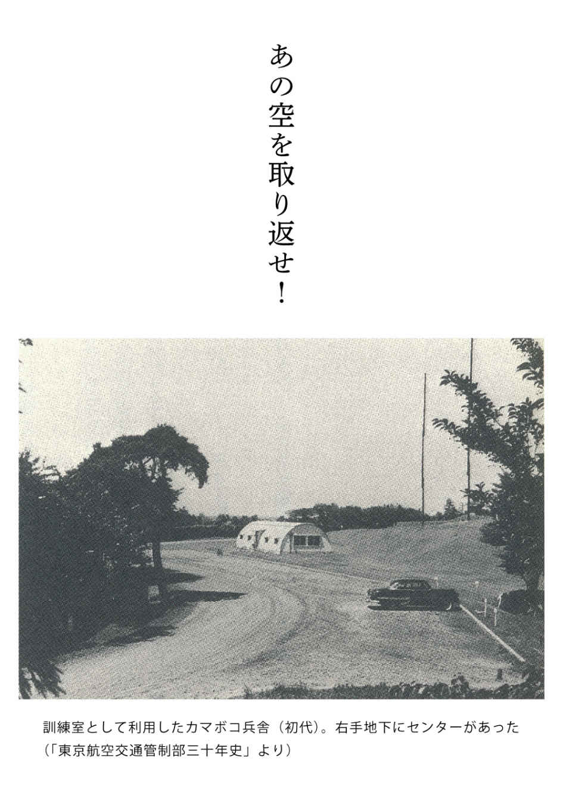
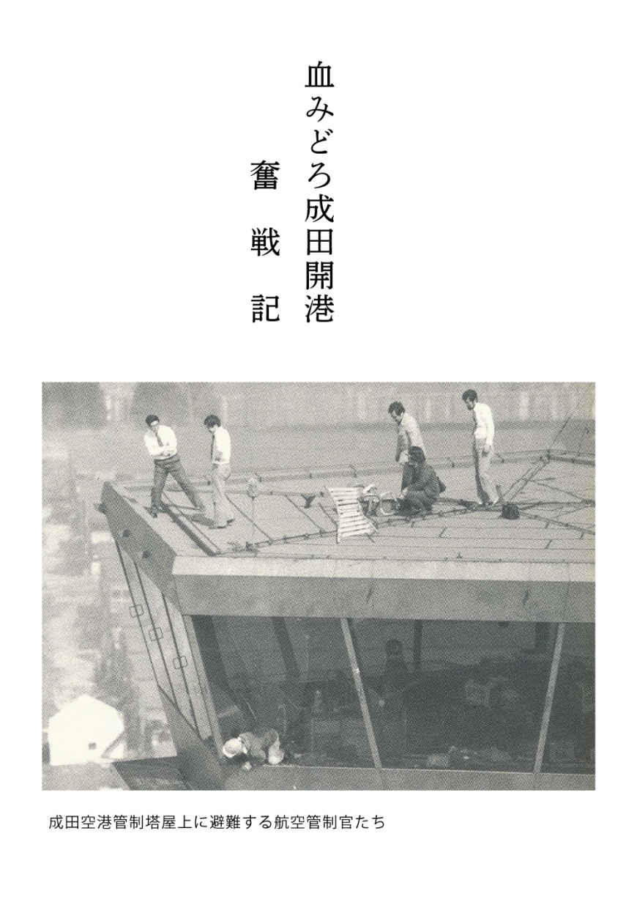
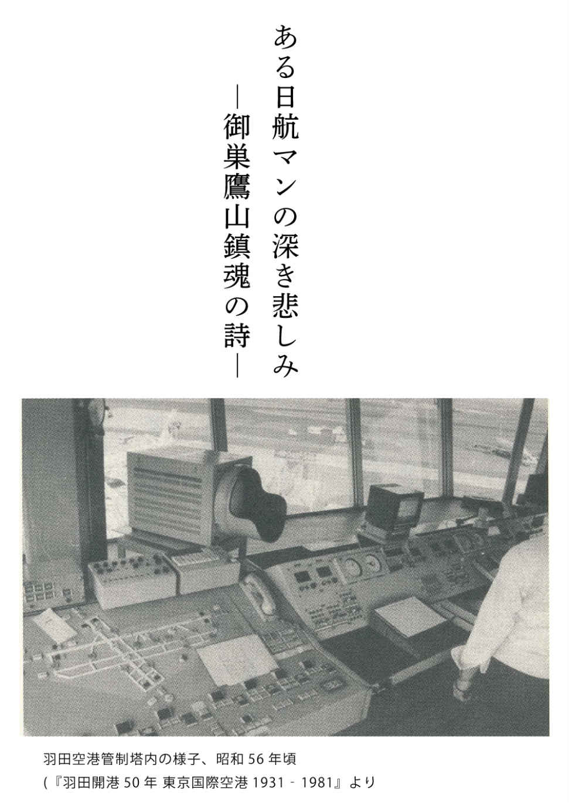

| あの空を取り返せ！: ある航空管制官の歩んだ戦後 (22世紀アート) | |
| 松田 更一 | |
| 22nd CENTURY ART (2017) | |
ここにある話は、昭和初期に生をうけ、その昭和を駆け抜け、平成に入ってなお四半世紀、合わせて八十数年を生き抜いてきた、一人の男の物語である。
昭和七（一九三二）年十一月十二日、私は鹿児島県鹿児島市薬師町（当時）の母の実家で、この世に生をうけた。母方の祖父は、鹿児島市内でも有名な小学校長であった、という。なにが有名かといえば、鹿児島市内にある小学校の中でも、もっとも口うるさくて厳しい、そして酒好きな校長先生であったらしい。小学生時代の父の思い出によると、祖父が町を通ると、さすがの腕白小僧どもが、「おーい、校長どんが来やったぞ！」、そう言って皆、木陰や土塀の後ろに隠れ、祖父が通り過ぎるのを見送ったものだという。
対して祖母は、心の優しい、仏様のような女性であったことを子ども心によく覚えている。私は見たことはないが、母の話によると、祖母は踊りが好きな女性であったという。正月、祖父の家へ年始にやって来た部下の先生方の酒盛りが始まると、決まってその踊りを披露した。その踊りというのが問題で、座布団を腹に抱えて妊娠した女性に扮 し、顔には「ヒョットコのお面」をかぶって踊る、鹿児島では「腹太 と踊り」と呼んでいる踊りを得意としたらしい。ところが子どもたちから見ると、これが恥ずかしくて、イヤでイヤで仕方がなかった。ついに子どもたちは決起し、酒盛りの前日、ヒョットコのお面を床下に隠し、さらに腹に入れる座布団も隠してしまった。いざ、祖母が踊る段になってヒョットコのお面を探したが、どこにも見当たらない。恐慌をきたした祖母は、いったいどうしたのか？ 残念ながらあとのことは定かではなく、母の話はそこで終わっている。
とにかく祖母は、陽気で明るい南国の女性であった。しかし、この祖母にも悩みや苦しみがあった。それは祖父の酒癖にあった。なにしろけた外れの量を飲み、酔うと酒乱に近い荒れようであった。祖母は、そのような祖父に悩み、たどり着いたのが宗教であった、という。
そんな訳で、祖母は娘である母の結婚相手には、絶対に酒が飲めない男を探しに探したらしい。そうして選ばれたのが私の父で、確かにまったく酒が飲めない、文字どおりの下戸であった。それも、酒の匂いを嗅いだだけでも酔ってしまうという正真正銘の下戸なのである。ところが、遺伝というものは恐ろしい。そのような父母から生まれた私も弟も、揃って呑み助。いわゆる隔世遺伝という奴だ。
その私が初めて酒（鹿児島で酒とは、焼酎のことであるが）を飲んだのは高校三年、演劇部の打ち上げ会の時であった。生まれて初めて飲んだ酒のうまかったことは、今でもよく覚えている。しかし初めて酒を飲んだ悲しさ、限界を知らない私は飲み過ぎて、意識が飛び、気が付いたのは翌朝の布団の中。シマッタと思ったがあとの祭り。布団の中で、父の叱責を覚悟した。
おそる恐る寝床から這い出した私は、父の叱責と鉄拳を覚悟した。ところが、いつもは厳しい父が言った言葉は、数十年経った今でもはっきりと覚えている。
「更一、ここに坐れ」
私は戸惑いながら父の前に坐ると、鉄拳が飛んでくるのを覚悟した。
「酒は飲んでもよいが、酒に飲まれるものではないぞ！」
意表を衝いたこの言葉に、私は驚くと同時に、ホッと安堵したことを覚えている。という訳で、酒は飲むことは飲んだが、父が生存中、「男同士の約束」は決して破らなかった。破ったのは、父の死後である。
一方、父方の祖父や祖母の思い出はまったくない。残されている写真から、微かに思い出すのは、祖母の面影ぐらいである。
高校時代、私は演劇に熱中した報いで、一年浪人してしまったが、親はそのことではとやかく言わなかった。これはありがたかった。
昭和二十七（一九五二）年二月、受験のために先輩を頼って上京すべく、鹿児島駅から急行に乗って東京へと向かった。今では考えられないことだが、その時にかかった時間がなんと三十九時間、体力には自信があった私もこれには参った。当時の急行は、それほどにゆっくり走っていた。
高度経済成長後の日本しか知らない人から見ると信じられないかもしれないが、アメリカとの講和条約が調印されて半年も経っていない当時、日本はあまりにも貧乏であった。新幹線など想像すらできない時代、石炭を燃やし、煙を吐きながら進む往時の蒸気機関車は、いかにもくたびれていた。
三月、尊敬する先輩がいる東京工業大学を受験したが、見事に失敗した。仕方がないので、もう一年浪人しようかどうか先輩に相談したが、説得され、合格していた二期校へ入学した。
しかし大学一年の夏、父が失業した。このため、父からの手紙で帰郷をうながされたが、それを蹴って、卒業までアルバイトでなんとか凌 いだ。戦後、朝鮮から帰国してからの父は、まるで敗残者のような生活を送っていて、私が帰郷したからといって、たいしたことは期待できなかったからである。
そのような訳で、大学の残り三年半は、アルバイトに加えて奨学金、そして授業料免除というありがたい制度を、大いに利用させてもらった。勉強は、そのためにしたようなものかもしれない。
また、アルバイトは、ケチなアルバイトからおいしいアルバイトまで、いろいろと経験させてもらった。まず高校時代の夏休みは、アイスキャンデー売りから煎餅焼き等々、いろいろ体験したが、大学に入ってからは、新聞配達、競輪場の売上金運搬、映画のエキストラから日銀のジャニター（掃除係）など職種の幅がかなり広がった。さらに、専門課程になってからは家庭教師など、生きるためにあらゆる仕事を経験したものだ。見栄も外聞もなかった。しかし、これはこれで良かった、と思っている。私はアルバイトを、世間一般で考える「貧乏学生」的に、生活のための手段とは考えなかった。私はアルバイトを「社会を知るための一手段」と考えていた。だから、アルバイトはあまり苦にはならなかったのかもしれない。
以後、私の半生は、本文に書いたとおりである。この経験は、社会的に地位が昇進するにつれて大いに参考となった。
松田更一
（一）
寒い朝だった。
突然、父に強く肩を揺り動かされて、私は目を覚ました。耳元に口を寄せた父が、囁 くように言った。
「更一、起きるのだ」
明け方の四時頃だろうか、外はまだ暗かった。なぜこのように早い時間に起きねばならないのかわからぬまま、私は寝ぼけ眼 でノロノロと起き上がった。
「すぐ洋服に着替えなさい」
声は低いが、父の第二の命令が飛んできた。言われるままノロノロと着替え始めたものの、なぜこのように早い時間に起きねばならないのか、さっぱりわからなかった。
「このリュックを背負って、外で待ってろ」
有無を言わせぬ、第三の命令が飛んできた。切迫した声であった。言われるままに私はリュックを背負い、外に出た。十月だというのに、外にはすでに霜がおりていた。思った以上に、寒い朝だった。立ったまま待っていると、じわりじわりと寒気が足元から這い上がってきて私を締めつけてきた。足踏みをしながら、私は父たちを待った。
ようやく父が弟忠紀を、母が妹龍子の手を取って出てきた。少々愚図 っている五歳の弟忠紀を、八歳の龍子が姉らしくなだめていた。父の右肩には大きな柳行李 （柳や藤 で編んだ籠 の一種。旅行などに用いた）が、背中には大きなリュックサックがあった。母も大きなリュックサックを背負い、右手には大きな風呂敷包みを提げている。そうした父母の格好を見た私はようやく、事態の深刻さが、おぼろげながらわかってきた。
「ついて来い」
父は低く短い言葉でそう言うと、先に立って歩き出した。その後ろをついて歩きながら、私は思った。
｜ これから一体どうなるのだろうか？
「久枝、なにをしている！」
突然、後ろを振り向いた父が、低いが鋭い声で母を呼んだ。つられて私も、後ろを見た。そこには、十年近く住んでいた我が家に、手を合わせている母の姿があった。つい半年ほど前に、腸チフスで亡くなった可哀想な妹紀子へ、別れを告げているのだろうか、頬にはきらりと涙が光っていた。
「泣いている場合じゃないだろう」
父の声はあくまでも低かったが、厳しかった。
「はい」
そう応える母の声は湿っていた。その母が、なにかを振り切るようにして龍子の手を取ると、のろのろと後ろからついて来た。
（二）
何事もなく走っていた貨物車が、大きな音を立てながら急停車した。有蓋 貨物車で寝ていた人びとは、その音で目を覚ました。起き上がった人も多かった。人びとは、小声で話し始めた。
「またまた金を取られるのですかね」
「もうこれで何回目ですか......」
そうした話が始まって間もなく、「各貨物車の責任者は集まってください」という日本人世話人会の人の大きな声が聞こえてきた。私は立って、有蓋貨物車の小さな窓から外を見た。霜がおりた田んぼの、荒れ果てた姿以外なにも見えなかった。間もなく我われが乗っていた貨物車の責任者が、帰ってきて大声で言った。
「皆さん、燃料代として各家から○○円出していただくことになりました。今から集めさせていただきます」
人びとはブツブツ言いながらも、しぶしぶ金を出した。しばらくして、列車は再び動き出したが、終点の釜山駅に着くまで、こうした急停車が何回続いたろうか。だから釜山駅に着いた時、皆は心底ホッとした表情を見せていた。
駅に降り立った人びとは、預けてあるトランクなど大きな荷物を受け取るため、それらを載せた別の貨物車が来るのを待った。何両かが目の前を通り過ぎて行ったが、半時間近く待たされたあと、ようやく我われの荷物を載せた貨物車がやって来た。
ところが、やって来たと思った件 の貨物車は、我われの前を素通りして、ガタン、ガタンと大きな音を立てながらそのまま通過して行った。あっけに取られた人びとは、ただ茫然と、自分たちの大事な荷物を載せた貨物車が無情に過ぎ、去って行く姿を見送るしかなかった。父は、「仕方がないか」ポツリとそう言ったのみであったが、大切なものをいくつか、トランクに入れていた母の嘆きは大きかった。
我われは、釜山港の埠頭の一角に設けられた、金網を張り巡らせた場所へと向かった。その入口には、米軍の憲兵が数名と朝鮮人通訳数名が机を挟んで坐っていた。やがて、乗船者の名簿作りのための面接が始まった。質問には、もっぱら父が答えた。
終わって最後に、所持金検査が行われた時のことである。父が持っている所持金すべてをさし出した時だった。
「ここにもあるよ」
そう言って弟忠紀が、腹に巻いて隠してあったものを、見せようとした。これには、父が慌てた。せっかく隠して持って帰るつもりの、トラの子の現金である。
「それは、いいのだ」
父はそう言って、忠紀の腹にある金を慌ててしまわせたが、忠紀の機嫌は悪かった。そういう弟を、母は優しく宥 めた。おそらく、正直に話したのになぜダメなのか、弟の顔はそう訴えているようであった。
その夜から、私たち親子五人は、想像を絶する寒気の中、釜山港の埠頭で引き揚げ船「興安丸」がやって来るのを待った。夜ともなると、親子五人はリュック等を椅子代わりに輪になって坐り、頭から毛布をかぶって寝た。母は妹龍子を抱えるようにして寝ていた。結局、父と私が、交代でむずかる弟を宥めて、寝かしつけることになった。とは言え私は中学一年、ふと気が付くと、私のほうが寝込んでしまうことが多かった。それも、両腕で抱えて寝かせた弟に、覆いかぶさるようにして寝てしまっていた。
「苦しいようー、苦しいようー」
弟の悲鳴で、まず目を覚ました父が、私の手から忠紀を取り上げ、宥めながら寝かしつけた。私はその泣き声を聞きながら、再び夢の世界へと入るのだった。だが、寒い中で、しかも荷物を椅子代わりにしてでは、寝られるものではない。しかし我われより早く釜山港に着いた人びとも多数いて、贅沢なことは言えなかった。みんなは、ややもすれば絶望的な気持ちに陥るのを、お互いに励ましながら過ごした。
そうした絶望的な気持ちに陥っていた引き揚げ者たちの許 に、待ちに待った朗報が飛び込んできたのは、数日経った日の夕方であった。引き揚げ船「興安丸」が、明日午後には釜山港に着くというビッグニュースだ。ジリジリしながら寒さに耐え、寝られない夜を幾夜も過ごしていた引き揚げ者たちは、その朗報に歓声をあげた。
喜びに溢れた皆の話が一段落した時、辺りは急に静かになった。すでに夜のとばりが降りようとしていた。その中で、逃亡者のようにして家を出てきた数日前の早朝のことを、私は思い出していた。なぜ、我われは逃げるようにして家を出ねばならなかったのだろうか。しかしこの疑問は、中学一年生の頭では、どうしてもわからなかった。日本が戦いに敗れたことと、我が家の夜逃げにいかなる関係があるのだろうか？
日本に帰ってきたあとも、数回、私はその疑問を父にぶっつけてみたが、「そのうち話す」と言ったのみで、決して話してくれなかった。結局、なにも話してくれないまま、父はこの世を去っていった。
私は、母から聞いた父の仕事の話、当時の朝鮮の実情などから類推する以外に、なぜあの地を、鞭もて追われるようにして去らねばならなかったのか、知る由はなかった。
（三）
おぼろげな記憶をたどってみると、没落士族の三男であった「新納三郎」は、鹿屋農学校を出たあと、松田家の養子となり、「松田三郎」と改名した。昭和三（一九二八）年朝鮮に渡り、忠清北道郡庁の地方公務員となった。父は明治三十七（一九〇四）年の生まれであるから、二十四歳の時である。やがて昭和六（一九三一）年に、明治三十九（一九〇六）年生まれの母、平山久枝と結婚したが、この結婚については裏話がある。
母から聞いた話であるが、祖母栄は、久枝の結婚相手を選ぶに当たって、第一に士族出身であることは当然として、次に重視したのが、絶対に酒が飲めないことが条件であったらしい。
大酒飲みであった夫辰彦に心底苦労した栄は、娘には絶対に自分と同じ苦労をさせたくなかったらしい。栄の信念にも似た、この「絶対的聟 選び基準」にかなった父三郎は、祖母の期待どおり、ほとんどといってよいほど酒は飲めなかった。ところが皮肉なことに、私や弟が酒飲みであることを知った母は、「隔世遺伝じゃろかねぇ」と言って嘆いたものだ。
朝鮮で公務員となった父は、忠清北道郡庁の山林課で働いていた。課の名称どおり、山に植林したり、樹木の育成や伐採等にあたる。日本の営林署のような仕事に相当するのであろうか。当時の朝鮮の山は、ほとんどが「はげ山」であった。周りの山々には木がほとんどなく、全面茶色をしていた。木々に覆われて青々とした日本の山を見慣れた目には信じられない話であろう。しかし、当時子どもであった私も、微かながらそのような記憶がある。
それならばなぜ、山に木がないのだろうか。寒い冬を過ごすため、朝鮮では「オンドル」を主な暖房手段としているが、その燃料に木や落葉を用いた。日本統治前の朝鮮王朝（李氏朝鮮）時代、山の木々を勝手に伐採したり、落葉をとることはあっても、その跡に植林し育成することは、まったくと言っていいほど疎 かにされていた。この結果がどうなったかは、明らかである。
木々にとって根の周辺に落ちた葉は、冬の寒さを防ぐための暖房着であり、さらには、翌年の肥料となるものであった。だから、落葉まで燃料にしてしまうと、寒さで木々を枯らすだけでなく、翌春の大切な肥料が失われて、育つことができない。
しかしながら、朝鮮の貧しい人びとは、そのようなことが仮にわかっていたとしても、「現在の生活」こそが緊急な課題であった。このため日本が統治して以後、彼らは取り締まりの厳しくなった目を盗んでは木々を切り倒し、落葉をかき集めた。否、集めざるを得なかった。ここに、政治や行政が考慮せねばならない、大きな課題があった。
この解決のために、当時の日本の為政者たちはどうしたのだろうか？
なんと彼らは、強権でもってそれを解決しようとした。結果として、父たち末端の行政官に課せられた仕事は、無断で山の木々を切り、落葉を拾う者を罰し、処罰することであった。
戦後、不法伐採で処罰された者たちが、取り締まりにあたった末端行政者たちを憎み、仕返しをしようとしたのは、当然であろう。
戦後すぐに父が雲隠れし、その父を追って探しにやって来た朝鮮の人びとがいた理由は、このことと関係があるのではないだろうか？
しかし今となっては、それらすべてが時の彼方へ去ってしまい、「真実」はほとんどわからない。

（一）
「ストップ！」
突然、闇を引き裂く鋭い声を背後に聞いた。それまで、ほとんど駆けるようにして歩いていた私は驚いて立ち止まり、後ろを振り返ろうとした。
「ドン・ルッ・バック（後ろを見るな）。ホールド・アップ！（手を上げろ）」
再び鋭い声が、私を襲った。
なにがなにやらわからないまま私は手を上げ、命令どおり、振り返ろうとした顔を前に戻した。カッ、カッ、カッと堅い軍靴 の音が、闇の中でゆっくりと私の背後に迫ってきた。なぜだ、なにがあったのだろうか。番兵に誰何 された理由が、私にはまったく不可解だった。
しかし、「なぜ、手を上げねばならないのか」という疑問よりも、背後に迫ってくる軍靴の重々しい音の恐怖が、悪寒のように私の体の奥を走り抜けていた。理由は、つい先日、米軍演習場の周辺で日本人が、米兵に射殺された記事を読んだばかりだったからだ。終戦間もない当時、連合国（といっても実際はほとんど米軍であったが）兵士による事件が頻発していた。群馬県の相馬原演習地で薬きょう（弾を撃った後の容器）を拾っていた農婦を射殺したジラード事件をはじめとして、演習地周辺の住民と米兵のトラブルが絶えなかった。
「ホールド・アップ！」
再び背後から、番兵が鋭く威圧的な声で叫んだ。そして、靴音が止まった。
「これは、一体どうしたというのだ！」
後ろを見ることもできず、私の頭のなかでは疑問と恐怖が渦巻き、混乱していた。背後で靴音が止まった一瞬、闇の中に静寂が訪れた。
と突然、今度は強烈な光が私を襲った。恐らくジープのヘッドライトかなにかであろう。驚いた私は、一瞬目を閉じ、上げた手で頭を抱え、その場に屈 み込んでしまった。パニック同然の私は、なにか考えられるような状況ではなかった。
屈み込んだ私の前で急停止したジープから、二人のＡＰ（エア・ポリス： 空軍内の司法権をもつ警察組織の兵士。「空軍憲兵」）が駆け降りてきた。一人が私に銃を向け、もう一人が、それまで銃を構えて私を監視していた番兵となにやら話した。その後、二人のＡＰは、屈み込んでいた私の腕を両側から抱え、荒々しく引き摺 るようにしてジープへ乗せると、疾走を始めた。完全に、私は犯罪者扱いであった。
梅雨近い夜空は、低く厚い雲に覆われていた。雨粒が、ポツリと私の頬に当たった。朝から曇っていた天気も、ついに雨になったようだ。
板付 基地（現福岡空港）をすっぽりと覆った闇の中で、点在する防犯灯の光だけが、薄ぼんやりと、そこかしこに浮かんでいた。疾走する天蓋のないジープに坐っている私の顔を、雨と風が容赦なく叩きはじめた。
｜ それにしても......。
ジープの後ろの席でＡＰに腕を取られながら、私は思った。
｜ 一体どうしたというのだ！ なぜ、このような扱いを受けねばならないのか......。
いきなり犯罪者扱いにされた「屈辱感」と、弁明の機会すら与えられずに拘束された「怒り」が身体中を駆け巡り、それに加えて「恐怖心」が私を苛 んだ。ほどなくして、私の感情などまったく無視して疾走していたジープが、突然停止した。見ると、夜中でもそこだけが煌々 と強烈なライトで照らされている憲兵隊本部前であった。
まず運転席のＡＰが降りると、再び私は、二人に両脇から腕を取られ、憲兵隊本部の左横に建つカマボコ兵舎のほうへと連行された。そして長い廊下を、荒々しく引き摺られるようにして、とある室内へと連れていかれた。
部屋ではもう一人、別のＡＰが待機していた。そこで私は身ぐるみ脱がされ、真っ裸にされた挙げ句に、手を上げたまま、壁に向かって立たされた。
一人が、真っ裸になった私の体を、頭のてっぺんから足の先までくまなく、強い力でタッチした。もう一人のＡＰは、私の脱いだ衣服を、裏から表から綿密に検査していた。その間、三人目のＡＰは銃を構え、二人のＡＰを援護するようにして、私を監視していた。
身長百六十センチ、体重五十キロしかない私は、日本人の中でも大きいほうではなかった。ましてや、大男ぞろいのＡＰに囲まれた私は、あたかも小猫が猛犬からいたぶられているも同然であった。自尊心とプライドを完全に無視した彼らの処置は、私を再び怒りといわれなき屈辱感で一杯にした。
しかし、そうした私の些細な感情などあざ笑うがごとく、ＡＰたちは目的の検査を終えると、ようやく私に衣服を着けさせ、部屋の隅に置いてあるテーブルの前へ立つように命令した。テーブルには、今、目の前で衣服チェックをした際、ポケットにあった身分証明書や財布、そして鍵などが並べられていた。
それを、あたかも見ていたかのようにノックの音がしたあと、いかつい顔の、雲を衝くような黒人ＡＰが入ってきた。腕章を見ると、スタッフ・サージャン（伍長）であった。彼は私に坐るように言ったあと書類を開き、西部訛りの強い英語で私に聞いた。
「住所および氏名は？」
「松田更一、日本国、住所は福岡県福岡市××町×丁目××番地」
「職業と身分は？」
「身分は日本国国家公務員、職業は航空管制官」
「なぜ、日本国国家公務員が、米軍基地を夜中にうろついていたのか？」
「うろついてなど、いません。私は、日本政府の命令で米軍基地航空管制隊へ、訓練のため派遣されてきた者です。今夜も、今から勤務に就くため職場へ向かっていたのです」
頭にきていた私は、一段声を張り上げて言った。
「このような事態になって、勤務に遅れてしまったではないか......」
話しているうちに私は、怒りや悔しさの混ざり合った気持ちが昂じて、叫び出したい気持ちになり、相手を詰問するような厳しい声になっていた。
「質問にだけ答えろ！」
伍長は、私の抗議にはまるで取り合わず、冷然として質問を続けた。
「今夜の勤務当直将校は？」
私は目を閉じ、しばし感情が収まるのを待って、応えた。
「ルテナン・ホワイト（ホワイト中尉）」
伍長はそこで、テーブルに置いてあった私の身分証明書を取り上げ、それまでの私の証言と見比べたあとに言った。
「スタンバイ、ミニット（しばらく待機せよ）」
そう言い残すと伍長は、私の証言したメモを持って、部屋から出て行った。私は目を閉じてじっと待った。怒りと屈辱感で頭は一杯になり、なにも考えられなかった。十数分後に帰って来た伍長は、再び私に質問した。
「なぜ、あの道を通り抜けようとしたのだ？」
西部訛りの強い伍長の英語は、相変わらず聞き取りにくい。
｜ なぜって......？
私は、数日前もあの道を通っていた。私は頭を捻 りながら、伍長に訊いた。
「数日前の昼過ぎにも通っていたのですが、あの道路は通行できないのですか？」
伍長は言った。
「夕方五時から翌朝六時まで、夜間通行禁止になっているのを知らないのか！」
知らないお前が悪い、と叱責にも似た伍長の鋭く強い言葉に、私は一瞬言葉を失った。
考えてみると、確かにそれまでは夜勤で、その道を通った記憶はなかった。職場への近道であることはわかっていたが、夜は暗くて薄気味が悪く、昭和三十二（一九五七）年五月に福岡に転勤してからこの一ヵ月、夜間に通ったことはなかった。
しかし、この日は先輩の送別会が市内であり、終わった時は、すでに勤務時間が迫っていた。慌てた私は、米軍基地前までタクシーを飛ばしたあと、少しでも早く着くためにその道を選んだのであった。
「ザッツ・リーズン・ホワイ......」
私は拙 い英語で、なぜその道を選んだのか、つっかえながら説明した。
その後、二、三の質問をしたあと、伍長は後ろを振り返り、書記役として控えていたＡＰとなにやら話すと、再び待機するように命じた。やがて書記をしていたＡＰを連れて、出ていった。
伍長はドアの取っ手に手を掛けて開けようとしたが、ドアはなかなか開かなかった。ガチャ、ガチャ、ガチャと二、三回引いたり押したりしたあと、ようやく開いたが、建て付けの悪い、俄 造りの米軍カマボコ兵舎によく見られる光景であった。
「ガッデム・ドア（クソ忌々 しいドアだ）......」
伍長は口汚く罵 りながらＡＰと一緒に、靴音荒く出ていった。それまで、伍長とのやり取りで頭が一杯になっていて、そうした音にすら心を向ける余裕がなかった私だが、ようやく落ち着きを取り戻したからだろう、悪態を吐く彼らを見て「ざまあ見ろ！」と心の中で快哉 を叫んだ。
二人の靴音が次第に廊下の奥へ遠ざかっていくのを聞きながら、私は初めて辺りを見回した。そこは、窓もない牢獄のような一室であった。残された監視役のＡＰは、私をチラチラ見ながら、部屋の中を意味もなく歩き回っていた。もう一人のＡＰは私の後ろの椅子に坐って、私を監視していた。私は部屋を歩き回るＡＰを見ながら、開き直った気持ちになり、目を閉じた。そして思った。
「｜ そうか！ ここは日本ではない。アメリカなのだ」
今夜もタクシーで基地ゲート前で降りた時、私はそれとわかる日本人女性と手を組んで歩いていたＧＩたちと行き会った。基地の周辺は高い柵でぐるりと囲まれ、柵の内側には百メートルごとに日本人のＣＧ（シビリアン・ガードマン： 米軍雇用の日本人警務員）が軍用犬とともに立哨していた。よくよく考えてみると、この柵は単なる柵ではなく国境であったわけだ。
〈何人 といえども、許可なく中に入ることはできません〉
英語とその下に日本語訳を書いた約一メートル四方の看板が、これまた百メートルごとに掲示してあったことを、今さらながら思い出した。日本の国土でありながら、「ニホンではない」という厳然たる事実を......。
｜ そう、ここはア、メ、リ、カ、なのだ。
なにか新しいものを発見したような気持ちになり、私は自身に再確認させるがごとく、再び呟 いた。
「ここは、日本ではなかったのだ」
（二）
戦後十年目の昭和三十（一九五五）年は、サラリーマンにとっても主婦にとっても、生活革命の年であった。洗濯機、白黒テレビ、電気冷蔵庫という新たなる時代の三種の神器が、主婦が憧れた生活を実現するのに不可欠な道具になっていった。
創業間もないあのソニーも、次のように言ってサラリーマンたちの心を掻きたてた。
「ラジオはもはや、電源コード付の時代ではありません。ご家庭のラジオもすべてＴＲ（トランジスターラジオ）にすべきです。皆様のお好みの場所に、ＴＲはお供できます」
昭和三十一（一九五六）年一月二十三日に発表された芥川賞は、一橋大学法学部に在学中の石原慎太郎「太陽の季節」に決定した。作家の弟でもある石原裕次郎主演の同名の映画（同年五月公開）を切っ掛けに、「太陽族」が出現、大衆社会の到来を告げた。そして、七月十七日に発表された経済白書の副題に付された「もはや戦後ではない」という言葉が、その年の流行語になった。
しかし、昭和三十一年に大学を卒業した大半の学生たちにとっては、依然として就職先は少なく、買い手市場の年であった。私もまた、大半の大学生同様に就職探しで血眼になっていたが、どこを探しても見つからず、やむなく大学が紹介してくれた中小企業のメーカーに就職せざるを得なかった。決まったのは、卒業一ヵ月前の二月のことであった。
この会社は、山手線大崎駅から徒歩十分程度の場所にあった。当時、大崎駅周辺は、戦災を受けた焼け跡がまだ整理されておらず、焼け跡の残骸や建物の土台だけが、いたる所に見られた。そのなかには、沖電気をはじめとした大中小電機メーカーの工場群があり、ほとんどが平屋のバラック建ての工場であった。なお、そうした工場群の中には、東京通信工業もあった。今の「ソニー」の前身である。
私が入社したＳ通信工業株式会社も、そのような会社の中の一つであった。五月連休までは研修が中心で、のんびり過ごしていたが、連休が明けると技術部技術一課試験係に配属された。係長は稲野という三十歳ぐらいの痩せぎすな、背の高い男であった。係員は女性を含めて数名いた。
そこでしばらく見習いのような仕事をさせられたが、六月に入ってから俄然忙しくなった。連日連夜、土曜も日曜もない日々が続いた。全国の電力会社へ納入する、発電所用電力測定メーターの製品試験であったが、納入期限の七月に間に合わせるためであった。
当時、東京電力をはじめとして、北は北海道電力から南は九州電力まで、全国の電力会社は、各所にできる新設ダムに合わせて、発電所用の電力測定メーターを数多く、関係メーカーへ発注していた。
私が所属する試験係の仕事というのは、工場でできた製品の性能試験であるから、どうしても製品の仕上がりの速さに左右される。工場での仕上がりが遅れると、当然のようにしわ寄せは試験係へくる。連日連夜、頭を使う労働にヘトヘトになりながらも、若い私は頑張り抜いた。
しかし、七月が過ぎれば少しは息抜きができると考えていたのであるが、私たちの期待を裏切って、八月に入っても相変わらず連日連夜の仕事が続いた。次の締め切り期限である、九月納入の仕事が待っていたのだった。
そのようなある日、私は会社で倒れ、即日入院させられた。急性肝炎と診断された。しかし、幸いに病状は軽く、三日ほどして退院した私が下宿先のアパートへ帰った日、溜まっていた郵便物の中に、運輸省（現国土交通省）航空局から来た書留封筒を見つけた。
じつは前年、私は「航空管制上級職試験」を受験して、合格だけはしていた。国家公務員の採用は、公務員の身分や労働条件を一括して司る人事院が、試験を実施していた。そして、合格した者は人事院が作成する採用者名簿に載せられ、一年間官報に公示される。その後は人事院の手を離れ、各省の持つ採用枠の範囲で採用数を決め、採用決定は各省の判断に任される。
ところで私の場合、合格はしたものの採用枠には入らなかったらしい。四月が過ぎても採用通知はなく、梨の礫 であった。それが、今頃になって採用通知が舞い込んできたのである。書面に目を通すと、昭和三十一年十月×日十時、東京都千代田区大手町××番地にある航空局へ出頭されたい、という簡単なものであった。その夜、私は久しぶりに病院から戻ったアパートの自室で考えたが、すぐには答えが出なかった。
今の会社の待遇は金銭的にはさして悪くはなかった。私のいる会社の大学卒初任給一万千五百円と比べ、上級職といっても公務員の初任給は八千七百円である。待遇は現在より悪くなることは明らかであった。
「しかし、......」
その時、私の脳裏をよぎったのは、大学三年の時に選択した「航空概要」の講義であった。のっそりと教室に入ってきた井上講師は、当時の日本人としてはめずらしい巨漢であった。そして巨躯にふさわしい、茫洋とした風貌をしていた。
「皆さん......」
そう呼びかけた講師は、学生へ問いかけた。
「皆さんはこの目の前にある空間、この空間が誰のものであるのか、知っていますか？」
その話を聞いた学生たちは、質問の意味がわからず、皆、ポカーンとして講師の小さな細い目を見た。
「ご承知のように、昭和二十七（一九五二）年四月に講和条約が発効し、日本は独立したと言われています。確かに地上の主権は、米軍基地を除き恢復しました。しかし......」
井上講師は、そこで「しかし」という言葉に力をこめて、再度繰り返した。
「しかし、日本の空域の主権はいまだにアメリカの統治に任されているのです。皆さんの目の前にある空間、足を離したこの空間、この空間はいまだに日本人が自由に使用できないのです」
そう言って、講師は教壇で軽く飛び上がった。巨体が教壇に飛び降りた瞬間、教室一杯に大きな音が響き、床が大きく揺れた。しかしその音は、私たち学生の耳だけでなく、心のなかに強く、大きく響いた。
「私が今ここで飛び上がったこの空間、この空間はいまだ日本のものではないのです。違うんですよ......」
講師はここで、腹の底からしぼり出すような声で、テーブルをドーンと叩いた。その顔には、私たち学生には想像もできない、悲痛で哀しい表情があった。
「この空はいまだに、いまだに......」
興奮のあまり、しばし絶句したあと、講師は言った。
「アメリカのものなのです」
そして講師は、大声でそれを繰り返した。
「簡単に言えば、日本人が自由に日本の空を飛ぶことが、いまだにできないということです。この事実を、この事実を諸君はわかりますか......」
井上講師はそこで話を切って、私たち学生の顔を右から左へぐるりと見渡した。
一瞬、静寂が教室を包んだ。私たち学生にとって、その話はまったく耳新しいもので、驚くべき内容であった。それにしても、この空間がアメリカの領空だということはいかなることなのだろうか？ 空域の主権がいまだに日本人の手にはない、ということは抽象的には理解できても、具体的にそれがいかなることなのか、その日の話だけではまったく理解できなかった。
井上講師はその講義の最後を、次のように締めくくった。
「日本政府も、ようやく昨年、即ち昭和二十八年から航空管制職上級職採用に踏み切りました。すでに今年四月、第一回の試験に合格した航空管制上級職の諸君が続々と入省され、現在、幹部研修を受けておられます。
皆さんの中で、我こそは、と思われる方は、たとえ一人でも二人でもよいから、幹部航空管制官になり、あなた方の手で日本の領空権を米国から取り返してください」
そして最後に講師は叫んだ。
「この空を取り返してください！」
茫洋とした巨漢講師の、どこからそうした情熱が出てくるのか......。
井上講師の悲痛で熱のこもった話に、ただただ圧倒された学生たちは、話が終わると期せずして、絶大なる拍手で彼の話に応えた。この時の井上講師の話が、今、私の脳裏に再び甦 ったのである。私の若い心に、大きな火が灯 り、輝いた。
翌日、私はＳ通信工業を紹介してくれた教授を訪ねるために、さらに一日会社を休み、大学を訪れた。世話になった教授へ航空局から採用通知が届いたことを報告し、自分の考えを話して教授の了解を求めた。話が終わって辞去する私に、教授は静かに言った。
「松田君、石の上にも三年という諺 がある。次の職場では、勤務条件がいかに厳しく大変でも、三年は絶対に頑張るのだぞ」
私は教授のその言葉を噛み締め、静かに頭を下げた。
しかし私はその時、教授が言った「三年は絶対に頑張るのだぞ」という言葉の重みが、いかに重いものであるか、まったくと言っていいほどわかってはいなかった。
その年の十一月、私は運輸省航空局に入省した。航空局へ登庁した最初の日、国鉄（現ＪＲ）神田駅を降りた私の顔を、風が鋭くそして冷えた針のように刺した。十一月の空は、今にも雨が降りそうな雲行きであった。なにかそれは、私の前途を暗示するかのようで不吉に思えた。気の滅入るような、いやな朝であったためか、いつまでも私の心に残った。
翌日から、早速、六ヵ月の管制官研修が始まった。
数年後、羽田空港に研修所ができて、訓練も本格化したが、当初は教官も仕事の合間に時間を割いて教える程度の、簡単なものであった。しかも、大手町にある汚い航空局の木造庁舎で、会議室を使用しての研修である。研修内容もアメリカの教科書を原文のまま使用した、誠にお粗末なものであった。
ここで、私たちは半年間の研修を受けたあと、実地訓練を受けるため、全国の米軍基地へ派遣されることとなり、私は駐在官の身分で福岡へ派遣された。
「ガチャ、ガチャ、ガチャ......」
突然ドアを開ける音がして、それまで過ぎ去った日々の回想に耽 っていた私は、現実に引き戻された。
乱暴な音に驚いて目を大きく開け、ドアのほうを見た。大きな図体をした伍長が、建て付けの良くないドアから、ドタドタとつんのめるようにして入ってきた。そして、伍長に続いて入ってきた、背の高い男前の士官を見て、私は喜びが突き上げてくるのを感じた。
｜ 助かった......。
思わず私は、心の中でそう叫びながら立ち上がり、手を差し伸べた。ホワイト中尉であった。彼は私が所属する管制チームのチーフである。そのホワイトが、私の身元引受人として来てくれたらしい。
「ミスター松田。一体どうしたのだ......」
ホワイト中尉は、心配そうにそう言いながら、私に歩み寄ってきた。
恐怖と屈辱、そして怒りがゴチャ混ぜになって私を襲った昭和三十二（一九五七）年六月の夜は、かくして過ぎていった。
（三）
翌朝、深夜勤務を終えた私は、身も心も疲れ果てた体を引き摺りながら、帰寮の途についた。ゲートでは、通勤時間帯とあって日本人従業員が列をつくっていた。両側に監視ボックスがあり、入場者から見て左側が歩行者用の入口で、皆ここを通って基地内の職場に向かう。チェックするＡＰとその下で働く日本人警務員たちは、左側の通路を挟むようにして両脇に立ち、目を皿のようにしながら入所パスを点検していた。
一方、右ゲートでは、自家用車で通勤する米軍士官たちが、ＡＰの挙手の礼を受けながら基地内へ続々と入っていく。基地内の通行は、すべてアメリカ国内と同じく自動車は右側通行であった。そうした朝の混雑を見ながら、私はとぼとぼと四十分近くを歩いて帰寮した。
当時、私が住む独身寮は、博多駅のひと駅隣の竹下駅から徒歩五分ほどの場所にあった。寮はかつて産婦人科の病院であったというが、二階にある独身寮は入院患者の病室をそのまま使用していたため、暗くて陰気くさかった。個室である点はよかったが、消毒薬の匂いが部屋に染み付いているのには参った。一階は診療室として使われていたようで、引っ越してきた当初、寮の先輩から飲み会の席で、一階の奥の部屋には堕胎した血痕が今でも残っていて時々幽霊が出る、などと言って脅かされた。
それでも住宅難の当時、独身寮と言えば大部屋が常識という時代であったから、文句など言ってはいられなかった。
疲れた足を引きずって寮にたどり着き、玄関の戸をガタピシと派手に音を立てながら開けると、賄 いのおばさんがめずらしく「お帰り」と言いながら奥の賄い室から出てきた。
「松田さん、いいものが届いていますよ。なんだと思いますか......」
そう言いながら、右手をエプロンのポケットに入れ、ニコニコした顔を見せた。しかし、私は昨夜の「事件」で一睡もできず、勤務明けで疲れきっていたこともあって、憔悴 しきって靴を脱ぎ捨てると、玄関の土間から一段高い式台へ上がった。その私の目の前に、おばさんはポケットに隠し持っていた物を突きつけた。
「そんな時化 た顔をしないで。ほらほら、ラブレターだよ......」
私は驚いて、目の前に突き出された封筒を見た。
それは、ピンクがかった小型の女の子が好みそうな封筒であった。裏を見ると、わりあいしっかりした女文字で館山恵子と書かれていた。学生時代、卒業の半年ほど前までの二年間、私が家庭教師をしていた教え子であった。福岡へ転勤してきたあと私は、挨拶状を恵子の両親宛てに出していたことを思い出した。
おそらく恵子は、その挨拶状に書かれた住所を見て手紙を送ってきたのだろう。あの子も、すでに高校生になっているはずである。卒業してから福岡へ転勤してくるまで、忙しさにかまけてすっかりご無沙汰していたことを思い出した。
それにしても、人間なんて現金なものである。とりわけ若者はそうだ。たとえ教え子であっても、女の子から手紙をもらうことなどなかった私は、それまでの仏頂面を急にニコニコ顔にして、おばさんへのお礼もそこそこに、二階にある自室へすっ飛んでいった。
おばさんは、そんな私を笑いながら見ていた。廊下にある共同洗い場で手を洗うのももどかしく自室へ入ると、私はそそくさと封を切った。
「先生、お元気ですか？」
綺麗な文字だった。
「私は今、先生のお陰で希望していた都立○○高校へなんとか入ることができ、毎日元気で通っています」
恵子の手紙は、躍るようなタッチで、高校一年生にしてはわりとしっかりした筆致で書かれていた。
「先生、私は今、先生をもの凄く恨んでいるのです」
突然、雲行きが悪くなり、私は慌てた。
「先生、なぜ、なぜ福岡へ行かれる前に、一回でもよいから我が家へ来てくれなかったのですか？」
そういえば出発前の忙しさにかまけて、恵子のことなどすっかり忘れていたことを、私は思い出した。
｜ 悪いことしたなー。
私は、心の中で小さく呟いた。
「父も母も怒っています（というのは嘘）。怒ってはいませんが、寂しそうでした。だから、先生の挨拶状を見て大変喜んでいました。
どうか、今後もお忘れなく父母へお手紙ください。そして私へもお忘れなく」
そのあと手紙には、高校生活のこと、新しい友達のこと、高校で習っている先生のことなどが、便箋数枚にわたって綴 られていた。私は、昨晩遭遇した忌々しい出来事や、それに続く深夜勤務での疲労のことなどすっかり忘れて、恵子の手紙を何回も読み返し、同封されていた写真を眺めた。
両親の後ろに、恵子と弟の真二が並んで立っていた。恵子は、しばらく見ないうちにすっかり女らしくなっていた。セーラー服がよく似合う。形のよい鼻、少し厚めの唇、含み綿をしているかのようにふっくらとした頬、そして頬には可愛いエクボがあった。おっとりと上品な顔立ちは、当時とほとんど変わらなかった。
｜ あの頃は楽しかったなー。
私は、惨 めな現状と恵子を教えていた頃を比べ、当時を懐かしく想い出した。
「恵子もすでに高校一年か......」
初めて恵子を教えた中学二年頃の、幼い顔を想い浮かべながら、時の経つ速さをしみじみと感じていた。
翌日、休みであった私は、早速恵子へ返信を出した。
その中で私は、就職探しで奔走した経緯、また就職したあとの忙しさにかまけて、すっかりご無沙汰してしまった失礼を詫びた。
次いで、大学へ向けての受験勉強の心得などアドバイスしたあと、大学に入るまでは私への手紙などに時間を取られないよう、せいぜい夏休み、春休みに暇があったら書きなさいと、かつて先生であった威厳をもって注意した。最後に、ご両親へくれぐれもよろしくと結んだ。その夜、私は久しぶりに博多の町に出た。
昭和三十二年当時の博多駅は、現在の博多駅から六百メートルほど離れた北西にあり、現在の駅に比べると、想像もできないほどに淋しく、侘しかった。ホームがたったの三ヵ所、待合室が一ヵ所だけ西口にあった。改札口前の東口前広場は、まだ戦争の傷跡を多く残した、野原同然の様相であった。反対側の西口前広場は、バラック建ての飲み屋が軒を並べ、博多駅前から博多港へ真っすぐ向かう大博通り沿いには、いかがわしい青線、赤線の歓楽店が林立していた。
西口改札を出た私は、そうした場所を横目に見ながら、呉服町の交差点を左に曲がった。市内電車が走る明治通りを歩いて、中洲の行きつけの一杯飲み屋の暖簾 をくぐった。歓迎会の二次会で先輩に紹介されたその店は、太ったおばさんが一人で切り盛りしている、小さな飲み屋であった。
私は家庭的な雰囲気が気に入って、博多の町へ出ると必ずその店を訪ねるようにしていた。そこでビールを飲み、食事をすませて帰ってきた私は、自分のベッドに横になりながら、ラジオのスイッチを入れた。
当時の、真空管式のラジオからチゴイネルワイゼンの音楽が流れていた。サラサーテ作曲の、物悲しいような、それでいて甘酸っぱいヴァイオリンの音を聴くうちに、私の心はなんとなく息苦しいような切なさで、胸がしめつけられた。私は、まだ二十三歳の夢多き若者であった。その夜、私は恵子の夢を見た。
（一）
休みが過ぎて次の勤務の初日、私はホワイト中尉へ、先日の夜、世話になった礼を述べた。
「ノー・スエット（たいしたことじゃないよ）」
中尉は鼻筋が通った端正な面長で、苦み走った風貌に加えて颯爽 とした長身、今日風に言えばなかなかのイケメンである。その中尉が、ニッコリ笑いながらそう言うと、片目をつぶってみせた。
しかし実際は、「たいしたことじゃない」で済む話ではない。あの夜は私にとって、大袈裟 に言えば、生きるか死ぬかの瀬戸際を経験した大変な夜であった。
ホワイト中尉にしても、あの夜の表情から推察すると尋常ではなかったはずだが、育ちのよい彼は、私を安心させるためにそう言ったのだろう。
彼は、エール大学在学中の二十歳になった時、志願して軍務に就いたという。エール大学はアメリカ東部の名門校で、ハーバード大学に肩を並べるアメリカ有数の私立大学であった。日本でいえば、さしずめ早稲田か慶応に匹敵する名門校である。
浅井信雄の『アメリカ50 州を読む地図』（新潮社）によると、エール大学のあるコネティカット州は、全米でもっとも豊かな人びとが住んでいることで有名である。教育にも熱心な州であり、多くのエリート・サラリーマンたちは、コネティカット州に住み、高級感溢れるベッドタウンから西側の州境を越えるニューヨークへ通っているという。
そのコネティカット州に住みながらエール大学へ通っていた彼が、一九五五年の春、志願して軍役に服し、朝鮮戦争が終わって数年経っていたとはいえ、まだ緊迫の度合いの強い韓国の三十八度線での前線勤務を一年勤めた。そしてこの年四月、中尉に昇官してから板付基地へ配属替えされたという。その後、米空軍第一九五五管制通信中隊勤務となり、私が配属された管制Ｄチームのチーフとなっていた。
周知のとおり、「ＴＨＥ ＫＯＲＥＡＮ ＷＡＲ」として世界を震撼させた朝鮮戦争は、昭和二十五（一九五〇）年六月に始まり、同二十八年七月に休戦協定が成立している。この間に、日本にある米軍基地からは連日のように、ジェット戦闘機のＦ８６Ｆなどが朝鮮へ飛び立っていた。その中心基地であり、最前線基地であったのが、福岡市にあった板付基地、現在の福岡空港であった。
この板付基地へ赴任した昭和三十二（一九五七）年当時は、朝鮮動乱後四、五年経過していたものの、米軍の戦闘機基地として基幹的役割を果たしており、極東有数の大規模な軍用基地でもあった。そのため、板付基地からは連日、Ｆ８６Ｆ戦闘機が出撃しているのが目撃された。レーダーから見るそれらの機影は、明らかに朝鮮半島に向かっていた。
私がＡＰに拘束されたことは、準戦時体制のまだ解かれていない板付基地であればこそ、むしろ当然の出来事で、夜間、弾薬庫の前を許可なく通ってなにも起こらなければ、むしろそのほうがおかしいくらいだ。知らぬこととはいえ、私は危うく虎の尾を踏むところであったのだ。あとになって、そういうことがわかった私は、一人そっと胸を撫で下ろしたものである。
一方、管制は米空軍第一九五五管制通信中隊により運営されていた。その庁舎はドラム缶を積み上げた塹壕の中にあり、広さとしては通常の管制塔の広さを少し拡げた程度の大きさ、しかも床はコンクリート打ち放しのままで、まったくもって殺風景な部屋であった。
日本側の管制官たちは、昭和三十年十一月に、第一陣が訓練のために派遣された。彼らは、レーダーの機器操作に関わる基礎訓練を受けたのち、米軍の勤務シフトに組み入れられ、新たな訓練を受けることとなった。その後、次々に日本人のテーク・オーバー（返還業務）要員が送り込まれた。私たち六人は、その第三陣であった。
昭和三十二年五月当時、私たちが組み入れられた米空軍航空管制隊の勤務は、スゥイング（夕方の十七時から二十四時）、アフタヌーン（昼の十二時から十七時）、モーニング（朝の六時四十分から昼の十二時）、ミッド（二十四時から翌朝の六時四十分）、そして休みという、五日サイクルのシフトであった。
役人といえばそれまで、朝八時半から夕方五時まで勤務するだけの、地方の町役場のそれをイメージしていたが、同じ公務員といっても、こうした過酷な勤務があることに驚いた。また、これに加えて、市内から通う日本人の交通事情などまったく考えていない、米軍本位の勤務時間には泣かされた。
特に、市内バスが終わる二十二時以降の勤務時間だと大変である。雨の日など自転車でびしょ濡れになりながら十五分、徒歩だと四十分近くかけて通わなければならない。こんな時は、つくづく辞めたいと何回思ったかしれない。しかし、そのたびに「三年は絶対に頑張るのだぞ」という教授の言葉を思い出して耐えた。さらに、
「あなた方の手で日本の領空権を米国から取り返してください」
そう叫んだ井上講師の茫洋とした、それでいて情熱に燃えた悲壮な顔を想い出し、私は必死に耐えた。
今の若い人なら、なぜ、クルマを買わないのか不思議に思うかもしれない。しかし、現在と違って、当時の乗用車は安いものでも八十万円（『値段史年表』朝日新聞社）、それに対して公務員の初任給はわずか八千七百円である。私の給料のじつに九十倍超の価格であった。今ならさしずめ、家一軒の建築費に相当する。それもローンなどという便利なシステムがなかった時代、自分のクルマを持つことなど、当時の若者にとって「夢のまた夢」であった。
ホワイト中尉と私の仲はあの事件以来、急速に親密度を深めていった。私が二十三歳、中尉が二十二歳と年齢差がほとんどなかったこともその理由だが、チームのＧＩの学歴は高校卒が多く、中尉と話が合う者がチーム内にいなかった。その点、私は大卒、ホワイト中尉は休学中である。さらに、人種差別の少ないアメリカ東部のエリート階級出身であったことも挙げられよう。飛行機があまり飛ばない夜勤勤務の時など、二人は旧知のような親しさでさまざまなことを話題にしておしゃべりした。
そのような時、英会話の苦手な私は、練習のつもりで予めネタを仕入れてきて、積極的にホワイト中尉へ話しかけたし、彼のほうも喜んで応えた。家族のこと、日本の習慣のことはもちろん、映画や小説などありとあらゆる話題に及んだ。例えば、当時日本でも話題になっていた、ローレンス・オリヴィエ、マール・オベロン主演の「嵐が丘」や、ゲーリー・クーパー、イングリッド・バーグマン主演の「誰が為に鐘は鳴る」の映画など、二人は夢中になって話したものである。
ただし、政治問題だけには気をつけて話題から避けた。福岡へ私が転勤してきた日、上司の村上課長から、くれぐれも政治を話題にしないことと、最初に厳しく注意されていたからである。
しかし世の中、すべてがうまく行くことなど、あるわけがない。どの世界にもあることだが、こうした二人の仲に、ヤッカミを持つＧＩたちがいた。
（二）
チームのチーフ補佐は、ロバート軍曹といった。
古参のロバートは、南部出身の差別意識の強い男であった。朝鮮戦争で勲功を立てたことを鼻にかけ、なにかと当時の話を自慢げに話していた。私がチームに入って間もなく、早速、軍曹の新人いじめに遭ったが、その時助けてくれたのも、ホワイト中尉であった。
ロバート軍曹には、同じ南部出身のジョン兵長とドナルド一等兵という子分がいた。この南部出身三人組は、チームにいる黒人兵やハワイ出身の日本人二世を目の敵 のようにして差別していた。幸い私は、ホワイト中尉のお陰で、これまでそうした差別からなんとか逃れていた。
ところがその年の暮れ、ホワイト中尉がクリスマス休暇で久しぶりに一ヵ月以上の休みを取り、自宅のあるニューヨークへ帰った時のことであった。ロバート三人組はこの時を待っていました、とばかりに牙を剥 いた。それは、ホワイト中尉がニューヨークへ帰ったあとの、最初の夜間勤務の時から始まった。
ロバート軍曹は、黒人のアービン兵長、ハワイから来ている日系二世のケン・原田二等兵、それに私を入れた三人に、深夜だと航空機がまったく飛ばない空域のレーダー監視を命じた。一機でも飛んでいればまだしも、まったく飛ばない空域を監視することほど、単調で眠たくなる勤務はない。
そうした単調な監視勤務であるため、明け方の三時過ぎともなれば、睡魔に襲われる。すると、三人組の一人が交代で後ろから見ていて、肩を強い力で叩く。これが結構痛かった。こうして我われ三人は、夜勤勤務での仮眠をまったく許されなかった。
明け方の五時近くになって、基地に待機している戦闘機などがエンジンの始動を始める。ロバート軍曹はケン・原田二等兵には事務所内のすべての窓と机の清掃、黒人のアービン兵長には事務所内のすべての床掃除、そして私には三ヵ所もあるトイレ掃除を命じた。終わると軍曹は、我われの担当箇所をチェックした。
例えば、私が掃除したトイレの場合、ロバートは入ってくるなり彼より少し高い場所、外に面した小さな窓の桟 をサッと人差指で撫で、埃のついた指を私の目の前に突きつけた。そしてこれでも掃除をしたのか、それでも大学を出たのかと言って私を難詰した。まさに下士官根性丸出しのイビリであった。
もちろん、彼は私にやり直しを命じた。この間、三人組を含めた白人ＧＩたち八人は交代して、事務所から姿を消していた。あとでわかったことであるが、白人ＧＩたちは隠れて仮眠をとっていたのである。
ホワイト中尉がいた時は、中尉と軍曹を除いた十人が交代で掃除をし、コーヒーは新人の担当と決まっていたから、まさに露骨な差別であった。私は翌朝、帰寮の道すがら、白人の人種差別の根強さをしみじみと思った。
昭和三十二年といえば、自由と平等を誇るあのアメリカもまだ「公民権法」が制定されていなかった。だから平成二十七（二〇一五）年現在、大統領になっているオバマ氏も、この時代に政治家だったら絶対に大統領になることなどあり得なかったはずである。
第二次世界大戦が終わり、自由と平等が実現されたはずのアメリカも、当時は依然として人種の不平等があった。南部の州の多くが人種隔離制度を続け、公共施設やバスの席などは、白人用と黒人用に分けられ、さらに黒人には選挙権すら与えられていなかった。こうした中で、公民権運動に立ち上がったのが黒人活動家のキング牧師である。彼は昭和三十八（一九六三）年八月二十八日、リンカーン記念堂前で黒人公民権運動の行進に参加した二十五万人の人びとへ向けて、かの有名な演説をした。
「私には夢がある。いつの日にか、ジョージアの赤土の丘の上で、かつて奴隷であった者たちの子孫と、かつて奴隷主であった者たちの子孫が、兄弟として同じテーブルに向かい合い、腰かける時が来るという夢を......」
このマーティン・ルーサー・キング牧師の演説の一年後、アメリカはようやく「公民権法」を制定したのである。
であるから、それより七年も前のことであってみれば、南部出身のロバート三人組が、日本人である私や、黒人兵、日系二世を差別することについて、なんら疑問を持たなかったのである。その意味でホワイト中尉の行動は、むしろ奇異にすら見られていたのかもしれない。こうしてホワイト中尉が帰ってくる翌年二月初めまで、差別は執拗に、かつ露骨に続けられた。
特に悔しかったのは、実地訓練ができないことであった。朝から夜にかけての航空機の多い時こそ、訓練にもっとも適した時間帯であったが、その勤務時間帯に、実地訓練の機会をほとんど与えてくれなかったことには憤 りをおぼえた。
私たち新人は、着任してまずは福岡県、長崎県、大分県の地理、特に山岳地帯の状況を記憶させられる。続いて当時のレーダーの性能から計算された最低安全高度の、地域ごとの暗記、具体的には天気の悪い日にレーダーによって航空機を安全に誘導しながら滑走路へ着地させたり、滑走路から安全に出発させたりするために、飛行する航空機の衝突を避けるのに必要な、山の高さなどの地形図の暗記、さらにはラプコン（レーダー進入管制）が管轄する板付、芦屋、築城 および山口県岩国飛行場のもつ空域、その他管轄飛行場ごとの地勢図、最低安全高度、空港ごとの特例措置、管轄空港の航空機誘導システム等々、数え上げればきりのない項目を暗記させられ、数ヵ月経ってようやく筆記試験となる。
そして、二回とも七十点以下であると、ＧＩの場合はエリミネートといってお払い箱となり、日本人の場合は、勤務地変更を日本政府へ求められた。
当時、こうした資料はすべて持ち出し禁止の秘密情報であるから、勤務中しか見ることができないし、かつ記録することも禁止されていたから、とにかく職場で、一般業務の合間をぬって覚えるしか方法はなかった。
しかも、米軍基地であってみれば当然のことであるが、職場には英和辞書など置かれていない。といって自宅からの携帯も許されないから、たった一つの技術的単語を理解するために、彼らの目を掠 めるようにして手のひらへその単語を書き、家に帰ってから調べたり、親しい先輩に質問したりと、苦労は並大抵ではなかった。
今の人なら「そんなバカな」と言うだろうが、この時代はそうしたバカバカしいことが、米軍基地内の日本人に対して、ごく普通のようにまかり通っていたのである。独立したと言いながら、基地は依然として日本ではなかったのである。とにかく、日本人に対する米軍の機密保持に関する気の遣いようは、尋常ではなかった。
それでも数ヵ月をかけて、私たちはなんとかこれを記憶した。語学の壁に邪魔されながら、受験勉強で鍛 えられた経験と、なによりも若かったからできたのであろう。
しかし、これはあくまでも机上の話である。管制官の資格を取るには、レーダーを相手とした実践が、どうしても必要であった。これだけは、ひたすら実践で腕を磨く以外に方法はない。ところが、その実践の機会を与えてくれるはずの担当軍曹が「差別主義者」であってみれば、彼のその日の気分や感情で、機会が与えられるか否かが決まる。これだけはどうすることもできない。この意味で管制の技を盗む徒弟制度は、当時の日本人幹部候補管制官たちを大いに苦しめた。
このような調子だと、いつになったら我われの力で「空を日本へ奪い返す」ことができるのだろうか。若い私たちは、しばしば絶望感に捕らわれた。
もっともこうした差別は、私たちのチームだけではなかった。他のチームの仲間も、大なり小なりの差別を受けていた。特に休暇はまったく取ることができず、中には父親の死去に際し、僅か一日しか与えられないという、人権を無視した差別が堂々とまかり通っていた。
こうした処遇上の問題をなんとかしなければならないと、月一回、各人持ち回りのささやかなパーティーが、それぞれの宿舎で持たれるようになった。安物の国産ウイスキー、トリスのレッドを飲みながら、酔うにつれて不満をぶつけ合うこともしばしばであった。しかし所詮、不満を言い合う場であっても、解決の場ではなかった。むしろ後味の悪い、虚しさを感じるだけの場であった。
それでもやがて手にする日本の空の、日本人だけの自主管制を夢見て、頑張ろうと固い決意を持つ仲間もいた。その言葉は、まさに虚しさの中の最後の砦であった。しかし本当に日本の空は還って来るのだろうか、そのことを考えると私たちはしばしば絶望感に襲われた。本当に日本の空は、還ってくるのだろうか......。
当時、平均年齢二十五歳であった航空管制官の卵たちは、「絶望」と「夢」の狭間の中を、のた打ち回っていたのである。
（三）
戦前の日本には、航空管制というシステムはまったく存在していなかった。戦争中の日本の軍隊では、まず朝起きると、空を見たという。そして曇っていたり雨が降っていたら「今日は駄目だ」と航空機の手入れだけで、その日一日は終わっていたらしい。曇っていたり、雨が降っていたら飛行できないという常識は、戦争という危機の最中ですら、当たり前のように通用していたようだ。
これに対してアメリカでは、天気の悪い日でも飛行可能な手法を開発していた。それはレーダーやレディオ・ビーコンシステムという電波の灯台を利用する方法である。これでは、日本が勝てるわけがない。そうした日本の前近代的な航空常識の土壌に加えて、戦後の日本の場合、さらに悪条件が重なった。
それは「航空禁止令」という、日本の憲法に優先する占領軍指令であった。ＧＨＱ（連合国軍総司令部）が昭和二十（一九四五）年十一月十八日に出したこの指令は「ＳＣＡＰＩＮ三〇一号」といい、その内容は終戦の年の十二月三十一日を限りに、日本における一切の「航空活動」を禁止したものであった。このようにして、連合軍は日本の軍部が復活しないよう、あらゆる可能性の芽を徹底的に摘み取っていたのである。
しかし、当時の日本人も、したたかであった。ＧＨＱ指令に、唯々諾々 と従っているだけではなかった。当時、民間航空を司っていた逓信省（現国土交通省）の若手幹部の一部には、戦前、操縦桿を握っていた民間パイロットや整備士たちの技術力を、そのまま朽ちさせることはなんとしても避けたいと、必死に考えを巡 らせていた。
そして、ＧＨＱと折衝、あるささやかな条件を勝ち取った。それはかつて日本軍の航空基地で、今は米軍基地となっている滑走路等の補修に際し、土木工事の監督業務を行う権利である。土木工事の監督業務を遂行する中で、かつての民間航空のパイロットや整備士たちは、二十四時間離発着する米軍機の音を間近に聞きつつ、新鋭機が飛行する様子を横目で目視した。
そして彼らは、目視した米軍の軍用機の性能を肌身で感じながら分析し、世界の航空機の動向を推測した。そして夜になると集まり、みんなで議論を交わした。とりわけ、音速近い速度で飛ぶジェットエンジン機の操縦法など、当時の日本人パイロットたちが経験したことのない、理解を超えた事柄について、議論が集中した。それはいつか日本が独立し、民間航空機が自由に大空を羽ばたく日に備え、目視研究によって技術的準備を怠らないためであった。彼らは、それまで経験していなかった音速近い、あるいは音速を超えた戦闘機の操縦について、滑走路のどこでスタートし、どのあたりで離陸するのか、従来のレシプロエンジンを搭載したプロペラ機の操縦に比べ、どこがどう違うのか、などといったことに全神経を集中、耳をそばだてながら目視し、その結果を持ち寄ってはみんなで議論した。
この空は我が空ならず秋の空
翼を奪われた民間航空のパイロットたちの、当時の心境を詠 った一句である。句の巧拙を超えた、彼らの「悲しさ」、「悔しさ」、「情けなさ」、自分の手で飛べない「苛だたしさ」等々の心情が、ヒシヒシと伝わってくる。
こうした苦しい状況の中で、ほのかな明かりが射してきたのが、戦後五年を経た昭和二十五（一九五〇）年のことであった。この年の六月、ＧＨＱは日本における航空活動の禁止措置を、一部解除した。これを受けて十一月、日本人の元民間パイロット三人が、アメリカのオクラホマ市にあるＣＡＡ研修所訓練センターへ、密かに送られた。目的は日本の空域を引き継ぐための魁 養成のためであった。
こうして航空交通管制業務の研修を受けた三人は、翌年四月、無事にパスして資格を取得した。日本人最初の航空交通管制業務資格取得者たちである。彼らは日本の空を米軍から引き継ぐための、魁であった。その五ヵ月後の昭和二十六（一九五一）年九月八日、サンフランシスコ講和条約が調印された。
こうした流れの中で、日本航空は同年七月三十一日、いち早く創立総会を開き、翌八月一日に日本航空株式会社が設立された。代表取締役柳田誠二郎、専務取締役松尾静磨を中心とした陣容であった。
六年余の禁止期間を経て、ようやく再開された戦後航空活動の第一歩であったものの、その業務は切符販売、乗務員はパーサー等の業務のみで、パイロットはすべてアメリカ人であった。わが国の大空は依然としてアメリカ人の手中にあった。
このため、戦前、パイロットをしていた者はパーサー業務のかたわら、外国人パイロットの暴言に涙を堪えつつ、新しいアメリカ流運航法の研究に余念がなかった。また、当時エア・ガールといわれた現在のキャビン・アテンダントは、空港送迎バスのガイド、機内清掃、機内食搬入、客室サービスまでもこなしていたという。
締結から半年後の翌昭和二十七年四月二十八日、対日講和条約が発効した。しかし、同年七月に日米行政協定第六条に基づく「航空交通管制に関する日本国と在日米軍との間の取り決め（略して「ＡＴＣ合意」）」が発効されたものの、日本国内の管制業務は依然として在日米軍に委任・運用されることとなり、空域権は依然として米軍の手中に残されたのである。
米軍の言い分は、現在、米軍の手中にある管制能力を、日本が確実に手にするまでは管制権は返還できない、というものであったが、残念なことに、一面においてそれは確かな事実であった。
だがしかし、米軍の本音は、もし朝鮮戦争が再発した時、米軍機を朝鮮半島の空へ緊急に、しかも安全に輸送することが最優先され、そのためには管制業務体制を確立することが必須条件であった。もし現状のままで返還するなら、米国の利益を著しく損なうと判断してのことであった。
この問題は、日本の空がすべて返還されて間もなく、私たちがイヤというほど思い知らされ、新たな問題となるのであるが、この時点ではまだ、思考の埒外 であったので、ここでは触れない。
米軍の不安は依然として解消されずにいたが、昭和三十年頃となると、事態はやや好転してきた。例えば同年七月十四日付の米軍機関紙「Pacific Stars & Stripes」の記事は、
「第二次世界大戦の終結後、ＦＥＡＦ（極東米空軍）は日本全土の航空交通の搭乗員の支援のための各種無線装置やレーダー装置を設置してきた。（中略）
また、日本人要員の訓練も、米空軍が実施してきた。日本は近い将来、これらの業務に責任をもつとの見通しから、運輸省の下に航空局を設置し、昭和二十七年、１８０８ＴＨ ＡＡＣＳ部隊の技術支援を受け、オクラホマ市のＣＡＡ研修所にならって、航空局内に二十六週間のコース研修所を設置した（中略）」と報じたあと、「しかしながら、これまで在日米空軍が実施してきたこの特殊な業務を、日本が交替するためには、三百四十一人の航空管制官の養成が必要となる。
現在、航空管制コースを了えた人員は、九十二名。最近、研修所を終了した十五名中十名が東京センターに派遣された。この十名が、日本の航空路管制の中核として専任されることとなるだろう」と報じている。
こうした動きの中で、空を奪い返すために日本人たちの苦闘が始まった。まず航空局は、公務員の組織や採用を決める人事院、行政管理庁（現総務省）、そして大蔵省（現財務省）などの査定当局を相手に、密かに折衝を始めた。
ところが、航空管制のなんたるかに、まったく知識のない素人同然の査定官相手に説明するのは容易ではなかった。最初に、関係者以外誰も知らない「航空管制」なるもののイロハから説明を始め、次になぜ管制官を採用しなければならないのかを理解させなければならなかった。
また、日本に新しく導入する航空管制組織構想、組織の未来を担う将来の幹部構成、そうした幹部採用のための上級職採用方針等々について、航空局の担当官たちは、関係査定官へ噛んで含めるように説明しなければならない。しかし、担当官とて最初から満足のいく説明ができるわけではない。というのも、航空管制に関しては、説明する側も素人に毛の生えた程度の知識しか持っていないからだ。
こうした事情からもわかるように、それまで日本には存在しなかった航空管制組織を、新しく日本の官僚機構の中へ組み込ませなければならないから、説明するほうも受けるほうも大変であったようだ。いかなる折衝が行われたのか、関係者のほとんどが没してしまった現在、具体的事実は、歴史の片隅に埋没してしまった。
しかし想像するに、当時の航空局関係者たちは、朝鮮戦争が再び勃発した時、米軍機を朝鮮の空へ緊急に、しかも安全に輸送できる航空管制業務体制の確立を米軍に納得させる以外、日本の管制権は絶対に奪還できない、と考えていたようである。
これだけではない。航空局の幹部たちは、奪還したあと日本独自の管制業務体制を作り上げるには、最初に優秀な上級職を採用、その幹部職員によって組織の基礎固めをすることが絶対に必要だと考えていたようである。
米軍の持つさまざまなノウハウを、言葉の壁を乗り越えながら体得し、掌握しなければならなかったし、それらをベースに管制組織を官僚機構に組み入れ、構築せねばならなかったからである。
この二つの目的を達成するためには、基幹要員として上級職で採用した幹部職員がどうしても必要であったが、航空局関係者たちが決めたこの方針は、多くの鋭い痛みを伴ったものであった。中でも、もっとも大きな痛みを被 ったのが、なにも知らずに上級職で採用された、優秀な幹部職員たちであった。
その痛みの一つは、ＧＩたちによる「差別」であり、「仕事を与えられない」という痛みであった。また、先にも触れたが便所掃除などといった、本来業務には含まれない作業の強制などが挙げられよう。こうした痛みや屈辱に耐えかね、多くの若者たちが志半ばで去っていったのは残念であった。彼らは去り際に言ったものだ。
「おれはドン・キホーテなどにはなりたくない。お前もそろそろ諦めて、別な仕事を探したらどうだ」と。そうした捨て台詞を残して、彼らは颯爽として職場を去っていった。少なくとも、残された者には、そうとしか見えなかった。
平均年齢二十数歳の若き管制官の卵たちは、歴史の転換点である大波の中で漂い、翻弄されながら、やがて手にするであろう日本の空の、日本人による自主管制をひたすら夢見ていた。
「日本の空を取り返すのだ！」
この言葉をお経のように唱えながら、彼らはひたすら頑張り続けたのである。
（一）
その朝、ホテルを出た私は、駅の手荷物預かり所へボストンバッグを預け、転勤辞令だけを携えて稲荷山公園駅へ向かうべく、電車に飛び乗った。
当時は、埼玉県狭山市の西に位置するこの駅まで、西武池袋線に乗って一時間以上もかかった。しかもわずか二両編成というローカル線である。現在、十両編成の急行に乗れば四十分くらいで着くのが信じられないほどだ。
プラットホームの東側はすぐに米軍基地と接しており、改札口は反対側の西端にあった。改札口を出て左側に行くと、線路を跨 いですぐに米軍基地のゲートがあり、右側は狭山市の商店街へ通じる道路があった。その道路を挟んで向かい側には、こんもりと茂った常緑樹の杜があり、これが稲荷山公園である。
ちなみに、この公園は、昭和四十八（一九七三）年に米軍から返還された基地跡地を整備し、平成十四（二〇〇二）年から県営公園として新たに開園した。毎年四月にはソメイヨシノや八重桜など、約三百本の桜が見頃を迎え、市民に親しまれている。戦後、ここがジョンソン空軍基地の一部であり、米軍管理下の時代には「ハイドパーク」という英語名で呼ばれていたことなど、次第に忘れ去られてしまうことだろう。
昭和三十三（一九五八）年四月四日金曜日。私はその公園を右に見ながら、改札口を出て左に曲がり、踏み切り前で、今乗ってきた飯能行き電車が通過するのを待った。その電車が通過すると、あたかも芝居の幕が上がったように、ゲートを中心とした米軍基地が目の前に出現した。
基地のゲートは、線路を跨いですぐにあり、道路中央に十畳ほどの憲兵ボックスがあった。ボックスの中には白いヘルメットを被ったＡＰ（空軍憲兵）と日本人のＣＧ（民間警備員）二、三人が勤務に就いていた。
ボックスの屋根には、横書きでJOHNSON AIR BASE（ジョンソン空軍基地）と大書したアーチがあり、ボックスの窓下には、「ＳＴＯＰ」「止まれ」と英語と日本語で大書された看板が下がっている。なおこの場所は、現在の航空自衛隊入間基地である。
戦前、陸軍航空士官学校があったこの場所を、戦後、米軍が接収し、米軍の名パイロットであったゲラルド・ジョンソン大佐の名を取って、昭和二十一（一九四六）年一月に基地名にしたという、いわく付きの飛行場であった。ちなみに占領当時ですら、日本国内の米軍基地でアメリカ軍人の名前を冠したものは、ここが唯一の場所であった。
私が到着した頃には、憲兵ボックス近くには、すでに数人の男たちが屯 していた。その中の一人の男が、線路を渡っていく私を目ざとく見つけ、声をかけてきた。
「松田君ですか？」
線路を渡り終わった私は、慌てて頭を下げた。
「はい、松田です」
返事を聞いた男は、頷 いた。目は落ち込み、両頬はげっそりとそぎ落とされ、顔全体に血の気がない。しかもひどく疲れたような顔をしていた。痩せて肩が尖った男の齢 は三十代前半だろうか、陰気な学者くさい男であった。その男が、屯していた数人の男たちへ向き直って言った。
「これで全員揃ったようです」
男はそう言うと、白いヘルメットをかぶった大男のＡＰがいる憲兵ボックスの窓口へ、全員を案内した。一人ひとりの身分照合が厳重に行われ、手続きを済ませたあと、男は私たち六人を引率するため、先に立った。
と突然、頭上に轟音 がして皆は空を見上げた。今しもＣ１２４型大型輸送機が滑走路へ着陸しようと、高度を下げて近づいてきたが、やがて建物の陰に姿を消した。久しぶりの腹にこたえる轟音に、少々度肝を抜かれた私たちは、フッと息をはきながら、男の案内で再び歩き出した。
ジョンソン空軍基地は、桜の美しい基地であった。基地内の街路の周りはもちろんのこと、基地を囲んだ鉄柵に沿って桜の樹々が今を盛りと咲き誇っていた。樹々の間に見え隠れする白や赤の原色で彩られた米軍施設も、それなりに私たちの目を楽しませてくれた。その桜のトンネルをくぐって南へ十分ほど行くと、みすぼらしいカマボコ兵舎へ着いた。入口には「入間川航空保安事務所」と書かれた小さな看板が見えた。そこには、私たちがこれから世話になる職場の所長室と総務課があった。事務所入口前に来て、男は言った。
「これから所長へ赴任の挨拶をして、その後転勤手続きをしてもらいます」
挨拶を済ませ、全員が転勤手続きの書類提出を終えた時、事務所の時計はすでに十二時近かった。
「これから日本人食堂で食事を摂り、午後一時から米軍基地への入門手続きをしてもらいます。それが終わったら訓練棟で、清田先任航空管制官から皆さんへ話があります。次いでアメリカ側の訓練責任者ミスター・パパディアスへ挨拶したあと、皆さんの宿舎へ案内します」
男はそう言うと、あとは自由行動だと宣告した。すべてが初めての場所なので、日本人食堂がどこにあるのか誰も知らない。結局はその男の後ろについて私たち六名は、日本人食堂へ向かうこととなった。
日本人食堂には、昼休みを利用した基地従業員たちが、すでに大勢並んでいた。なお、基地内には、将校食堂と兵隊食堂および日本人食堂があるという。将校食堂といっても、現在のファミリーレストラン並みであるが、貧しかった当時の日本人から見たら、垂涎 の的ともいえる豪華な食堂に見えた。
一方、兵隊食堂のほうはセルフサービスで、兵隊たちはめいめい大小のくぼみがついた大きなアルミ製トレイを持ってカウンターに並ぶ。向こう側には数人のコックが並んでいて、ライス、巨大なハンバーグステーキ、油炒めのほうれん草、スープなどを大鍋から兵隊たちの持つトレイへ投げるようにして盛りつける。日本でも現在、こうしたスタイルの社員食堂はめずらしくないが、初めて見る光景に驚いたものだ。なお、我われが利用する日本人食堂のほうも、おおむね似たようなものであった。
午後一時になると、再び私たちを連れて、男が向かったのは憲兵隊本部であった。ここは、米軍基地へ出入りする日本人はもとより米人の身元調査をも担当している。私たち六人は、通行証発行の申請書類に英語で記入し終わると、どぎつい化粧をした女性事務員に顎 で促されて、とある小部屋へ連れて行かれた。
そこは指紋を取るための部屋であった。「指紋取り器」の上に手を出した私の指を、彼女は上から手を添えて一本ずつ紙の上を丁寧に転がした。五本の指すべてを転がし終わった時、彼女は黒インキで汚れた手を拭くよう、テイッシュペーパーのあるところを顎でしゃくって示した。その格好は、まさにＧＩそっくりの所作である。その彼女を見ながら、かつての大和撫子も変われば変わるものだと、いささか複雑な気持ちであった。
手続きを終えると、次にアルファベットの小片文字で自分の名前を組み立て、ネームプレートを作って胸に付けたあと、前後左右の四ヵ所から写真を撮られた。まるで指名手配の犯人を、撮影するかのようであった。
手続きがすべて終わってから、男は私たちを訓練棟のある場所へ引率した。途中、当時としてはめずらしい五十メートルプールを右に見ながら坂を下ると、駐車場があった。色とりどりの車が所狭しと並んでいた。基地周辺の米軍ハウスに居住する将校たちの乗用車である。
丘の周りの小道を右回りにしばらく歩き、立ち止まって指差した場所には、五メートル幅のトンネルがあり、その先の出入口は鉄板のドアで厳重に遮断されていた。丘の頂上で監視している日本人のＣＧと軍用犬が、そうした私たちの行動を上からジロジロと見ていた。それに気付いた引率の男は、先頭を歩きながら、彼らにも聞こえるように言った。
「この小道を右に曲がったところが、我われの訓練棟です」
その訓練棟の前には、八分咲きの大きな桜が鉄柵に沿って咲いていた。鉄柵さえなければ素晴らしい眺めなのだがなぁ......。
そう考えて桜に見とれていた私の耳に、突然大きな音が地下から湧き出るように聞こえ、電車のパンタグラフだけが視界を通り過ぎた。西武池袋線の下り電車が意外に近いところを走っているらしい。線路が谷底のような場所に敷設されているようであった。
案内された訓練棟は、棟と呼ぶにはあまりにもみすぼらしい小さなカマボコ兵舎であった。裏側が東京センターがある小高い丘になっていて、周りは芝生だけのだだっ広い草原であった。
入口には、「東京航空管制センター 訓練室」と英語で書かれた看板が掛かっている。入って右側は訓練責任者の個室と教官室、左側は黒板を置いた小さな座学訓練室で、その奥に実技訓練室があった。実技訓練室では、東京センターの管制職場で行われていた過去の管制実務を参考に作られたシナリオで、実際と変わらぬ訓練が行われていた。
右手の個室で執務していたミスター・パパディアスへ挨拶を済ませ、私たちは男に案内されて、座学訓練室に着座した。なお、ミスター・パパディアスは、米国連邦航空局から派遣された訓練担当責任者で、民間人である。我われが席に着くと、男は、「申し遅れましたが、私は管制×期の山辺と申します」
と自己紹介したあと、集まった六人全員にも自己紹介をさせた。赴任してきた者たちの経歴を聞くと、北は千歳 基地（現千歳空港）から南は板付基地とさまざまであったが、全員が三月までそれぞれの米軍基地で訓練を受けていたようであった。そして彼らが話すことといえば、自己紹介とは名ばかりで、大半は米軍基地での苦労話ばかりであった。
みんなの紹介が終わると、山辺は明日からの研修日程の話をし、次のように言った。
「皆さんの自己紹介を聞きますと、こちらへ赴任される前の職場では大変苦労されたようですが、清田先任の到着が遅れていますので、到着するまでの間、皆さんがこれから働く東京センターの職場がどういうところか、私どもが経験したことをお話しするのも無駄ではないでしょう」
山辺は腕時計へちらりと目を走らせたあと、話し始めた。
（二）
昭和二十二年から二十七年まで、アメリカの外交官として日本に駐在、帰国後国務省で日本・東アジアを主として担当したリチャード・Ｂ・フィンによると、連合国軍最高司令官であったダグラス・マッカーサー元帥は、日本占領に関するワシントンの指示を自分流に書き直して、占領に関する措置を次のようにまとめていた、という。
（１）軍事力の破壊、（２）戦犯の処罰、（３）代議制の確立、（４）憲法改正、（５）普通選挙制の導入、（６）婦人参政権。この六項目を主とする計十五項目が、新生日本のための処方箋だった（リチャード・Ｂ・フィン『マッカーサーと吉田茂』角川書店）。
これを見てもわかるとおり、マッカーサー元帥は、なにを置いても第一に、日本における「軍事力の破壊」を占領の主目的にしていたようである。第二次世界大戦における日本軍の行動を考えると、それは至極当然のことであった。また、「軍事力の破壊」は、陸海軍の破壊だけに留まらず、それらに関連するものすべてに及んでいた。例えば、民間航空が関係する諸組織等もそれに該当し、具体的にはＧＨＱのＳＣＡＰＩＮ三〇一号発令に伴う「航空禁止令」であった。
この禁止令を受けて、日本人は完全に日本の制空権を失い、それに取って代わったのが米空軍第一九五四ＡＡＣＳ部隊であった。しかし朝鮮戦争の勃発によって、アメリカの対日政策は一変した。
「昭和二十五（一九五〇）年六月二十五日、朝鮮戦争が始まったが、自衛隊の前身となった警察予備隊の創設には、この朝鮮戦争の勃発が不可分の因果関係を生んだのである」（大森実『講和の代償《戦後秘史９》』講談社）
とあるように、アメリカの対日政策は一変し、それによって航空政策までを、がらりと変えさせてしまった。
この結果、日本への制空権返還の方針は、早速、同年秋、日本人の民間パイロット三人のアメリカでの管制官訓練開始となって表れたのだが、これについては前章でも触れたとおりである。
こうした流れを受けて、米空軍のＡＡＣＳ部隊が握っていた日本の制空権を取り戻すため、日本政府は第一陣九人を、ジョンソン基地（現入間基地）にある米空軍ＡＡＣＳ東京センター（以下、東京センターと略記）へ派遣した。戦後十年経った昭和三十年五月のことであった。
しかし、第一陣として派遣された山辺たち九人への、東京センター入室許可はなかなか下りなかった。九人の身元調査に時間がかかったためだが、裏を返せば日本人に対して完全に秘密としてきた場所の開放について、米軍の危惧が完全に払拭されなかったせいだ。アメリカ上層部の政策変更が、現地部隊にまで徹底されていなかった証でもある。
このため山辺たちは、二週間の基礎研修が終わったあとも、しばらくはジョンソン飛行場を管制している管制塔勤務を命ぜられた。通称「タワー」と言われている管制塔の勤務は、初めての仕事であったこともあり、苦労させられたが、毎日爆撃訓練に飛び立つＢ26 や、美しい武蔵野の景色、とりわけ遠くに見える秩父連山の霞に包まれた景色を眺めながらの勤務は、物めずらしさも手伝って快適であった。
二ヵ月後の七月、ようやく九人は、東京センターへの入室許可が下りたが、受け入れた米軍側の扱いは冷たかった。当時は訓練制度も確立されておらず、完全なる徒弟制度であった。テキストなどは用意されておらず、夜勤の比較的暇な時間中に勉強しろ、と言うだけであった。覚えることはすべてが丸秘事項であり、「メモを取るな、書いてはいけない、頭で覚えて帰れ」と、すべてが「いけない、いけない」主義であった。当時、職場の中の日本人といえば、山辺たちを除けばジャニター（清掃業者）だけであった。
とりわけ現場のＧＩたちは、意識的、無意識的に山辺たち九人の訓練を妨害していた。否 、妨害しているような冷たい扱いであったため、九人は管制業務と監督の米兵に、半々に気を遣わざるを得なかった。
例えば、次のようなことが日常的に繰り返された。突然、後ろから肩に手が伸びてきて声を掛けられる。タワーの米軍管制官と電話で応答していた日本人管制官が、なにかミスして止められるのかと思い、ひやりとして後ろを振り返り、監督の米兵管制官へ「なにかありますか？」と訊くと「ノー・スエット（なんでもない）」と答える。こういった嫌がらせによる話しかけや、訓練生の気をわざと散らすようなことなど、故意に精神状態を混乱させたりする悪意に満ちた行為が、日常的に行われた。
これについて、ある者は管制業務に影響するかどうかを調べるためだと言い、ある者はたんなる嫌がらせをしているのだ、と言った。しかし山辺は、訓練期間中のそうした行為は危険であり、日本人が管制業務を習得することを納得しない、悪意に満ちた行為に過ぎないと考えていた。
そこまで話した時、山辺は廊下をチラリと見た。私たちもつられて戸口を見ると、一人のずんぐりした中肉中背の男の背中が見えた。
「清田先任が来られたようです。ちょっと失礼」
話を中断すると山辺は部屋を出ていった。私は、山辺の話を聞きながら、米軍の日本人への扱いはどこでも同じだな、と思った。そして、これからの多難さを思った。
山辺に案内されて清田先任管制官が入ってきた。山辺の紹介後、教壇に立ったその男は中肉中背で骨ばった顔をしており、目が異常に大きかった。白髪の目立つオールバックの髪型で、年齢は五十前後に見えた。あとで聞いたところでは、四十五歳であった。
「私が清田です。新たな皆さんの赴任、ご苦労さまです。じつは、私も先月こちらへ来たばかりで、まだ西も東もわかりません」
清田先任は、そのあと私たち六人の任務について話し始めたが、声が低いうえに小さく、聞き取りにくかった。
「あなた方は、この東京センターが来年七月、日本側へ返還される計画があるのはご承知だと思います」
私をはじめ誰もそのような話を正式には聞いていなかったから、驚いて質問した。
「その話は本当ですか？」
質問された清田先任が、むしろ驚いた。
「えっ、聞いていませんか......」
清田先任は、山辺と小声で話したあと、
「航空局も忙しくて、地方へ徹底する余裕もなかったのかな......」
山辺との話が終わると、清田先任はそう呟いた（当時、中央と現場との意思疎通は完全とはいえなかった）。
「そう決まったのは、昨年四月のことです」
清田先任管制官は、そう言って概要を話し始めた。相変わらず声は小さく、ボソボソとした話しぶりであった。
昭和三十二（一九五七）年四月、日米行政協定第六条に基づいて設置された日米合同委員会の第二十回航空分科会が開かれた。議題は日本側が待ちに待った空域返還問題であった。出席者の話によると、会議は紛糾し、数回途中休憩が取られたらしいが、なんとか管制権の日本側への移管が決まった、という。そして目標期日を、二年後の昭和三十四（一九五九）年七月とすることが決定された。
これを受けて日本政府は、二ヵ月後の六月、横田ラプコン（レーダー進入管制所）や各地の米軍管制塔で訓練を受けていた管制官十五名を急遽、東京センターへ派遣した。さらに二ヵ月後の八月には、それまで航空局技術部航務課の一係であった管制係を昇格させ、管制課を新設した。
同年十月、大阪空港の管制権移管が行われ、管制塔が日本側へ返還された。米軍からの初めての管制権移管であったが、その前日、日航のＤＣ４型機が離陸直後に空港近くの田んぼへ墜落炎上した事故が起き、幸先の悪いスタートではあった。幸い乗客五十五人は全員無事であったことが、唯一の救いであった。ついでながら、羽田空港の移管は、大阪より十ヵ月も遅い翌年の七月である。
清田先任管制官はそこまで話したあと、資料を見ながら話を続けた。
「さて皆さん、現在、ここには米兵が八十六名、航空局職員は四十名おります。皆さんを含めて、六月までに十五名来られる予定ですので、これでようやく五十数名となるはずです。しかし、資格を取っている者はまだ二十名で、残りは訓練中です」
『航空管制五十年史』（航空交通管制協会編）によると、昭和三十二年一月の一日平均の管制飛行機数は三百三十機、これに対して米軍管制官八十六名、日本人管制官十四名、他に自衛隊員一名で、訓練生は三十余名に達していた、という。
それから一年、私たち六人を加えて日本人管制官はようやく四十人ほどになっていた。しかし、その中に資格取得者が何人いるのか、これが問題であった。資料から目を離した清田先任管制官は、相変わらず低く小さな声で、ボソボソと呟くように話した。
「これから一年三ヵ月、私たちは現在米軍が持っている技量をすべて引き継がねばなりません。その課題が達成されない限り、東京センターの業務を引き継ぐことはできません」
下を見ながらそこまで話したあと、清田は天井を見た。彼は、決して私たちを見ようとはしなかった。シャイな男だな、とその時私は思った。
「皆さん」
天上を見上げていた清田先任が、突然声を張り上げた。まるでなにかに憑 かれたように大きな目をさらに大きくしながら、怒気を込めた声で、
「皆さん、テーク・オーバー（空域返還）まで僅か一年三ヵ月です！」
シャイだと思っていた清田先任が、初めて教壇から私たちを見下ろして叫んだ。その目は怒りに満ちていた。
「皆さんに続き、今後さらに二十名以上の管制官の卵たちがやってきます」
清田はそこで再び声を落とし、ボソボソとした声で言った。
「一人が資格を取れる期間が最低六ヵ月です。一体どうやって......」
その声は嘆きとも怒りともつかぬ、否、むしろ私たちに懇願するような声であった。
「皆さん、お願いします」
清田の声は、湿っていた。
「六ヵ月以内に必ず資格を取るよう頑張ってください。そしてこれからやって来ます後輩たちの訓練を助けてください。それ以外に、我われが日本の空域を取り返すことはできません......」
清田先任管制官の話は、私たちを驚かせた。
｜ これは大変だ。
私たちは、皆、思った。
仮に管制官資格取得が一人六ヵ月かかるとしても、現在訓練中の者や私たちを含めた四十数名全員が資格を取得するには、単純計算してもそれほど簡単なことではない。しかも今後は、座学研修を終えたばかりの新人管制官しかやってこないというではないか。
当時は、現在のような模擬実習室などまったくなかったし、初任者研修期間は僅か六ヵ月、それに正式な研修所とてなかった。新人研修室は、木造庁舎の航空局庁舎会議室を利用した仮の研修室、さらに教官も本来業務の合間を縫って教えていたから、教えるほうも教わるほうも大変であった。
この時、航空路管制の資格を持っている者は、その時点で東京センターに在籍している四十名の管制官のうち、たった二十名のみであった。これから一年三ヵ月の期間に、残りの管制官の実地訓練と資格取得試験が控えていた。清田先任管制官でなくとも、この厳しい現実を思うと、頭を抱えるであろう。
再び私は呟いた。
｜ これは大変だ。
（三）
「驚いたなー」
私は寝床の中でそう呟きながら、小さく笑い声をたてた。
昨日の午後のことであった。清田先任の深刻な話が終わったあと、米軍の基地内宿舎に三人が入り、私を含めた残り三人は、基地外の宿舎が割り当てられた。そこで私たちは山辺に案内され、基地の外の宿舎に向かった。
その宿舎は、米軍ゲートから歩いて三十数分の所にあった。西武新宿線入間川駅（現狭山市駅）の西口前広場に面した路地を十数歩ばかり奥に入った二階建ての一軒家である。
山辺によると、そこは通称「駅前旅館」と呼ばれており、玄関を入ってすぐの廊下を境に、両脇にそれぞれ三畳と四畳半の部屋があり、すでに三名ずつの管制官が入居していた。
一階のトイレと洗面所は、廊下の奥にあるという。玄関の片隅には共用電話が置かれ、廊下の脇には二階へ昇る階段があった。昇りきったところに廊下があり、そこを境にして両脇に一階同様、三畳と四畳半の部屋があって、これまた同じく廊下の突き当たりにトイレと洗面所があった。玄関を上がった山辺が、遠慮深げに、
「こんにちは......」
と言いながら左側の部屋の襖 を叩いた。部屋の中から「ううん！」と唸 るような声が聞こえたが、山辺はかまわず襖を開けた。中には一人の男が寝そべって雑誌を読んでいた。
「豊田君、今度この家の二階に入る海藤君、草田君、そして松田君だ」
そう言って私たちを紹介した。のそりと起き上がった豊田は、うるさいなぁ、と言わんばかりの寝ぼけ顔で、坐ったまま無愛想に頭を下げた。
次に山辺は、右側の部屋に声をかけたが返事はなかった。仕方なくその襖を開けると、乱雑を極めたその部屋には、誰もいなかった。ほとんど掃除などした形跡がない。この部屋の住人は恐らく勤務に就いているのだろう。仕方なく山辺は襖を閉め、トントンと階段を上った。山辺に続いて、私たちも階段を上った。
「今日は......」
そう言って山辺は左側の部屋の襖を、これまた遠慮深げに叩いた。やはり返事はなかった。止むなく、襖に手をかけて開けると、山辺は「あっ！」と小さく叫んだ。私たち三人は何事かと驚きながら、山辺の背中越しに中を覗いた。
そこには、夜勤明けの男が一人寝ていた。奥の四畳半に布団が敷かれているが、布団とは名ばかり、掛け布団から綿がはみ出し、カバーの布もボロボロであった。こんなオンボロ布団、今ならホームレスでも持っていない。しばらくして、綿しか見えない掛け布団がモゾモゾと動いた。やがて綿を突き破るようにして、中から首がニョキリと出てきたので、四人は目を丸くして驚いた。
綿を突き破った首は、今、目を醒ましたばかりらしかった。突然、今度は布団の脇から綿を突き破るようにして手が出てきて、目ヤニを擦 りながら、
「一体、どうしたのですか......」
寝ぼけ眼 の男は、山辺に向かってちぐはぐな質問をした。
「イヤーっ。そのー」
度肝を抜かれた山辺も、トンチンカンな返事をした。
「中山君、じつはね、今日から隣の部屋に入る海藤君、草田君、松田君三人を連れてきたんだ。よろしくな」
中山と呼ばれたその男は、人形のようにコクリと首を前に倒し、再び綿の中へのそりと引っ込んでしまった。山辺が入口を閉めた途端、もうこれ以上我慢ができないとばかりに草田が笑い出し、残りの三人も釣られて笑いころげた。
結局、私たち三人はこの珍妙な入居挨拶を終えると、廊下の右側にある四畳半と三畳の部屋に落ち着いた。山辺が帰ってから三人で話した結果、私が三畳、草田と海藤が四畳半に落ち着くことになった。三畳のほうは襖を境に独立していたが押入れがなく、四畳半は二人の同居であったが、押入れがあった。航空局が用意した宿舎とは、このように貧しいものであったが、取りあえず三人はそこに落ち着くこととした。
昭和二十九年十二月から始まった神武景気は、一部の人たちには恩恵を施したが、公務員や中小企業の社員にまでは広がらず、まだまだ貧しい生活を余儀なくされた。今の時代から見たら簡易宿泊所に毛が生えた程度の宿舎であったが、当時の住宅事情を思えば、まだましなほうで、たいして気にはならなかった。
しかし、さすがに綿の中から出てきた首との出会いには、四人ともに驚いた。この話は、その後しばらくみんなの話題になったが、中山当人は意外とケロッとしていた。
今、私は、そうした昨日のやり取りを思い出し、一人でクスクスと笑った。
今日は土曜日であった。訓練は来週月曜から始まる。フト気がついて腕時計を見た。すでに十時半を過ぎていた。
「そうだ、市役所に行かねば......」
昨夜、山辺が帰ってから、他の二人は布団がないため外泊した。私は、すでに事務所宛てに送った布団袋と柳行李が、幸いにも宿舎へ届けられていた。一度駅まで戻り、預けてあったボストンバッグを受け取ると、帰宅してそれを整理した。だから寝たのは深夜十二時を過ぎていた。お陰で寝過ごしてしまったが、住民登録と米穀通帳の手続きだけは、どうしてもその日にやっておかねばならなかった。
米などあり余っている現在では、まったく想像もつかないだろうが、当時「米」は配給制で、米穀通帳なしには一粒も買えなかった。また食堂では、「外食券」を持っている者だけが、食事をすることができた。
さらに言えば、市役所は土曜日の午前中も開いていた。公務員や一般の会社員の労働時間は週四十四時間、銀行も役場も、土曜日は半日開庁していたのである。銀行や市役所が完全週休二日制となったのは、三十年以上あとの平成に入ってからである。
住民登録と米穀通帳の手続きだけは、どうしてもこの日にやっておかねば、食いっぱぐれてしまう。私は慌てて起き出し、大急ぎで顔を洗うと、必要書類と印鑑を持ち、急いで宿舎を出た。四月の空は澄み切って雲一つなかった。吹く風は心地よく、桜の花びらが、私の頬を優しく撫ぜながら落ちていった。
坂の中腹にある市役所（現在の中央図書館）は、四月の転勤時期と重なっていたためか、混雑していた。すべての手続きを終えて時計を見ると、すでに十二時半を過ぎていた。途中で食堂に入り、朝食兼用の昼食を摂ると急いで宿舎に帰った。
その日、私はある所へ行く予定があった。じつはその予定のほうにだけ、頭が行ってしまい、市役所へ行くのをうっかり忘れるところであった。なんとか懸案事項を済ませた私は、部屋に帰って身なりを整え、宿舎を出た。
いったん池袋まで出て、デパートで手土産を買うと、再び西武線に乗った私は、練馬で降りた。すると駅前商店街に人だかりがしていた。大勢の人びとが電気屋の店先にあるテレビを見ていた。そこには六大学野球の秋季リーグ戦終了後、八本塁打の新記録を引っ提げ、立教大学から鳴り物入りで巨人軍へ入団した男が打席に立っていた。精悍な顔つきでバットを構え、打ち気満々で投球を待ち構えている。誰あろう、彼こそは昭和三十三年四月五日、開幕試合から先発デビューした長嶋茂雄の勇姿であった。対するピッチャーは、国鉄スワローズのエース金田正一。この日、長嶋は四打席連続三振で完敗した。私はその試合を横目で眺めながら、急ぎ商店街を通り抜けた。
当時「十三間道路」（約二十四メートル）と呼ばれていた広い道路を横切り、歩みを進めると、眼前に広い畑が広がっていた。一面に大根が栽培されている。有名な「練馬大根」の畑である。
さらに先へ進むと、ようやく求める家に着いた。裏庭では伯母秀子が、ポンプで水を汲み上げていた。
「伯母さん、ご無沙汰していました」
「おや、いらっしゃい。いつ東京へ？」
「今度、東京へ転勤となりまして......」
伯母のそばで手伝っていた、従姉妹 の重子が言った。
「更一従兄 さん、いらっしゃい」
重子は、笑うと、頬に深い笑くぼのできる、優しい顔立ちの少女であった。その彼女が、溢れんばかりの笑顔で私を出迎えてくれた。
「今日は、伯父さんへ御挨拶をしようと思って伺いました......」
「そうですか。それはそれは。裏の畑にいますよ」
（四）
いよいよ、一週間の研修が始まった。
朝八時半から十二時までと、午後一時から三時半のコーヒー・ブレイクまでの六時間が講義、十分休憩して三十分のクイズ。それが終わると五時までは結果の検討と、昼休みの一時間を除いてみっちりとしごかれた。なにせ、その日の講義が終わってすぐにクイズと称する試験があるから、大学の授業のように、寝たりサボったりする暇などない。
当然のことであるが、講義は航空路管制に関する基本論に始まって具体論まで行われた。当時、航空法はあったものの、管制に関する法律や諸規則は国内にはまったく存在せず、すべてはアメリカの法律や諸規則に従っていた。
敗戦は、法までもアメリカの国会が決めた法律で縛られ、アメリカ連邦政府が決めた諸規則で、日本人を縛った。その法律や諸規則を覚えなければならないのである。結局、法律までも奪い返さなくてはならなかったのである。空を奪い返すとは、こういうことであったのか。私たちはこの惨めな現実を、悲しく悲痛な思いで認めながら、しぶしぶ覚えたものであった。
私たち六人全員は、地方の米軍基地管制塔での勤務か、米軍のレーダー進入管制勤務しか経験していないから、「航空路管制」の勤務は初めてであった。同じ管制といっても、その内容はまったく違う。
都内二十三区の自動車の交通管制は、すべて信号により制御されているが、航空機のレーダー進入管制はすべて、レーダーによる安全間隔設定によって管制される。
対して航空路管制は、東京から名古屋や大阪方面へ向かう東名高速道路にたとえてよいかもしれない。違うのは、自動車の場合は「左側通行」方式で、安全間隔はすべて規制されている。
これに対して航空機の場合は、縦方向を時間で「十分の間隔」、横方向は左右「十マイル」間隔、高さ千フィート（約三百メートル）の間隔を取るよう、国際的に決められている。具体的には国内の場合、横間隔を予め取られている航空路が設定されているので、例えば、羽田空港から大阪空港へ行く場合、飛行機は空の東海道線であるＧ４（緑４番）航空路を通って飛行するように指示される。
また、高さについては、単位は千フィートごとに、東行きは奇数高度、西行きには偶数高度を割り当てている。ただし、ジェット機の場合は少々違うが、本稿には関係ないので略する。また現在では、航空路もレーダー管制方式になっているが、当時はレーダー管制ではなかったので、これも割愛する。
こうした事情により、六人全員、最初は勝手が違い大いに戸惑った。まず記憶すべき内容が、それまでとは桁 違いに多かった。それもそのはず、例えば私がそれまで勤務していた板付ラプコン（レーダー進入管制）の場合、管轄区域は北九州と本州の一部、具体的には福岡県、大分県、佐賀県、長崎県及び山口県の一部ぐらいのものであった。
ところが東京センターの場合、管轄空域は、北は岩手県から南は鹿児島県と沖縄県の県境付近まであった。さらに、これに加えて洋上管轄区域があった。
国際条約で決められていた洋上管轄区域は、東は東京とハワイのほぼ中間付近、東経百六十五度まで。北から西はロシア（当時はソ連）、韓国、中国といった関係諸国との間で決められた境まで。南はグアムとの境の北緯二十度付近という、途方もなく広い範囲であった。
取りあえず、研修は国内の管轄空域に限定して始められた。記憶すべき内容は、管轄空域に存在する民間空港、米軍飛行場、そして自衛隊飛行場に関するものから、空港と空港を結ぶ航空路、空港や飛行場の出発経路、到着経路、電波式灯台の名称および灯台間の距離等々である。
昭和三十三（一九五八）年当時、民間空港がようやく開港の季節を迎えていたが、いまだその数は少なかった。代わりに米軍の飛行場のほうは多数存在していた。なにせこの頃は、羽田空港すら米軍の管轄空港であった時代である。推して知るべしであろう。
とにかく、これだけの内容を僅か一週間で覚えなければならない。みんな必死であった。恐らく若かったから、なんとか克服できたのだと思う。しかし、一週間は瞬 く間に過ぎた。
だが、東京センターへの入室許可はなかなか下りなかった。のちに母から聞いた話によると、田舎の実家には所轄の警察から警官が二、三回にわたってやって来て、調査をしたらしい。まだまだ、米軍の日本人に対する警戒心は、我われが想像する以上のものがあった。以後、復習で時間を過ごしたあと、ようやく入室許可が下りたのは、予定より一週間あとのことであった。
六人の所属チームも決まった。当時、チームは五つあったが、それぞれに「クルー１」とか「クルー２」といった呼称が付けられており、私は「クルー２」への配属が決まった。
前にも触れたが、当時の勤務は第一日目が「スゥイング」という時間帯で、十七時から二十一時半まで。以下、二日目が「アフタヌーン」で十二時から十七時半まで。三日目は「モーニング」で朝の七時から十二時半。四日目が「ミッド」で、モーニングが終わった日の夜二十時から翌朝の七時半まで。そして五日目が休みという、五日でひと回りするシフト体制であった。
この勤務は、朝から夜の忙しい時間帯の勤務時間は短く、夜中の比較的交通量の少ない勤務時間は十時間半と長い。この点は、合理的に考えられた勤務体制だと言えた。
ついに、勤務初日の朝がやってきた。
私は、五時前に起き、前の日に買っておいたパンと牛乳で簡単に朝食を済ませ、東京センターへと足を急がせた。
四月末の空は、はや五月晴れの青空が広がり、遠くに見える秩父連山の峰々には、白雲がたなびいていた。風は優しく私の頬を撫でて過ぎ去っていったが、緊張した私には爽やかな季節の朝を楽しむ余裕などなかった。
六時半、基地のゲートに立つＡＰへ入門証を提示して中に入った。東京センターのある地下壕まで歩いて約十分、私は地下入口の鉄製ドアを開けた。
ギギーと不気味な音を立てる重い扉を押し開けると、通路先数メートルにある検問室の中から、ＡＰがガラス窓越しに、底光りのする不気味な目で私を見た。
通路は地下室特有の、圧迫感のある狭い空間であった。ＡＰの前まで行った私は、自分の顔写真付き通行証に記載された番号を言った。
「ツリー・ワン・ツウ（３１２）」
ＡＰは、壁に掛けられている通行証の中から、言われた番号を探し、窓越しにジロリと私の顔を誰何し、通行証写真と照合したあと、ガラス窓の下の隙間から渡してくれた。
もし持ち物などあろうものなら、徹底的に検査が行われる。弁当を持ち込んだ友人など、弁当箱のふたを開けられ、箸で飯の中身を突っつかれて調べられた者もいた。幸いその日の私は、筆記具だけしか持っていなかったので、検査は簡単に終わった。なんらやましいことなどないのに、緊張を強いられた初出勤であった。
「カモン（入れ）！」
そのＡＰは、仕切りになっている腰の高さしかない木製ドアの取っ手を引いた。私は、通行証を右胸に付けて入室した。
「フーッ」
ようやくＡＰから解放された私は、大きな溜息をつくと、地下壕一階の廊下を通り、突き当たりの階段を昇って二階にある管制室へと向かった。地下壕の中は、白いペンキで塗られた廊下に澱 んだ空気が充満し、ベンキ臭とかび臭ささが同時に押し寄せ、辟易 とさせられた。とりわけ一階の廊下は湿度が高く、壁は結露で濡れ、環境は最悪であった。
曲がり階段を上りきった右側に事務室、米軍将校と下士官二、三名がデスクワークをしていた。そのオフィスを横目に見ながら、通路を通って管制室に入った。
そこでは管制官の怒鳴る声、それに応答するパイロットの声、加えて無線通信機が発するガーガーッという雑音によって喧騒を極めていた。私は入って左側のデスクに坐っていたクルー２の責任者ブラウン軍曹へ、着任の挨拶を済ませ、次いで日本人管制官の世話役を務めている入江氏に挨拶をした。
返還されて一年半後、ここを見学した評論家の犬養道子は、次のように言っている。
「冬の枯れ草に覆われた壕に入る。太陽とも新鮮な空気とも縁のない、地下特有のあの圧迫感。その中で、一組二十一人の青年が、若さと頭脳と神経とを文字どおり惜しみなくすり減らして、働いていた。空を飛ぶ人びとの生命を守り、また地上にいる人びとの安全を守るために（中略）。
なんという空気だろう。甘すっぱく汚れている。入って十分と経たないうちに頭が痛くなった。その上に、耳を裂くほどの無線受信機の雑音。よくもまあ、こんなところで......（以下略）」（『週刊朝日』昭和三十六年二月十日号」）
当時この管制室では、管轄空域を東北地区、中部・北陸地区、近畿・中国・四国地区、九州地区及び洋上地区の五管制席と関東地区を二分割した二管制席の計七管制席で「航空路管制」が行われていた。
部屋の北隣には、ＡＤＣＣ室があった。ＡＤＣＣとは防空管制センターの略語で、日本上空へ侵入してくる不明機に対し、なんらかの措置を指令する米軍本部であった。映画やテレビで見た人もあるかと思うが、バカでかいプラスチックのボードに日本列島と周辺図が描かれていて、そこに各地の防衛レーダーから送られてくる情報を、数人の米兵たちが記入していた。ボードから離れた向かい側の席には、刻々と変化する情報を見守る将校団が、これまた忙 しげに働いていた。憲兵の監視が厳重なのはこのためであったのかと、私はなんとなく納得した。
交代時間が来たので、私はブラウン軍曹に指定された中部北陸地区の補助管制席へ着いた。隣の管制席にはすでに、背の高いノッポの兵長が坐っていた。眉毛の濃い凛々 しい顔立ちの兵長に自己紹介し、「よろしく」と言って頭を下げると、彼は、「ヤー、君か。私はガープ、よろしく」
と気軽に握手を求めてきた。
とその時、担当の管制席のリングが鳴った。ガープは出した手を引っ込め、急いで電話機を取った。その後、勤務が終わるまで、兵長は休む暇もなく現地管制塔や名古屋の進入管制所とやり合っていた。
私もまた、それに劣らぬぐらいに仕事に追いまくられた。次から次に気送管（エアシューター）から送られてくる飛行計画書を見ながら、ガープが交信している航空機の管制用運航票（米軍はこれをストリップと言った）へ、決められた書式に従って書き写した。最近ではデジタル化されているが、当時はすべてが手書きであった。
「デパーチャー（出発機）」
ガープが突然叫んだ。私はその声の大きさにオタオタしながら、
「ゴー・アヘッド（どうぞ）」
と応えた。それは、出発機の出発時刻の周知であった。補助管制官は、管制官から出発時刻を聞くと、それを受けて航空機が通る経路に沿った予定通過時刻を計算する。この当時、名古屋から日本海や北海道へ向かう米軍ジェット機が多かった。世界の冷戦構造は、ソ連（現在のロシア）を意識した米軍機で溢れていた。
ここで簡単に、補助管制官の仕事に触れておこう。
当時は、レディオ・ビーコンという恐ろしく精度の悪い機器しかなかったが、それはともかく、管制官の「デパーチャー（出発機）」という言葉を受けて、補助管制官はまず運航票に航空機の高度を記入、次いで速度と名古屋から小松まで、小松から新潟までの各レディオ・ビーコンごとの距離を使って、小松上空及び新潟上空の予定通過時刻を計算し、運航票へ記入する。そして小松上空の運航票は自分が所属する管制官へ、新潟上空の運航票は、隣の東北地区の補助管制官へ手渡しする。
今ではすべてコンピューター化されているが、当時は直径十センチ強、丸型の特殊な計算盤で予定通過時刻を計算し、手書きでもって運航票へ記入した。こうして飛行機は、リレー競争のようにして各地区担当管制官へバトンタッチされながら目的地まで飛行する。この仕組みの原理だけは、恐らく今でも変わらないはずであるが、航空路レーダーが発達した昨今、様相は相当に変わっていることだろう。
十二時半になった。ようやく交代のチームが来た。慣れない仕事と朝からの緊張が、私をヘトヘトにしていた。グロッキー気味で頭がふらつくが、次のチームの中部・北陸担当となった補助管制官へ必要な引き継ぎを済ませ、私は地下壕を急いで引き揚げた。地下壕から出た私は、そこで思い切り腹一杯、新鮮な空気を吸い込んだ。空気が、こんなにうまいとは、初めての体験であった。
五月晴れの空はどこまでも青く澄み渡っていた。それにしても......、と私は思った。それにしても空の主権を奪い返すことはなんと大変なことか。それまで観念的にしか考えていなかった「空の主権回復の道」を、私は今更のごとく思った。
（五）
その年の九月末、私たち日本人管制官を激震が襲った。
その日、私は「アフタヌーン勤務」であった。十二時半に勤務に就き、仕事を始めて間もなく、入江が近づいてきて耳元で囁いた。
「今日十八時、いつもの場所に集まってくれ」
なにかあるのですか。そう問い返そうとした時、チームでもっとも古参で日本人管制官の世話役である入江は、すでに背中を見せて隣の管制卓で働いている男のほうへ、せかせかとした足取りで近づいていた。忙しさで場所を離れられなかった私は、なにもわからないまま仕事を続けた。
十八時十分前、私は指定された場所へ足を運んだ。
｜ なにがあったのだろうか？
途中、不吉な予感を胸に抱えながら道を急いだ。入江が言った「いつもの場所」とは、二、三ヵ月前からチームの日本人管制官全員が月一回、給料日に集まり、定例のミーティングをしていた町中の食堂であった。ここの二階座敷に全員が集まったのを見届けると、入江が話を切り出した。
「今日集まっていただいたのは、じつは......」
なにを言うのかと私は、胡坐 をかきながら身を乗り出し、入江の顔をジッと見つめていた。彼の顔は、緊張で青白かった。
「じつは、山辺さんが基地からエリミネートされました」
突然の話に、皆は驚いて入江を凝視した。
「ざっくばらんに言えば、米軍から追放されたのです。昨日夕刻、米軍から清田先任へ通告があったそうです......」
「エリミネート」を英和辞書で調べると、「追放」以外に「除く、排除する、消去する、無視する、殺す、消す」等の意味がある。「追放」というショッキングな言葉の響きが、集まった皆へ強い衝撃を与えた。誰かが「そんなバカな」と呟くように言うと、それを合図に「なぜですか」と、皆がいっせいに質問の矢を放った。
入江の説明を聞くと、皆はあまりにバカげた追放理由にあきれ返り、驚き、そして憤然として怒った。理由は、一冊の月刊誌にあった。
一昨日の夜間勤務の時、山辺が職場に持ち込んだ月刊誌が原因であった、という。夜勤の時は、東京センターでも夜中の十二時を過ぎると、洋上管制地区を除いて暇になる。そこで管制官たちは、適当に雑誌を読んだり雑談しながら、その日決められた管制卓で監視するのを、通常としていた。
学者タイプの山辺は、その夜『中央公論』を持ち込んで来ていたらしい。当時、『中央公論』や『世界』には、左翼傾向の論文がズラリと掲載されていた。それと同時に、『中央公論』の場合、「人類の喜劇」と題する政治漫画の頁があった。常連の那須良輔や杉浦幸雄といった漫画家の作品が掲載されていたが、日本の政治はもとより、当時のアメリカ大統領アイゼンハワーを諷刺するものさえ掲載されていた。
例えばある号の「最高の文明と最低の野蛮」と題する漫画では、アイゼンハワーによく似たアメリカ人が、右手に「平和」と書いたプラカードを、左手には「正義」と題する本を持ち、首からは「自由、人種平等、ＵＳＡ」と書いたプラカードをぶら下げ、右足で一人の黒人を無慈悲にも足蹴にする漫画が描かれていた。明らかに、アメリカの黒人差別を諷刺した漫画であった。
日本語の読めない米兵も、こうした漫画だけは、説明なしに理解できる。運悪く、山辺が管制室へ持ち込んだその雑誌を、その夜、米兵の一人が見たらしい。そして上司へ報告したのだろう。たったそれだけのことであった。
「そんなバカな......」と大声を上げて憤慨する者、「やっちゃいられねえや」とニヒルに呟く者、「そうか......」そう言って深刻に考え込む者など、反応はさまざまであったが、室内は一時騒然となった。怒りに駆られて怒鳴る者、酒やビールを飲みながら論議を戦わせる者などが続出し、高揚した気分が部屋に充満した。
そうした雰囲気の中で、私は山辺に初めて会った日のことを思い出していた。初めて会った山辺の目は落ちくぼみ、両頬はそぎ落とされて顔全体には血の気が少しも見られなかった。疲れ切った、学者然とした男だなと、これが山辺に対する第一印象であった。
しかし、訓練棟の教室で米軍との軋轢 を話した時、陰気で大人しく見えた山辺が、ちらりと怒りの表情を見せたことを、今、私は鮮やかに思い起こした。ようやくみんなの声が静まった時、入江は言った。
「清田先任からの話ですが、くれぐれも軽はずみな行動は起こさないように。残念だが......」
そこで言葉を切った入江の声は、微かに震えていた。
「ここは悔しいだろうが我慢して、決して、決して......」
そこまで言った入江の声は、段々小さくなり、最後はほとんど聞こえなかった。山辺とは親しい仲であったため、ことさら感じることが多かったのであろう。
入江の話を聞きながら、口を真一文字に結び天井の一角を見上げる者、頭 を垂れ、手をぎゅっと握り締めている者、目を閉じながら必死でなにかに耐えている者、憤怒の表情を浮かべながら、入江を睨 みつけている者など、それぞれに米軍の横暴で理不尽な措置に対して、本気で怒っていた。
戦後十数年経ち、講和条約も七年前に締結され、日本はすでに独立しているというのに、この有様はなんだろう。いまだに勝者であり征服者である顔をし、君臨を続ける米軍の横暴さと理不尽さ。これに対し、依然として被征服者の気分が抜けない日本人の卑屈さ。思わず、悔しさと悲しさがこみ上げてきた。
我われは一体、この落とし前をいかにしてつけるべきなのか？
清田先任が言うように、とにかく「空の主権」を奪い取るまで、石に齧 りついても我慢して、航空管制官としての力をつけていかねばならない。一寸の虫にも五分の魂があることを、奴らへ思い知らせてやるために、皆で業務をボイコットして、米軍の横暴と理不尽なやり方に猛抗議すべきか、あるいはそれ以外になにか手段は......。
民族の誇り、などと大袈裟なことを言うつもりはまったくないが、たかだか諷刺漫画が掲載された雑誌を読んでいたからといって、前途有為な男を簡単に、しかも安易に追放するなどとは許される話でない。こうした理不尽なやり方を、なにもせずに許してよいものだろうか？
フト気がつくと、「ここは悔しいだろうが我慢して......」と言って沈黙した入江も、静かに泣いていた。仲のよかった山辺の追放を、恐らく誰よりも一番強く悲しんでいるのであろう。
突然、そうした雰囲気を破るかのように、誰かが大声で、やけ気味に叫んだ。
「今夜は徹底的に飲もう！」
この「中央公論事件」はその後、みんなの心にさまざまな波紋を広げていった。しかしそれは、池に石を投げ込んだことで生じる波紋も、石の落ちた場所や石の大きさによって異なるように、一人ひとりによって違っていた。大きく深く広がった波紋、ほどほどに広がったが、やがて消えていった波紋、僅かな広がりを見せたものの、翌日には跡形もなく消え去った波紋、人それぞれによって受け止めかたは異なるのであった。しかし、私の心の池に広がった波紋は、深く深く、静かに際限なく広がっていった。
私は思った。あの夜の悔しさ、情けなさ、悲しさは決して忘れられるべきではないと。否、忘れてはいけない大切な問題であるべきだ。これは日本人としての尊厳にかかわる、大切な問題であると......。
しかし私たちの職場に発生したこの問題は、決して私たちの職場だけで起こっていた問題ではなかった。それぞれ事例は違うものの、本質的には同じような事件が、日本各所で起きていたのだ。戦後十数年経ち、蓄積された恨みつらみが、二年後の昭和三十五年に爆発し、日本国民が一丸となってアイゼンハワー大統領の訪日を阻止、安保闘争という巨大なエネルギーを生み出した。
「ヤンキー・ゴー・ホーム」
この言葉の底には、敗戦後十数年、駐留軍からいまだに受けている屈辱や悲しみ、そして怒りといった、恨みつらみの感情すべてが込められていた。
十月｜ 。暑い夏も過ぎ去り、爽やかな秋風が吹き始めていた。秩父連山の峰々も青葉の季節を終えて、紅葉の季節に変わった。稲荷山公園の木々からは落葉が舞い散り、近くの道路に散乱していた。
十月六日、隣の所沢市で部隊から脱走した米兵が、タクシー内で短銃を発射したというニュースが大きな話題になった。また同じ紙面には、巨人の長嶋がセントラル・リーグの新人王に選ばれ、西鉄ライオンズ（現埼玉西武ライオンズ）が日本シリーズで巨人に三連敗のあと四連勝し、日本一となった記事が大々的に報道された。
民間飛行場の管制業務は、昭和三十年四月の宮崎空港を皮切りに、三十一年四月に八尾空港（大阪府）、三十二年三月に大分空港、四月には仙台空港と高松空港、七月に鹿児島空港と小倉（元北九州）空港、十月に大阪（現大阪国際＝伊丹）空港、そして三十三年七月には羽田空港、九月には名古屋空港（現名古屋飛行場＝小牧空港）がそれぞれ業務を開始か、あるいは米軍から引き継がれた。
福岡空港を除き、これでほぼすべての日本の空域がわが国の手に還り、業務も順調に進められていた。残るは、東京センターの航空路管制業務と福岡空港、そしていくつかの自衛隊基地だけであった。
しかし、管制席の資格取得に血眼となっていた私たちには、そうした季節の変化も時代の流れも、全国の空港の管制業務のそうした動きにも、ほとんど上の空であった。
この時、私たちが取得すべき資格は、洋上地区、東北地区、中部・北陸地区、近畿・中国・四国地区、九州地区の五管制席の資格であったが、清田が言った六ヵ月は、すでに過ぎようとしていた。
最近の東京管制部の資格取得についてはまったく不案内だが、あの当時、交通量が少なかったとはいえ、半年ですべての資格を取るなどということは、無茶で過酷な命令であった、と言わねばならない。しかし私たち六人は、若かった。すべての取得には手が届かなかったものの、この時期、最後の九州地区の実技訓練を残すのみとなっていた。
管制塔での管制業務は、空港でもっとも高い場所から実際に目の前で動く航空機を見ながら管制するからわかりやすい半面、相当に運動神経が発達していないと、目の前に動く航空機が十機、二十機と増えるとオタオタしてしまい、慣れないと巨大な飛行機を眼前に見ただけで恐怖心を持ってしまい、逃げ出したい衝動に襲われる。
聖徳太子は七人の訴人の話を同時に聴きながら、正確に対応できたと言われるが、管制官の場合は七人どころではない。試みに、羽田や成田の管制塔を見学したらよいだろう。まさに、百聞は一見にしかず、その繁忙さに驚かされるであろう。
私が福岡の板付基地でやらされたレーダー進入管制業務は、レーダーに映る実際の機影を見ての管制であった。例えば、お盆の上に米粒をばら撒 いた状況を想像するとよい。お米の一粒一粒が飛行機で、我われはこれを管制するのだが、ある程度慣れてくるとなんとかできるようになるから不思議だ。
当時は、各機影に「識別符号」が付いていない、ターゲットだけの時代である。米粒が数粒程度なら、動く米粒を記憶し、追いかけながら管制できる。しかしこれが十粒、二十粒の動く米粒になってくると、どれがどれやらわからなくなり、レーダー席から逃げ出したくなる。一粒の米粒に、乗客が何百人も乗っている、などと考えようものなら、恐怖心はさらに増す。事実、感受性の強い、気の弱い管制官ほど、耐えられずに辞めていったものである。しかし、こうした管制方式は目と耳を利用できる。
ところが、当時の「航空路管制」となると、耳からの情報だけが頼りの管制であった。電話線と無線機から耳へ入ってくる、パイロットの位置通報だけを頼りに運航票に記入し、空間に描いた立体画面を頭に想定して管制するのであるから大変であった。
私たちが、最低必要な資格をなんとか取得できたのは、予定より約一ヵ月遅れた、昭和三十三年十二月のことであった。
（六）
そのことに気がついた時、私は飛び上がらんばかりに愕 いた。今まで他の仕事に追いまくられて気が付かなかったことを、本気になって悔やんだ。実地訓練中に、教官から何回となく注意されていた管制の基本を、コロリと忘れていた。「まったくどうしようもない」、私は自分の頭を、力いっぱい叩いた。
言い訳をすれば、確かにこの日はあまりにも忙しかった。いや、忙しすぎた。原因は、低気圧が九州地方全域から西日本全体を覆い、分厚い雲によってすべての視界が遮られていたからである。こうした悪天候の日は、パイロットは計器に頼って飛ぶことを余儀なくされる。霧の中を進むことを考えればすぐにわかることだ。勢い、その日飛ばざるを得ない飛行機はすべて、計器飛行中心の管制を司る東京センターに頼ることとなった。
資格を取って間もなくの十二月、関東地方は小雪が混じる寒い日であった。この日は平日で、九州地方の空は米空軍機、米海軍機、自衛隊機、そして開港して一年も経たない民間空港から飛び立つ旅客機などで、混雑を極めていた。
その日の朝、九州地区管制の担当を命じられた私は、次から次に要求がある出発機の処理に追われていた。そのため、管轄している九州空域全体をチェックする暇がなかった。
言い訳じみるが、資格を取って僅か半月ちょっと。管制官にとって絶対に大切な「飛行中の航空機の衝突監視」を怠ってしまい、ひたすら米軍管制官から要求される出発機の応接のみに追われていた。管制官が、決して忘れてはならない「基本的問題」をまったく怠っていたのである。資格を取って間もなくの管制官が、必ず一回は犯す失敗を、私もその時犯していたのだ。
ベテランなら、こうした事態に遭遇した場合、刻々変わる航空交通の状況を見て、しばらくは飛行中の航空機を中心に対応し、たとえ出発機の時間が遅れても、断固勇気をもって地上に待機させておく。これが基本中の基本である。なぜならば、航空機は地上にいる限り安全だからだ。
もちろん、地上に待機中の航空機を扱う管制官からは、「まだか、まだか」とうるさくせっついてくる。そのため、慣れない管制官や気の小さな管制官ほど、声の大きさについつい引きずられ、出発機を出してしまう。
結果として、空は航空機で溢れ、ニアミスを引き起こす原因をつくる。その時の私が、まさにそうしたニアミス寸前の状況をつくり出していた。
「異常接近」と訳されているニアミスという言葉は、最近ではすっかり定着していて説明の要もないが、一般人が使う場合、「彼は彼女とニアミスした」といった具合に、多分におどけたニュアンスが込められている。
しかし管制官やパイロットなど、プロが使用する場合、生きるか死ぬかの切迫した感情が込められている。この日私が犯したニアミスも、同様なものであった。
出発機のラッシュが終わった時、私はようやく、九州全体をチェックする余裕ができたが、そこで私は、どえらい事実を発見した。
関東地区から香港へ向かう速度二百四十ノット（約四百四十五キロ）の民間機と、韓国プサン基地から九州を経由して沖縄へ向かう速度百八十ノット（約三百三十四キロ）の海兵隊機が、同じ一万フィートの高度、予定通過時刻も同じ午前九時二十五分、鹿児島の電波式灯台めがけて近づきつつあることを発見した。時計は、すでに午前九時十五分を指している。残された時間は僅か十分、一刻の猶予も許されなかった。事態は切迫していたのである。
このままいったら両機は、確実に衝突しかねない。このようなケースの場合、管制官は最初に、いずれかの飛行機の高度を変更する措置を取る。気を取り直した私は、ただちに広島県岩国市にある米海軍岩国基地の進入管制所を呼び出した。
ところが、いずこも同じであるが、現地も忙しいのであろう。相手がなかなか受話器へ出ない。その時の待ち時間ほど、長く感じたことはなかった。
「岩国、ゴー・アヘッド」
ようやく、待ちに待った管制官が出てきた。相手の言った言葉は、「こちらは岩国進入管制所、なにか御用ですか？」くらいの内容を最小限に簡略化したもので、航空関係者は頻繁に用いる。緊急時以外でも、時間を掛けずに意図を伝える方法で、我われには一切、無駄口は厳禁であった。私は、岩国進入管制所の米軍管制官へ、ただちに指示を出した。
「航空機○○へ、ただちに高度を八千フィートへ降下、その後の指示を待つこと、理由は他機との安全間隔を取るためである」
「ラジャー（了解）」
こうした緊急の場合でも、うるさい管制官なら「他機との安全間隔とは具体的にいかなるものか」などと理由を聞きたがる場合もあるが、ありがたいことに、この日の相手はなにも言わずに了解し、電話を切った。
すでに、時刻は九時二十分。残すところ僅かに五分である。私は、念のために高知県清水から鹿児島上空へ近づきつつある民間機に、上昇指示を出そうと考え、羽田にある遠距離無線通信所へ連絡を取った。これは、仮に岩国基地の管制官への指示が、米海軍の海兵隊機へ連絡できなかった場合の代替措置であった。
しかし、羽田の遠距離無線通信所からは、「連絡は取れない」と、つれない返事であった。時刻はすでに九時二十三分を切っていた。残り二分弱｜ 。
「万事休す」という心境はこのような時の気持ちを指すのであろう。私は神に祈る心で岩国の米軍管制官の報告を待った。ジリジリする気持ちを「落ち着け、落ち着け」と無理矢理抑え、ひたすら待ち続けた。
当時、時計はすべてアナログ方式、現在のようなデジタル表示の時計はなかった。直径十数センチの円形の文字盤、白い外枠だけが僅かにスマートに見えた。丸い文字盤を見詰めながら、その時ほど針の歩みが速く思ったことはなかった。時計が故障でもしていて、速く進みすぎるのではないか、などと思ったほど無情に時間が過ぎていくように思えた。
｜ 連絡は間に合ったのだろうか、もしかして相手の飛行機と連絡が取れなかったのではないだろうか......。
一分後の九時二十四分。待ちに待った岩国の管制官から、報告がもたらされた。吉か凶か。私は急いで受話器を取った。
「パイロットは了解し、八千フィートへ降下中である」
この報告を聞いた時、嬉しさが突き上げるように湧き起こり、私の体は歓喜に震えた。
「助かった。なんとか間に合った......」
その時、私の握っている受話器は汗でぐっしょりと濡れ、額からは冷や汗がたらりと流れた。当然、仕事が終わったあと、ブラウン軍曹から散々絞られた。そして、ニアミスの報告書を英文で書かされた。その後毎夜、悪夢にうなされる日々が続いた。
昭和三十四（一九五九）年の年が明けた。
世間では四月に予定されている、皇太子殿下（現天皇陛下）と美智子さま（現皇后陛下）のご成婚話で盛り上がっていた。一月には、南極の昭和基地に置き去りにされたカラフト犬、タロとジロの生存が確認され、国民に感動を与えた。また、翌年には総理大臣池田勇人がスローガンに掲げた「所得倍増計面」に話題が集中した（日本のＧＤＰを十年で二倍とする目標は僅か四年で達成され、高度経済成長が加速された）。
そうしたある日、相変わらずの忙しさで仕事に追いかけられていたが、私の耳に管制隊長イーリー大尉の声が、聞こえてきた。
「おい！ お前のチームの日本人たちの、仕上がり具合はどうなのだ」
その問いかけに、
「危ないな」
とブラウン軍曹が答えていた。
事実この頃になると、心ある米兵は、真剣になって日本人管制官の習熟状況を憂え、私たちともいろいろと話し合っていた。この状態では、日本人だけに航空交通管制を任せる訳にはいかない。完全に任せるには、まだまだ実務経験が不足ではないか。これが彼らのうち心ある者の一致した意見であった。私が犯したようなニアミスが多発していたからであった。
それもそのはず、即席で取らされた資格では、化けの皮が剥がれるのは時間の問題であった。最初は現在の交通量に比べて少なかったが、要員のほうも少なかった。しかも資格取得者の数がギリギリで、休むことなど許されなかった。日本側責任者の清田先任管制官は、連日のように米軍の管制隊長イーリー大尉に呼び出されては、散々文句を言われていた。いや、この頃になると、文句を聞くのが清田の日課となっていた。
清田は朝、我が家を出る時、早く七月になり空域返還する日が来てほしい、イーリー大尉の小言から早く逃げ出したいという切実な気持ちと、日本人管制官が実務に習熟できるまで、時間がゆっくり過ぎてほしい、彼らが慣れるまでの期間、もう少し長く米軍管制官には居てほしい、という矛盾した気持ちの板挟みになっていた。
一方、私たち現場の管制官たちも、楽観主義者と悲観主義者に分かれていた。楽観主義者たちは、とにかく米軍に早く出て行ってほしいことを強調した。彼らは、ニアミスなど仕事に慣れたらなんとかなるはずだ、とケロリとして言ってのけた。
一方、悲観主義者たちは、これだけのニアミスの多発は異常だ。返還が遅れるのは残念だが、ここは少々時期を延ばしてでもみんなの技量を磨き、ニアミスの多発が収まるまで慎重を期すべきである、と主張した。
そうした議論を聞きながら、資格を取って間もない私は、自分の現在の能力を考えると、楽観主義者の言うほど楽観できないと思った。と言っても、悲観主義者の言うほど、返還時期を延ばしてよいかと聞かれたら、恐らく「ノー」と言っただろう。
要するに、資格を取ったばかりの私には意見を言う資格など元々なかった、と言ってよい。こうした議論が続く中、ついにその日はやってきた。
昭和三十四年六月三十日。
この日、たまたま私は夜勤に当たっていた。夜の九時前、いつものように職場へ向かった。管制室の掲示板の片隅に、「ヤンキー・ゴー・ホーム」と書かれた小さな紙片が、密かにピンで留められていた。それはかつて見られない光景であった。米兵たちも見たはずだが、今夜で仕事が終わるせいか、なにも言わなかった。
午後十一時五十九分五十五秒。東京センターの時計の針が、十二時までの最後の五秒に向けて時刻を刻みはじめた。五秒前、四秒前、三秒前、二秒前、一秒前、針は正確に進んだ。
ついに、時計が十二時を刻んだ時、すべての米兵たちは「グッド・バイ」という声を最後に、手をヒラヒラさせながらサッと引き揚げた。
この瞬間こそ、皆が夢にまで見た、「日本の空」が還って来たことを告げる、感激の瞬間であった。一瞬、すべての米兵の居なくなった管制室内に、静寂が訪れた。しかしブラボーと叫ぶのでも、握手をして飛び上がって喜ぶのでもなく、いつもと変わらぬ格好で、その時は静かに訪れた。
「みんな、こちらに集まってくれ」
静寂を破るようにして、今夜から新しくチームの主任となった入江が、皆へ呼びかけた。
「記念写真を撮ろう」
警戒の目が緩んだＡＰの目を盗み、密かにカメラを持ち込んだ仲間のフラッシュが焚かれた。数日後、全員に配られた写真を見たが、皆はいつもと変わらぬ淡々とした表情をしていた。
あれだけ夢見た「日本の空の返還」とは、こんなものであったのか。かつて夢見た返還の日の、夢と現実の落差に、私は驚き愕然とした。
日本が、連合国に無条件降伏した昭和二十（一九四五）年八月十五日、すべての日本国民がホールド・アップした。そして占領軍として日本へやってきたアメリカに対し、恭順の意を示したのである。
それから六年後の昭和二十六年九月八日、サンフランシスコ市のオペラハウスの舞台で、日本の独立回復のための講和条約と安全保障条約が調印され、ホールド・アップの手を下げることが許された。いや、許されたはずであったが、事実は違っていた。
米軍基地の周辺では、相も変わらず米兵の横暴きわまりない暴力沙汰が起こり、多くの日本人が殺され、暴行を受けた。いまだに時折起こる米兵の暴行が、この当時は日常茶飯に行われ、理不尽きわまりない暴力が、繰り返されていた。
私の周辺でもこの一年有余、山辺をはじめ多くの仲間が去っていった。追放された者、自らの意志で去っていった者たちの顔が、今、走馬灯のように脳裏を駆け巡った。こんなはずではなかったという思いと、これでよいのだという思いが、ゴチャ混ぜとなって私を寡黙にした。
これから先、米軍からバトンタッチされた日本の空を背負い続けねばならない責任の重さに、私は今更のように驚くのだった。ずしりと肩にくい込むその重さに、あらためて驚いていた。
私は立ち上がり、トイレへと向かった。嬉しさよりも、肩にくい込んできた新たな重さを確かめつつ、私は静かに歩いていった。屈辱の時代が今、終わった。そのことを深く噛みしめながら、私はゆっくりと歩いていった。
昭和三十四年七月一日。
前日までの雨空が嘘のように晴れ上がり、久しぶりに太陽が顔を覗かせていた。その日の午後、日米合同の空域移管祝賀会が、基地内の米軍ホールで盛大華麗に開かれた。日米首脳、国会議員、その他航空関係者のお偉方も多数出席していた。新聞の朝刊では、簡単だが次のように報じていた。
「ジョンソン基地（埼玉県入間郡武蔵町）の航空交通管制センターが一日午前零時から日本に移管され、これで航空交通管制の仕事は全部日本の手に移された。これまでこの業務は日米行政協定に基く取決めにより、在日米空軍の手で行われ......」（昭和三十四年七月一日付「朝日新聞」）。
夕方十八時、私たちはジョンソン基地からほど近い公会堂へと急いだ。受付で所属と名前を告げると、折詰とビール（こちらは二人に一本の割り当て）を受け取ると会場へ入った。折詰にはサンドイッチと可愛いらしい紅白の餅が、入っていた。
会場は薄暗い電灯に照らされた、町外れの薄汚い公会堂である。当時、どこの町にでも見受けられるみすぼらしい公会堂。ここが、汗と涙で勝ち取った、空を支える現場の勇者たちを称える会場であった。
昼間に行われた盛大な日米合同祝賀会に比べ、惨め過ぎるほどにささやかなパーティーであった（のちに聞いた話であるが、予算がまったく取られていなかったので、事務方は予算捻出に大変苦労したとのことであった）。
翌三十五年一月、アメリカのワシントンで岸首相が新日米安全保障条約に調印したが、三月になると安保改定阻止国民会議が結成され、五月には野党側が安保阻止の国会請願署名千三百五十万人を集め、大規模なデモが行われた。ところが、五月十九日から二十日にかけ、自民党は野党欠席の中、単独で強行採決し、これに反対する大規模なストが行われた。六月十五日の全学連主流派による国会議事堂突入に際しては東大生樺美智子さんが死亡するという騒然とした中で、新安保条約は自然承認されたのであった。この結果、日本全国を巻き込んだ安保反対闘争の嵐も、潮が引くように急速に収縮していった。
また、こうした時代の流れに歩調を合わせるかのごとく、あれほど多発していたニアミスが、これまた潮が引くように収まっていた。
［参考資料」
『航空管制五十年史』航空管制五十年史編纂委員会編 航空交通管制協会
『東京航空交通管制部30 年史』東京航空交通管制部30 周年記念事業実行委員会編
『ふっかん三十年の歩み』福岡航空交通管制部30 周年記念事業実行委員会編 日交西部本社
『週刊日録20 世紀』講談社
『季刊航空ふぉーらむ』（第七号、第八号）全運輸省労働組合

（一）
午後一時半頃であった。
静かな昼下がり、突然、電話が、けたたましく鳴った。「ハイ、松田でございます」と返事をする妻の声を夢うつつに聞きながら、私は寝返りを打った。
今年に入ってから昨日までの約三ヵ月、休みらしい休みもとれず、働きづめに働いた私にとって、今日は久しぶりの貴重な休日であった。疲れ切っていた私は、再び寝入った。
「あなた、事務所の吾妻さんから電話ですよ」
いつの間にか部屋に来た妻が、肩を揺り動かしながら、耳元でうるさく言った。無理矢理に午睡 から起こされた私は、しぶしぶ玄関脇の電話から受話器を取った。すると突然、鼓膜が破れんばかりの声が、私の耳を叩いた。
「松田次席、大変です。管制塔が襲撃されました......テレビ、テレビを見てください。次席、すぐ来てください」
悲鳴にも似た吾妻の大声を聞いて、私はいっぺんに眠気が吹き飛んだ。
放り投げるように受話器を置くと、急いで居間にあるテレビのスイッチを入れた。管制塔が襲撃されることなど想像すらできない。そのようなバカげた事件が、本当に起きたのだろうか？ 多くの警官に守られている空港である。しかも、私が働いている管理棟や管制塔には、隣接して空港警察署もある。よりによって、警戒厳重な管制塔が襲撃されるなど、まったく考えられなかった。
疑心暗鬼に囚 われながら、私はテレビのチャンネルをガチャガチャとせっかちに回した。しかし、そこに映った映像を見て、飛び上がって驚いてしまった。画面には成田空港の管制塔が大写しになっていた。管制塔を覆うようにして、周りから黒煙が上がっており、その周りを数機のヘリコプターが旋回している。管制塔の中では、覆面をした男が数人、大きなハンマーを振り上げ、重要な機器を次々に破壊している光景が見えた。
アッ、頼むからやめてくれ！ 私は、テレビに向かって思わず大声で叫びそうになった。アイツらは一体、なんということをするのだ。ようやく数日前から運用を始めたばかりの大切な無線機器を、容赦なく破壊している。私は黙って見ていられなかった。
お願いだ！ 止めてくれ！ なぜ、そのようなひどいことをするんだ。私は、我が子が無残になぐられているかのような気持ちになった。ハンマーを振り上げた覆面の男に向かって思わず手を伸ばし、どうしても止めさせたいと強い衝動に駆られた。
「なんてことを。ひどいわ......」後ろに来て画面を見ていた妻が、耳元近くで呟いた。その声で我に返った私は、身支度もそこそこに家を飛び出した。
私が住んでいる団地は、西船橋駅からバスで十分ほどのところにある十階建てのマンションで、閑静な場所に三十棟ばかりが建てられていた。
団地のバス停に着き、腕時計を見た。午後一時五十分過ぎであった。待っている間、つい先ほど見たテレビの映像が甦って来た。覆面をした数人の男たちが、大きなハンマーを振り上げながら、管制塔内の重要な機器を次々に破壊していた。見るに堪えない、あまりにもひどすぎる光景であった。
バカ野郎、ふざけんじゃねぇ！ 私は、心の中で覆面の男たちを罵った。しかし激昂した気分は、自宅からバス停に来るまでの間に鎮まり、壊された現場をどのように修復し、今後いかにして管制の運用を続けていったらよいのか、私の頭脳は回転を始めていた。歩いてくる途中で、少し頭が冷やされたせいであろう。そのあとは、自分が担当している仕事へ気持ちを集中させた。
「さて、困ったぞ」やって来たバスに乗り込みながら、今後の運用対応を考え続けた。
西船橋駅前でバスを降り、ひと駅隣りの船橋駅から成田空港駅行きの京成電鉄特急を待つ間、私はふと、管制塔で働いていた管制官たちは今どうしているのだろうか、と思った。
今日の勤務チームの責任者はたしか、同期の柿原のはずだったが......。私は数日前のパーティで会った彼の顔を思い浮かべた。同期とはいえ、柿原次席航空管制官は六歳年長である。口数が少ない柿原は、切れ長の柔和な目をし、常に微笑を浮かべたもの静かな男であった。
年に一回、同期だけで小宴を持つのだが、柿原だけは静かに黙って酒を飲む。決して自分から話す男ではなかった。年長者の柿原は、「長老」というニックネームどおりに、同期のみんなから一目置かれていた。その柿原は、今、どうしているのだろうか。
管制塔の中があの状態だと、柿原を含め、勤務していた管制官たちはどこかへ避難したのであろうが。壊された現場をどのように修復するかという問題より、こちらのほうがより重要だ。私はあれやこれやと思いを駆け巡らせたが、結論など出るはずはなかった。
ようやくやって来た特急電車に、私は飛び乗った。
（二）
日曜日の昼下がり、乗客の姿がちらほら見える程度で車内はガラガラに空いていた。空港行きの特急電車には、いまだ旅客機の飛ばない成田空港へ行く奇特な者など、誰一人として乗っていない。座席に坐った私は、電車の窓から移りゆく早春の景色を見つつ、電話で聞いた吾妻主幹の悲鳴に似た大声を思い出していた。
「管制塔が襲撃されました。テレビを見てください」
喚 くように叫んだ吾妻の声が、私の耳に甦った。また、その声にダブるようにして、別の言葉が聞こえてきた。先週、金曜日の夕方のことだ。
「松田次席、実家で法要があるため、帰郷します。土曜と日曜の二日間ですから、さしたる支障はないと思いますが、留守の間の事務管理と現場、よろしく頼みます」
九州の実家へ帰っていった西島先任航空管制官の言葉を、私は急に思い出した。
「ついてないな」
私は小さく呟いた。なにを置いても第一番に相談したい、組織の課長に相当する西島先任航空管制官が、今、ここにいないのだ。彼の責任の分まで、ズシリと私の肩に懸かってくるのだと思うと、心が重くなった。しかし、仕方がない。今、くよくよ考えてもどうにもならないのだ。
......それにしても、アイツら、なんたる暴挙だ。
私は、先ほどテレビで見たばかりの成田管制塔の光景を思い出し、再び怒りがこみ上げてきた。昨年八月、成田事務所へ転勤してから今日まで八ヵ月間、これまでの苦労が、目の前で無残にも破壊されてしまった。この現実を考えると、やり場のない怒りが、腹の底から胸へと、灼熱のマグマのように湧き上がってくる。
ようやく佐倉駅を過ぎ、電車は成田駅に近づきつつあった。田圃 では、農民がトラクターを使って耕作をしている。その姿が車窓を、右へ右へと流れていった。平和でのどかな農村の風景である。こうした風景を眺めていると、先ほどテレビで見たような血なまぐさい争いが、本当に起こっているのだろうかと、不思議な気持ちに囚われた。
船橋駅から約四十分、目指す成田空港駅（現東成田駅）に着いた。腕時計を見ると、すでに午後三時近かった。だいぶ遅くなってしまったようだ。ドアが開くのももどかしく、電車から飛び出した。電車の中であれこれ考えていたことは、すでに私の頭からは吹っ飛んでいた。とにかく、急がねば！ 私はひたすら、そればかりを考えていた。
｜ それにしても、この階段は長すぎる......。
半分ばかり上った階段の残りを見上げながら、日頃は考えたこともない階段の長さにまで、ケチをつけた。実際、五十数段の階段が、この時ばかりは異常に長く思えたものだ。
ようやく階段を上りきると、構内出口で待ち構えているガードマンへ空港入門証を提示した。通常、一名しかいないガードマンが、今日は数名、しかも警官二名という、ものものしい態勢である。
いつもは入門証をチラッと確認するだけのガードマンが、今日は一人ひとり立ち止まらせて、入門証をしっかりと確認していた。
......これは予想以上だな。
私は心の中で呟いた。入門証を厳重に確認したガードマンの「ＯＫ」の声をあとに、私は管制塔へ続く坂道を走った。ハア、ハアと息を弾ませながら、私の頭の中は、柿原たちの行方がどうなっているのか、その心配で一杯になっていた。あの柿原が責任者であるから、心配することはあるまい。不安な気持ちを追いやろうとするのだが、あとからあとから不安が心に纏 わりついて、どうにも離れなかった。
途中、殺気立った警官が、二、三名ずつ組になって立哨している。道路には、火炎瓶の破片があちこちに散乱し、流れ出た液体がそこかしこに溢れ出ていた。液体から発する化学薬品の異臭が、私の鼻を激しく突いた。警官隊と反対同盟支援セクト集団の、激突を物語る惨状であった。
柿原たちの動向を気にしながら、私は坂道を走り続けた。改札口から百メートルばかり走ったところで、私はふと左を見た。道路沿いに植えられた三分咲きの桜の間から、管制塔が姿を現わしていた。相変わらずヘリコプターが数機、管制塔の周りを旋回していた。テレビで見たのと同じ光景であった。
しばし立ち止まって管制塔を見上げていると、赤ヘルの男たちがばら撒いたものなのか、紙吹雪のようなものが舞い落ちてくるのが見えた。恐らく管制塔に格納していた重要書類の一部ではなかろうか。なおも見上げていると、紙片はゆっくりと舞い上がり、風に吹かれて四方に散っていく様子が見えた。
これまでに苦労して整理・分類した大切な書類である。私たちの努力や苦労をあざ笑うがごとく、紙吹雪は日の光を受けて輝きながら、いずこへともなく散っていった。
バカなことは止めろ！ 再び心の中で叫んだ。叫びながら、目前に見る反対同盟支援セクトの男たちへ激しい憤りを感じ始めていた。止めろ、そんなことをして、いったいなんの役に立つのだ！ 私の心の中では、憤りは激しい怒りへと変わっていった。
私は再び走り始めた。
さらに二百メートルほど走り、もう一度管制塔を見上げた。先ほどはまったく気付かなかったが、屋上にも数人の男たちがいるようであった。まさか反対派が、屋上まで占拠したのだろうか。立ち止まって確認したが、よくわからない。不安が再び私の頭を横切った。
とすると、管制官たちはどこにいるのだろうか。柿原たちは、どこに行ってしまったのだろうか？ 不吉な予感が容赦なく襲ってくる中、私は押し寄せる心の不安を追い払い、がむしゃらに走り出した。
（三）
私は、管制塔横にある管理棟の中へ、倒れ込むようにして入った。ここまで肩で刻むように息をしながら走ってきた。いつもは二名態勢で受付にいるガードマンの姿が見えない。ジュウタンを敷き詰めたロビーは散々に荒らされ、目茶苦茶に汚されていた。火炎瓶からこぼれ落ちた液でジュウタンは焼け焦げ、あちこちから煙が出ていた。この調子では、我われの部屋の中もどうなっているかわからない。
もしも、昨日までまとめてきた運用関係の書類や、これから仕事を始める管制官たちに向けた資料が失われていたら、これまでの努力は水泡に帰してしまう。
私は、不吉な予感を振り払うようにしてロビーを走り、たまたまドアの開いていたエレベーターに飛び乗った。幸いエレベーターは動いたが、その中にも火炎瓶の破片が散乱し、洩れた液で汚染され、息が詰まるほどの臭気が充満していた。
ひどいもんだ！ それにしても警官やガードマンたちは、どこにいるのだ？ まったく姿を見せない警官やガードマンたちにまで、私の怒りは向けられた。
｜ とにかく、この臭気はひどい。
ようやく七階に着いた。エレベーターを飛び降りた私は、廊下を一目散に走って、事務室に飛び込んだ。事務室では、私の下で働いている吾妻主幹や夜勤明けの管制官数名が、電話の応対で大わらわであった。
「遅くなって、申し訳ない」
大声で謝りながら自分の席に着いた私は、皆の電話が一段落するのを待った。待ちながら、部屋のテレビを見た。画面には、先ほど道路から見上げたのと同じ風景が映し出されていた。反対派の男たちは、相変わらず窓から書類を撒き散らしている。
私は部屋の中に目を移した。夜勤明けの管制官たちが、精も根も尽き果てた顔で電話の応対に右往左往していた。声は掠れて、振り絞るように話している。代われるなら、代わってやりたい衝動に駆られた。
彼らは、仮眠室で寝たあと、自宅へ帰るはずであった。独身者や小さい子どもがいる場合、あえて自宅に直帰せず、仮眠室で寝たうえで帰宅する者が多かった。ところが、今日のような事件が突発してしまっては、帰るに帰れない。疲れた顔を見せながら、それでも健気に電話の応対をしていた。
ようやく一段落したらしい。電話当番を一人だけ置くと、私は残り全員を、机の横にある粗末な応接椅子に集めた。
（四）
私は事の経緯を詳細に訊くことから始めた。状況をわかる限り正確に把握しておくことが先決だと考えたからだ。まず吾妻主幹が「昼過ぎに夜勤明けの者から自宅に電話がありまして」と口火を切った。
「ご承知かと思いますが、本日の管制塔勤務者は柿原次席航空管制官を長にして、野中主任、畑山、安田、森嶋の計五名が勤務していました」
そこでひと息入れた吾妻は「これは、私の知り合いの広報担当警察官の話ですが」と断って、話を続けた。
「昼過ぎ、警官隊へ火炎瓶を投げながら乱入してきた反対同盟支援セクトは、エレベーターで一気に十三階まで上がって行ったようです」
激情家の吾妻であったが、先ほど私の自宅へ電話してきた時のような興奮した感情はなく、静かな口調であった。ところが、話しながら手で顔をつるりと撫で回した。しばしば見せる吾妻の癖であった。だが、この癖が出てくると危ない。私が成田へ転勤してから約八ヵ月間、ともに仕事をしてきた吾妻が時々示すこの癖は、激してくる感情を抑えようとする時にしばしば現れるからだ。
「最初は、十五階の部屋の入口から管制室へ侵入しようとしたようですが、なかなか侵入できず、奴らは止むなく、十四階から管制塔の外に出たようです」
「よくあの出入口に気付いたもんだ」
私が呟いた。
その出入口は小さくて、何気なく見ただけでは戸袋と見間違う。私は転勤後の二、三ヵ月間、そこが出入口とは気付かなかった。
｜ それにしても、なにかでカムフラージュしておくべきであった。今となっては遅すぎたが......。
私の呟きに「そうですね」と応えながら、吾妻は再び話し始めた。一徹な吾妻は、反対派の連中を「奴ら」と呼び、敵意を露わにした。
「外に出た奴らは、壁面に設置されているパラボラ・アンテナを足場に、管制塔のキャット： ウォーク（橋状になった狭い通路）によじ登ったあと、十六階の窓ガラスを外側からぶち破って侵入したそうです」
「あの狭いキャット・ウォークを足場に？」
「担当官はそのように話していました」
これを聞いた私は「フーム」と唸ったあと、言った。
「それにしても、あの強化ガラスの窓を、よくもぶっ壊してくれたものだ」
そこへ新人の菊田哲太郎が、トレイに載せたコーヒーを持って来た。夜勤明けのせいで寝不足の顔は隠しようもない。それでも長身の菊田は、目元に微笑みを浮かべ、いかにも初々しい様子が周囲の雰囲気をなごませた。コーヒーを配り始めた菊田に、私は「ありがとう」と大声で言うと、童顔を残した菊田が、畏 まったように頭を下げた。
コーヒーを飲んで落ち着いたせいか、吾妻は冷静に話の続きに戻った。
「これ以上詳しい状況は、今のところ警察でも把握していないようです」
「それじゃ、柿原次席たち五名がどこでどうしているのか、は、まったくわからない、ということか？」
吾妻は、苦渋に満ちた表情をしながら小さく頷いた。いまだに柿原以下五名の動静が掴めていないとは......。もっとも頼りになるべき警察からの情報がこの程度では、どうしようもないではないか。いったい警察はなにをしているのだろう？
とにかく五人の所在がわからないうちは、手の打ちようがない。皆が、この非常事態についての考えや意見を近くの者と取り交わす中、私は考えた。
とにもかくにも、五人の所在を早急に探し出し、仮に危険な状況にある時は救い出すのが先決ではないか......。
私はそう決断すると皆の雑談を止めて、この線で今後の対策を話し合い、実行に移そうと提案、衆議は一決した。そして、そのための会議が再び進められた。
（一）
私が成田事務所への転勤内示を受けたのは、昭和五十二（一九七七）年のことであった。より詳しく言えば、八月一日付で着任する一週間前の、七月二十五日である。
転居先は船橋市にある行田団地。引っ越しもほぼ一段落した八月四日の午後、私は近くにある公衆電話から赴任先の成田事務所へ電話をかけた。それまで千葉県にはまったく縁のなかった私は、成田がいかなる場所で、どこにあるのかさえも知らなかった。さすがに「お不動さん」で有名な新勝寺という寺があることだけは知っていた。初詣の時期になると、明治神宮などとともに大勢の参詣人が押し寄せることは、新聞やテレビ報道で目にした記憶があったからだ。
そういう訳で、「成田」へはどのようにして行けばよいか、私には皆目、見当がつかなかった。電話に出てきた総務課の男へ、まずは自己紹介から始めた。「八月一日付で成田へ赴任する松田更一です」。そのうえで、西船橋から成田事務所へ行く交通手段を尋ねると、親切に教えてくれた。
「西船橋駅で総武線に乗り、ひと駅隣りの船橋駅で京成電車の成田駅行き特急電車に乗り換えてください。成田駅は改札口が一ヵ所しかありませんから、迷うことはありません」
男は、そこで突然話を切った。
どうしたのだろう？ 私は不思議に思った。男がなぜ、そこで言い淀んでいるのか、さっぱりわからなかった。サッサと話したらどうなのだ。私は、少々イライラしてきた。
「じつは......、じつは成田駅から空港までは、交通手段がまったくありません」
「えっ、交通手段がないって、それはどういうことですか」
私は、思わず大声で叫んだ。叫んでから、周りを見渡した。幸い、誰もいなかったので安堵した。
「では、どう行ったらよいのですか？」
私は、急 き込んで尋ねた。私の勢いに押されて、電話の男はじつに申し訳なさそうに言った。
「駅からタクシーで来られるか、それとも......」
男はそこで再び言葉を切った。
突然、書類を探しているらしいガサゴソという音が受話器から流れてきた。
「｜ タクシーで来られるか、それとも、成田空港公団が空港勤務者のためにバス会社と契約している送迎バスで来られるか、ふた通りしかありません」
私は絶句した。しかもこのバスは、朝は七時半から一時間ごとに三本、夕方は五時半、六時、そして七時の計三回しか運行していないと言うではないか。
話を総合すると、マイカー通勤以外はダメだと言われているに等しい。電車通勤以外の方法を考えていなかった私には、まさに青天の霹靂 、にわかには受け入れがたい、厳しい話である。男の話は、さらに続いた。
「しかも、このバスには行き先表示もなく、どこで待っていたらよいのか、案内が一切ありません」
聞きながら、私は唖然 とした。行き先の表示もなく、バス停も設置されていない通勤バスなど、これまでまったく聞いた覚えがない。少々やけっぱちになって訊いた。
「あなたは、どうされているのですか？」
「私はマイカーで通勤しています」
私の怒りを宥 めるように声を潜 め、電話の男は囁くように続けた。
「......これは、通勤バスが反対同盟支援セクトたちの標的にならないための、まことにやむを得ない措置なのです」
よくよく耳を澄ませなければ絶対に聞こえないほどの、囁くような声であった。男は、何者かを恐れているのだろうか、私にはそう聞こえた。それでも、少々言い過ぎたと思ったのだろうか、男は気を取り直したように、
「そのような訳ですから、最初の日はタクシーで来られるのがよいかもしれません」
最後はそっけなく事務的に言うと、さっさと電話を切った。
まだまだ訊きたいことは山ほどあったが、そんな私の気持ちとは裏腹に、冷酷にピリオドを打つような電話の切り方であった。
この電話応対から想像すると、現地は予想以上に大変らしい。そのことだけは、ヒシヒシと感じられた。いやはや、えらいところに転勤してきたものだ。
（二）
八月五日、私は初めて京成成田駅に降り立った。朝から気が遠くなるような、暑くて湿気が多い日であった。
朝十時、成田駅の改札口を出ると駅前広場に立った。アスファルトの路面からムッとするような異常な熱気が伝わってきた。まるで温室の中にいるような息苦しい暑さである。ジッとしていても、額から汗がダラダラと落ちてきた。灼 けるような広場の暑さに辟易しながら私はタクシーに乗り込んだ。
タクシーは数分足らずで街中を通り抜け、郊外に出ると一段とスピードを上げた。開け放した窓からは涼しい風が吹き込んできて、暑さをやわらげてくれた。駅に降り立った時、寂れた、淋しい田舎町であると思ったが、農民たちが、畑や田んぼの草取りで一生懸命に働く姿を見ていると、ここは元々が広大な田園地帯であり、そのために新たな国際空港の場所に選ばれたのだと、今更のように気付いた。
タクシーが空港に近づくに従い、辻々に警官が立哨 している姿が目立った。空港に入って驚いたことは、警官の姿が空港関係者より圧倒的に多かったことだ。ほぼ数百メートルごとに建てられた仮設ゲートで、タクシーは毎回停車を命じられ、身分証の提示を求められた。前日、総務課員が電話で話していた以上の厳しさであった。
｜ これは予想以上だ。
それまで勤務した他の空港とはまったく異なり、あまりにも警戒が厳重過ぎる。成田空港は、いったいどうなっているのだろうか、と私は不安に思った。
......これじゃあ、まるで要塞空港だな。
タクシーの背もたれに身体を預けながら、今後の仕事の難しさを想像し、いささか憂うつであった。やがてタクシーは、管理棟前の鉄製ゲートの前で停められた。そこは今、厳重に閉めきられている。ガードマンから、私は身分証の提示を求められ、用件を訊かれた。今回の異動で転勤した旨を述べると、ガードマンはボックスに戻り、電話でなにやら話をしていた。そばに警官が二人立哨している。待つ間に、私はタクシーの窓から外を見た。管理棟の横に、黒くて高い管制塔の一部が見える。
ようやく、話は終わったらしい。ボックスから出たガードマンは、重い頑丈な鉄製ゲートを開けたうえで、タクシーの運転手に手を挙げ、入場ＯＫのサインを送った。管理棟入口でタクシーを降りた私は、そのまま管理棟の中に入った。
一階にロビーがあり、受付にはまたもやガードマンがいた。ロビーには、立派なジュータンが敷き詰められていたが、女性の姿も見えず、生けた花などいくら見回してもない。じつに殺風景な受付であった。しかし受付では、予想していた身分証の確認はなかった。意外に思いながら、ガードマンに管制事務室の場所を確かめ、ロビー奥に見えたエレベーターに乗った。
七階にある管制事務室に入った私は、まず上司の西島先任航空管制官に挨拶をした。西島氏は、穏やかな笑顔を見せて、私を迎えてくれた。
「どうです。驚かれたでしょう？」
成田空港の現状に驚く私の気持ちを、いち早く見透かしたような第一声であった。
「ええ......」なんと答えてよいのやら、返事に困った私は曖昧に答えた。
「難しい話は明日からにして、まずは空港長へ挨拶に行きましょう」
西島先任管制官に連れられて、私は午前中いっぱい、空港長、大賀管制部長らの幹部に挨拶をして回った。
西島先任航空管制官に案内されて食堂に行った。ちょうど昼時とあって、空港関係者で混雑していた。
午後は、関係の深い空港公団の関係者に挨拶して回った。そのあと、事務室に勤務する皆に挨拶をすませ、決められていた机を教えられたあと、その日は終わった。
こうして、陸の孤島成田空港での第一日が終了した。
ここで「成田空港問題」とは、どのようなものであったのか、簡単に触れておきたい。
一九六〇年代に入ると、高度経済成長により増大する国際輸送において、航空機の重要性が高まり、羽田空港だけでは大型ジェット機には十分対応できないことが予測された。滑走路の本数や長さの不足も問題となり、首都圈に新たな空港建設の機運が高まった。土地をどこへ決めればよいか検討されたが、当初、政府（首相は佐藤栄作）は「富里・八街 案」で進めようとしたが、激しい反対運動に遭い、「三里塚案」に変更した。ここは国有地である宮内庁の下総御料牧場や県有林、またその周辺は開拓農民（多くは満州からの引き揚げ者）の土地が多くを占め、用地買収は容易に進むかと思われた。
このため、政治レベルでの調整に五年もかけながら、肝心の土地所有者である農民との調整には僅かひと月しか機会をもうけず、昭和四十一（一九六六）年七月四日、早々と閣議決定をしてしまった。ここに、「成田空港問題」がこじれる根本的原因があった。
当初、反対運動は農民や地元住人だけで行われていて、政府に押し切られそうになったため、全学連の若者たちに協力を頼んだ。ではなぜ、新左翼の学生たちと共闘したのか。『土・くらし・空港｜ 「成田」40 年の軌跡１９６６-２００６｜ 』には、第九回成田空港問題シンポジウムでの、掘越昭平さんの発言が紹介されている。
「力対力ではかなわないからというのが、そもそもの始まりだと思うな。反対同盟のそういう憤慨のもっていきどころがな、三派全学連に頼るという形になったと思うよ（後略）」
こうした諸々の経緯から、「成田空港問題」は始まったのである。
（三）
私は、八月六日から正式に出勤した。
七時五十分に成田駅に降りた私は、前日に総務課から聞いていたバス停を探した。しかし、なかなか見つからないので、探すのを諦めかけた。
ところが、念のためにと思ってバスの営業所の裏手に回ると、目指すバスが停車していた。確かに、空港行きのバスは、こうした目立たない場所で、ひっそりと停車していたのだ。総務課の話はすでに過去の情報となっていた。マイカー通勤している総務課員が、バスの事情に疎 いのは当然であった。
そのバスは一見、回送車に見えた。行き先の表示もなく、窓は固く閉ざされている。特殊なガラスがはまっているのか、窓からは内部の様子はまったく確認できない。
車掌に身分証を提示し、あらかじめ総務課で購入していた切符を出した。席に坐りながら、私は思った。なるほど、これじゃ知らない人間にはまったくわからないはずだ。
さらに驚いたのは、前日、タクシーで通ったのとは、まったく違う道を通ったことだ。町中を出たバスは、普通のルートを避けて山道に入るなど、じつわかりにくい道を走った。どこをどう走っているのか、私にはさっぱりわからない。隣席の男の話では、バスのルートは、二、三日に一回は変更されるという。まるでスパイ映画を地で行っているかのようで、私は大いに戸惑った。
事務所に出勤すると、西島先任航空管制官が、成田空港の現状を話してくれた。
「ご承知のとおり、現在、成田空港には航空機は飛んでいません。ですから管制業務はまったくの開店休業です。そのため、管制官たちは『陸 に上がったカッパ』も同然なのです」
聞いていた私は、その意味がよく理解できなかった。飛行機が飛ばない空港だから、管制業務ができないことはわかる。しかし、彼の言う意味は、それだけではないようだった。
「さて、次席にお願いしたいことがあります」
西島は、急に姿勢を正すと私の顔を刺すような視線でジッと見つめた。つられて私も、居住まいを改めた。
「空港が開港した時に備えて、すべての職員がその準備に当たるのは当然ですが、我われ管制官も『その日』のために怠りなく訓練をしておかねばなりません。ところが......」
私が着任するまで、一人で重責を担ってきたせいか、深く沈んだ、青白い顔の西島は、静かな口調で驚くべき事実を告げた。
「ところが、管制業務訓練をするにも、肝心のレーダー・シミュレーターの能力が低いために、訓練に重大な支障を来しているのです。それだけではありません、そのレーダー・シミュレーターはわずかに一台しかありません。たったの一台ですよ！」
先ほどの、「陸に上がったカッパ」の言葉に潜む深刻な内容が、この時ようやくわかった。西島先任航空管制官は、「たったの一台」という言葉に力を込めたあと、さらに話を続け、成田空港が現在抱えている問題と状況の厳しさを伝えてくれた。
（四）
当時、日本の・管制職場にはレーダー・シミュレーターなど、ほとんど置かれていなかった。それよりも、レーダーそのものを設置することが、急がれていたからである。
しかし、飛行機が飛ばない成田空港の場合、状況はまったく変わる。仮想ターゲットを備えたレーダー・シミュレーターこそ、訓練にはもってこいの機器で、絶対に必要なものであった。それが、僅かに一台しか配備されていないとは......。西島が嘆くのももっともで、聞かされた私は絶望的な気分になった。
私は思った。滑走路の工事や空港反対派の対策に使う予算の、僅か百分の一、否、千分の一程度で調達できる機器だというのに......。
「これではまったく話になりません。考えてもみてください」
胸の底に溜まっていた苦悩を吐き出す相手が見つかったとばかりに、彼は早口になり、話を続けた。
「現在、私を含めて管制官は四十八名います。そのうち、管理業務を行う管制官四名を除いた全員が訓練対象者なのです。仮に、一人につき一時間の訓練をさせたとしてですよ。四十四名が訓練するには、四十四時間が必要ですよね」
「ちょ、ちょっと待ってください」
私は、勢い込んで話す西島に、慌ててストップをかけた。彼はすでに、何回となく計算をし、どうしたら打開策が見つかるのか考えていたのだろう。しかし、初めてこの話を聞く私は、解決に時間を要するこの種の話に、素直に従ってはいけない。
話の腰を祈られた西島は、憮然たる表情で私の顔を凝視した。そこで私は、気分を変えるように、遠くで事務仕事をしている若い女性職員を呼んだ。
「本田さん、悪いけどお茶を二つください」
その間に、私は西島先任管制官の話を素早く反芻 した。
訓練対象者が四十四名として、一人一時間ずつ訓練させたら、必要な時間は四十四時間か。なるほど、そんな単純なことか。落ち着いて考えれば、当たり前の話ではないか。心の中で納得し、私はぶつぶつ呟きながら、運ばれてきた麦茶をゆっくりと飲んだ。冷えた麦茶が心地よく喉 を過ぎ、美味であった。
私がひと息入れたのを見計らい、西島が話の続きに入った。
「先ほど説明しましたが、訓練が必要な人数が四十四人ですから、四十四時間。言い換えれば管制官一人当たり週に一時間しか訓練できない勘定になりますよね」
今度は私に同意を求めるように、ゆっくりとしゃべった。当時の一般的勤務時間は、週当たり四十四時間制であった。市役所はもちろん、銀行や郵便局も土曜日の午前中は窓口を開けていた。当然、ここ成田事務所も、土曜日の午前中は勤務がある。
「それでは、一日当たりの稼働回数を増やしたら、どうなのですか？」
事情が飲み込めた私は、西島の話に反論するように質問をした。すると、華奢 な手を横に振りながら、そのような話は論外だと言わんばかりの表情で言った。
「数ヵ月前から管制官の数が増えてきましたので、一日に十数時間も稼働させたことがありました。途端にレーダーでシミュレーターがオーバー・ヒートし、お陰で修理のために一週間も使えませんでした」
「なるほど、そうですか」
これには私も困惑した。
私の様子を見ながら、ホトホト困ったという顔つきで西島は言った。
「このために、せっかく張り切って成田空港へ転勤して来た管制官たちが、すっかりやる気をなくしてしまったのです」
この言葉を聞いた途端、私は重大な問題に気付いた。彼らが途方に暮れ、自暴自棄寸前であることを初めて知った。これは、重症だ！
なるほど、これでは陸に上がったカッパも同然、やがて日干しになってしまう。しかも、西島先任航空管制官までもが、自暴自棄の流れに呑み込まれようとしている。私は、彼を励ますように言った。
「西島さん、嘆いてもどうにもなりません。なんとか知恵を出し合いましょう」
すると西島の表情がいくぶんやわらぎ、
「あなたが来てくれて、本当に助かりました」
と、それまで隠していた本音をポロリと洩らした。暗く沈んでいた顔に、ようやく安堵の表情が浮かんできた。
「管制官たちは、今、訓練の機会が少ないために、このまま開港になったらどうなるか、その不安で恐れおののいています」
彼は、訴えるようにして言った。
「ぜひとも、その不安を取り除いてやってください」
その時、机の上の電話が突然、鳴った。彼はサッと立ち上がると電話を取り、二、三の話をしたあと、私に言った。
「空港長からお呼びがかかったので、話の続きはのちほど......」
机にある資料を抱えて、西島はそそくさと部屋を出ていった。
あとに残された私は、「こいつは大変だぞ」と呟きながら、自分の机に戻った。それにしても、西島先任航空管制官が言おうとしていた「管制官の不安」とは、いったいなんだろうか......。
この日から、私の苦闘が始まった。
（一）
私が、西島先任管制官から引き継いだ関係書類の主なものを、ほぼ調べ終わったある日のことであった。
私は、吾妻主幹を連れて管制官たちが待機をしている部屋を訪問した。赴任の挨拶で立ち寄って以来、ここへは初めて訪れた。レーダー訓練のために待機している管制官たちは、業務関連の書類を読んだり、成田周辺の地図を広げながら議論を交わしていた。タバコをすいながら、漫然と窓の外を眺めている者もいる。
順番を待つ間、待ちくたびれ、彼らは明らかに退屈きわまりない表情を浮かべていた。早速、私は全員を集めた。吾妻主幹には書記役を頼んだ。先日、西島先任管制官から聞いていた「管制官たちが持つ不安」の正体を、実際に確認するためであった。
「いったい君たちは、なにが不安なのだ？」
私はまず、単刀直入に西島先任から聞いていた疑問をぶつけた。この質問に対し、畑山と名乗った管制官が、そんなこともわからないのかといった表情を浮かべ、憤然として反論を始めた。
「その質問は、まったく次席らしからぬお言葉です」
畑山は、バカ丁寧な言葉でもって、極めて辛辣なことを言った。
「そうかなー？」
畑山の言葉にすぐには応えず、あえてとぼけた調子で疑問を呈した。ほかの管制官たちは、黙って私を見詰めていた。一体なにを言いたいのか、私の真意を探るような顔付きである。彼らの本音を引き出すためには、もう少し厳しいことを言わなければならないと感じた。私は、皆の顔をあらためて見渡しながら言った。
「君たちは仕事をするために待機しているのだし、それで給料がもらえるのだから、これほど結構なことはないはずだ、と思うけどねぇ」
案の定、数人が即刻噛みついてきた。中でも、ひときわ声の大きな畑山が、険しい顔つきをして、食ってかかった。
「あなたは、仕事がなくて漫然と訓練を待つ、などといった経験がないから、そんな無責任なことが言えるのです。あなたは、無責任きわまりない言葉を吐かれるが、一回でも我われの立場を経験されたら、どんなにそれがつらいか、少しはわかるはずです」
畑山はこの時、「次席」という役職名を使わずに、「あなた」という言葉を使った。一見、この言葉は、尊敬を込めた言葉のようだが、私は明らかに「違う」と思った。
畑山が使った「あなた」は、すでに我われ管制官と「あなた」とは違う人種だ、といった意味が込められているように思えた。畑山は、「あなた」という言葉を、成田の管制官の現在の苦しみや悲しみを知らない、まったく赤の他人である、という意味で使っているようであった。それに近年では、年上には「あなた」とは言わない。あくまでも目下に使う言葉だ。
だがそうした常識以前に、かつて管制官の先輩であったあなたは、もはや我われの仲間ではない。だから「次席管制官」とは呼ばない。私は彼らから、そう言って「絶縁宣告」されたように感じた。
（二）
しかし私は、「あなた」という言葉には蓋をして、議論を引き出すために、少しだけ挑発してみた。
「そんなにつらいかね」
「あなたは、なにもわかっていないようだ」
畑山はそれを聞くと声を荒らげ、バサリと切り捨てた。そして彼らが抱えている不安について話し始めた。
「先月のことです。休みの日に、同期の滝本を訪ねて羽田へ行き、最近の実情について話を聞いてきました。せっかくですから、懸案の問題を話し合う前に、彼に頼んでレーダー室を見学させてもらいました。夕方でしたが、羽田は飛行機の発着がピークで、まさにラッシュを迎えていました」
畑山は、先ほどまでの元気はどこへやら、いかにも心細げな顔付きになっていた。
「私は、レーダー管制をしている管制官の後ろに立ち、滝本が貸してくれたレシーバーで交信を傍受していました。十五分ほど聞いていましたが、これは駄目だと、その時に思いました」
畑山は悔しそうな顔付きをしながら、私の顔を凝視した。
「私は昨年、ここへ転勤してくる前に数年、羽田で働いていました。ですから羽田の管制には、それなりの自信を持っていました。しかしあの交通量では、管制はできそうにないと、真実そう思いました」
畑山は、その時のことを思い出し、悔しそうな口調で嘆いた。
「あなたに、私の悔しさがわかりますか」
そう言うと絶句し、言葉を切った。そして続けた。
「わかってもらえますか、この悔しさを......」
目に涙を宿しながら、畑山は私の目をジッと見た。私は思った。
こいつは本当に管制が好きなのだ。羽田で働いていた時のように、今は好きな仕事をさせてもらえないその悔しさを、涙ながらに訴えているのだ、と。
その時、隣に坐っている松本が話に割り込んできた。彼は畑山より少し先輩に当たる。
「畑山君の話など普通だ」
畑山より三期先輩の松本は、元気だけが取り柄の陽気な男であった。
「俺の場合など、もっとひどいぜ」
松本は後輩を慰めるように、畑山の顔を見た。
「おれは君と違ってタワー（管制塔）だろう。レーダーだとシミュレーターがあるから、曲がりなりにも仕事ができるけどさ、タワーだとね、まったくできないじゃないか」
松本は先月、年休振替の夏休みを利用して実家に帰った時の話を始めた。
実家は九州の熊本空港の近くにあるらしいのだが、帰郷して二、三日後、松本は以前勤務していた熊本空港の同期を訪ねた。
「管制塔で働いている菅井の案内で、久しぶりに管制塔に昇りました。比較的のんびりした空港でしたがその時、着陸機が三機、東から着陸態勢に入ろうとしていました。地上には二機が出発態勢を取りつつありました。私は、菅井に訊きました。
『今頃の時間にしては、航空機が多いようだな』
すると松本が、言いました。
『そうなんだ。最近増えてきたので、忙しくなってきたよ。若い者にはどうということはないようだが、今までラクをしてきたせいか、いささかしんどい』」
松本がそこまで話した時、部屋のドアが開いて若い新人の管制官二人が、コーヒーを入れてきた。コーヒーの香りが、ささくれだった私たちの心を、少しばかり和らげてくれた。それも一段落したところで、松本が再び話し始めた。
「菅井は、地方空港も運用時間が延びてから、だんだん忙しくなったと嘆いていたのですが、その話を聞きながら、つくづく羨 ましく思いました」
松本は、熊本空港で働いていた過ぎ去った日々を振り返るような顔で話を続けた。
「熊本にいた頃には、なんということもなかったあの程度の管制に、自信が持てなくなっていたことに気が付きました。愕然としました」
言葉を切った松本は、二の腕を左手で叩いた。
「半年で、私の腕も完全に鈍ってしまったようです」
顔をしかめた松本は、最後は嘆くように呟いた。
「じつに......、じつに情けない話です」
静かに松本の話に聞き入りながら、皆が頷いた。そして私は思った。こいつらは、ほんまもんの職人だ。管制を愛し、自分の仕事に誇りを持っている。ところが現在、誇るべき仕事をやりたくともやれない。そればかりか、結果として自分の腕がだんだん鈍ってきたことで、命にも等しいプライドすら喪失しかけている。こうした現状に、彼らは危機感を持っているようであった。彼らの思いと私の気持ちが共振し、思わず目頭が熱くなった。
こいつらのために、この愛すべき管制官たちのために、俺はひと肌もふた肌も脱がねばならない。私は心に誓った。この熱い思いを、必ず実現しなければいけない。いや、必ず実現させる。これこそが、成田空港の開港にとって、絶対に必要で重要なことなのだ。
（三）
管制官というものは、すぐれて職人 的である。管制業務は厳しく、難しい。時速千キロ近い速度で飛行する航空機を、忙しい時には、一人で十数機を同時に管制しなければならない。特に、八月のお盆時ともなると、ジャンボ機には五百人以上の乗客が乗っている。そのようなジャンボ機を、同時に十数機も管制するのだ。それは、数千人の命を自分ひとりで預かることでもある。
もしも、まったくの門外漢が、管制官がレーダーで同時に、十数機を管制している様子を見たとしたら、恐らくお盆の上に載っている米粒を、十数粒同時に動かしているとしか見えないだろう。時速千キロに近い速度で動く米粒内の中のパイロットは、勝手に飛びたいように飛ぼうとする。そのようなパイロットたちを、ある時は母親のように宥め、すかし、時には父親のように脅しながら、管制官たちは航空機を安全に交通整理する。
そういったアルチザン的管制官がもっとも危惧するのは、仕事から十日以上離れることであった。畑山の話を聞きながら私は、十数年ばかり前に犯した自身の失敗を思い出していた。
それは、私が管制官資格を取得して数年経った、冬の寒い日のことであった。その頃、東京の航空路管制所に勤務していた私は、悪性の風邪を患って休んだ。その年の風邪は、悪性と言われるだけあって容易に治癒しなかった。結局、十日ばかりも休んでしまった。
久しぶりに出勤した朝、管制卓に坐った私は、いつものように仕事に取りかかった。その日は普段より交通量が多く、仕事は忙しかった。私が受け持つレーダー画面には、すでに十機以上のターゲットが見えていた。
十分以上経った頃であろうか。西行き航空機のパイロットから、高度変更の要求があった。十分後には、隣の席の管制官が受け持つ空域へ飛んでいく予定であった。
このような場合、必ず左隣で働く管制官に、パイロットが要求している二万八千フィートの高度について調べてもらい、了解を取らねばならない。そうしなければ、ニアミスか、最悪の場合は衝突だってありうる。
隣の担当管制官が調べた結果、要求された高度は現在使用中で、彼は拒否してきた。しかし、このようなケースは結構多く、めずらしいことではない。そこで再度、私はパイロットに無理だと告げたり、隣の管制官と別の高度で調整することでパイロットの希望に沿うよう、調整するのに忙しかった。
その時であった。
「なに、やってんだ！」
突然、私の頭上から大声で怒鳴る声が落ちてきた。なぜ怒られたのかわからぬまま、声の主が誰か、振り返ろうとした時、後ろの男が私の持っていたマイクを取り上げた。
見ると、先輩の徳田主任管制官であった。
彼は、私から取り上げたマイクで、パイロットと数分、早口でやり取りをしたあと、私にマイクを返しながら言った。
「お前、どうしたのだ。危なかったではないか」
その時になると、私にもその意味がわかっていた。
私は、西行き航空機のパイロットの要求に気を取られ、他の航空機にまで目配りができていなかった。管制官としての初歩的かつ基本的任務をまったく疎かにしていたのであった。あのまま気がつかなかったら、あやうく衝突事故を招くところであった。
徳田主任管制官が素早く見つけてくれて、適切な措置をしてくれたので、危うく助かったものの、もし、気付かずに放置していたら、両機は空中衝突を起こしていたかもしれない。じつに際どい状況であった。
普通なら、西行き航空機のパイロットの要求にサービスしながら、管轄した航空機全体に目を配らなければならない。こうした最低限必要な義務を、私はすっかり忘れていた。結果として、ニアミスを起こしてしまったことになる。
そのことがわかった時、思わず背筋に、凍りつくような衝撃が走った。徳田主任管制官に言われるまでもなく、じつに危なかった。
「すみませんでした。本当に助かりました」
私は、心から徳田主任管制官が取った緊急措置に感謝した。この時、私はつくづく思った。風邪のためとはいえ、僅か十日ばかり管制業務を離れていただけで、普通なら気がつくはずのニアミスを、ものの見事に見落としてしまった。職業的勘が鈍るといかに危険か、身に沁みて思い知らされたのであった。
今、成田の管制官たちが不安に思っているのは、この「職業的勘の鈍化」という問題であった。
（一）
仕事から十日以上離れていると、それまでに培 ってきた管制官としての職業的「勘」が次第に衰え、薄れていく。管制官たちは、この種の「鈍化」を心配していたのである。
西島先任管制官が言った「陸に上がったカッパ」の不安とは、この事実を指していた。
実際、ＩＣＡＯ（国際民間航空機関）は、世界中の管制所管理者に対して、二ヵ月以上にわたって実務を離れていた者には、再試験することを勧告していた。日本も例外ではなく、管制官の試験規則にも明記されている。私は、畑山たちの話を聞きながら、この勧告を思い出した。
事務的、監理的仕事が中心となってしまった私は、このことをすっかり忘れていた。畑山たちは私に、この大切な心構えを鋭く、かつ不器用な形で問い質 してくれたのである。
畑山の主張に、みんなは納得した顔で頷き、口ぐちに話し出した。彼らの不安を取り除くために、私はなにをなすべきか。そこで私は、彼らに尋ねた。
「話はわかった。そこで聞きたいのだが、どうしたらよいと思うかね」
少々オッチョコチョイな性格の鈴木管制官が、早速手を挙げた。
「畑山さんの話を聞いて考えたのですが、羽田と調整して、交代で後ろからウォッチしながら耳を慣らす、という方法はいかがでしょう？」
すると、小森管制官が即座に否定した。
「それじゃあ生ぬるい。やはり、実際に管制しなければ駄目だ」
鈴木が反論した。
「そのようなこと、実際にできる訳がないじゃないか。それは空論にすぎん」
管制業務は、資格がない限り絶対に業務を行うことはできない。しかも、資格は地域限定であるから、転勤して場所が替わると、二ヵ月以上の再訓練を受け、試験にパスしなければならない。だから、管制官は転勤を嫌がった。
鈴木は食い下がった。
「それじゃ、羽田のレーダー・シミュレーターをしばらく借りて使わしてもらったら？」
畑山が、口をはさんだ。
「それは無理。滝本の話では、羽田も新人訓練で大変らしい......」
「やっぱり駄目か」
鈴木は、それじゃお手上げだ、といわんばかりに両手を挙げた。すると、隅のほうで窓ばかり眺めて、まったく話し合いに関心を示さなかった男が、突然振り返り、私の顔を見ながら提案した。
「岩沼分校のレーダー・シミュレーターを使わしてもらったら、どうですかね」
日本には、管制官養成のための教育機関が二ヵ所ある。まったくの新人教育には羽田に置かれた航空保安大学校が、すでに資格のある管制官の再教育には宮城県岩沼市に置かれている航空保安大学校岩沼分校があった。小森管制官のその提案に、私は首を傾げた。
「来年度ならばやりようもあるが、すでに今年度訓練計画は決まって動き出している。その意見は無理だろう」
岩沼分校から転勤してきた高倉管制官が、私の意見を肯定した。
「それは絶対に無理ですよ。岩沼の計画は全国的な調整を終えての計画ですから、翌年度の計画を変更させることは、絶対に無理です」
「そうか、いい案だと思ったのだがなー」
しばらく、思いつきに似た意見が散発的に出されたが、いずれも帯に短しタスキに長し、といった意見ばかり。いよいよ万事休したか、と皆が思い始め、再び重苦しい空気に包まれた。
「ほかにありませんか」
私はあきらめずに、しつこく尋ねた。当時は、まだ航空保安大学校卒が少なく、管制官の多くは一般の大学卒で占められていた。多くが進路を変更して管制官となった者で、そのせいか一言居士が多く、生半可なことでは意見が纏まらない。とことん議論してみんながヘトヘトにならない限り、意見が纏まらないことを、私は経験的に知っていた。みんなが相当疲れているのはわかっていたが、もう少し疲れさせる必要があった。
「ほかに意見はありませんか」
再度、意見を求めながら周囲を見渡した。
（二）
それまで目を閉じて黙って聞いていた男が、静かに目を開けると手を上げた。すでに四十は過ぎているように見える。頭髪には白いものがチラホラ見える。不精ひげを生やし、ふてぶてしい面構えをしているので、まるで大入道の風貌を思わせる。
「斎藤と申します」
おもむろにそう名乗ってから、彼は慎重に言葉を選びつつ重々しく言った。
「私は、成田に来てすでに数年になります。恐らく......」
そう言って周囲の皆を見渡し、続けた。
「恐らく、この中では西島先任に次いで、成田在住が一番古いほうでしょう」
斎藤は、私に目を移した。その目は、怒りを含んで鋭かった。
「私はこの数年間、いく度となく西島先任に提言してきました。しかしその都度、先任はわかったと言いながら、結局これまで、なにひとつ実行してもらえませんでした」
斎藤は怒り半分、諦め半分といった感じの、複雑な表情を見せながら、私に迫るように言った。
「ですから、あなたに提案したら、必ず実行してくれますか？」
鋭く、迫るように言う言葉には迫力があった。目を閉じてしばらく考えたのち、私は言った。
「必ず、と言われても困るが、あなたの提案がよいものならば、皆があなたの提案に賛成できる内容なら、命懸けでやらせてもらいましょう。その代わり......」
そこで言葉を切り、私は斎藤の目を凝視しながら言った。
「その代わり、斎藤さん。あなたも言い放しでは困ります」
「なんでしょう」
「管制官には、往々にして言い放し、という悪い癖があります。私も命懸けでやりますから、あなた方も命懸けで応援してください」
そう言いながら私は、皆の顔を一人ひとり睨むようにして、ゆっくりと言った。
「恐らく今後、事態の推移によっては、皆さん方にいろいろと仕事をお願いすることがあると思います。いや、必ずあります。その時は決して逃げずに、私が頼んだ仕事を必ずやってください。それはいいですね？」
最後のところは特に言葉を強めた。
間髪を入れずに斎藤が応えた。
「もちろんです」
そう応えた斎藤は、皆の顔を睨みつけるように見渡した。
「おい、皆もいいだろう」
大入道のような斎藤の、迫力満点の声に、皆は急いで頷いた。
「よし！」
威圧するかのように、全員を了承させた斎藤は、長老らしい顔に戻ると静かに言った。
「私は成田に転勤して以来、松本君や畑山君などが今話したのと同じ経験を何回も重ねてきました」
斎藤は、これまでの苦しかった成田での経験を思い出すように、宙を見上げた。
「そのたびに私は思いました。おれの管制官人生も、成田で終わりになるかもしれない。おれのスキルでは、ほかのどこにも通用しないだろう、と」
斎藤は、絶望的になっていた成田での過去を、正直に吐露した。
「しかし、最近、どんどん若い管制官が増えるのを見ながら思いました。この状態では、有望な管制官を、みんな駄目にするばかりです。上の奴らは、いったいなにを考えているのだろうかと」
斎藤の話に、皆はしんみりとした顔で頷きながら、耳をそばだてていた。寂 として声も無く、しわぶき一つ聞こえない。ある者は天井の一角を見、ある者は頭 を垂れてテーブルを凝視していた。斎藤の言葉には、それなりの重みと説得力があった。
「そこで松田次席、私はあなたに最後の望みを託したい」
斎藤は迫力のある声で、私を見据えながら重々しく言った。
「今、この職場で一番足りないのは、タワー（管制塔）経験です。レーダーの経験は、曲がりなりにも週一回はできます。シミュレーターがありますからね。ところが松本君が言ったように、我われの腕が一番落ちているのは、タワー管制です」
それまで窓の外ばかり見ていた男まで、今は斎藤の話を神妙に聞いていた。皆の心が一つになった瞬間であった。
「そこで私の提案ですが、タワー管制の技術を磨くには現場が一番です。ですから、皆を前任地に帰して再訓練する以外にない、これが私の結論です」
きっぱりと言い切って、斎藤は話を終えた。あたりは水を打ったように静まり返り、誰からも声はなかった。
航空機がまったく飛ばないこの成田で、ひたすら飛ぶ日を夢見ながら、レーダー・シミュレーターのみで訓練を続けた、斎藤ならではの苦悩を思った。真面目な者が仕事を与えられずに苦しみ、悩み、痛苦を伴う数年間であったはずだ。それに比べたら、松本や畑山の悩みなど、まだまだ甘いものだ。
私は、斎藤のそれまでの精神的苦労に対して、敬意すら表したいと思った。これまでの苦労を慰労するように、私は言った。
「大変でしたね。よく頑張ってこられました。あなたはまだまだ若い」
そう言うと、斎藤は照れたような、哀しいような苦笑を洩らした。
「あなたの管制官人生にとってこの成田を、有終の美を飾るにふさわしい空港にしようではありませんか、斎藤さん」
そう言った私は、再び、皆の顔を見ながら訊いた。
「ほかに意見はありませんか？」
みんなはもう、言うだけのことはすべて言った、とばかり満足した面持ちであった。
「ありませんね。では、斎藤さんの意見を含めて、今後の方針を考えさせてください」
私はその日の会議を閉じた。
（三）
翌日、私は吾妻主幹を連れて、二階にある喫茶室に入った。吾妻がコーヒーをひと口飲み終わったのを見ながら、私は言った。
「昨日の話し合いだけど、どう考えたかね？」
吾妻は即座に言った。
「結局、斎藤さんの案しかないと思いますね」
吾妻の顔からは、考えるまでもないことだ、と言わんばかりの表情が見て取れた。
「そうだよな......」
そう呟きながら私は、吾妻がいるのも忘れてしばし考え込んだ。
斎藤案がベストとは思わないが、ベターであることは確かだ。しかし、それにもかかわらず私が、斎藤の意見を含めて今後の方針を考えようと、含みを持たせて会議を終えたのはなぜなのか。
斎藤案に躊躇していたのには、大きな問題点があったからだ。それは、この案を実行するには、莫大な予算を必要としたからだ。四十四名の管制官を、前任地であった北海道から沖縄まで、一ヵ月近く長期出張させるためには、ざっと計算しただけでも、多大な旅費が必要となる。
周知のことだが、国家予算は国会で議決されたのちに執行される。今回のように途中から必要となる予算は、すでに決まった予算の中から、やりくりして捻出するしかない。このため、全体の額はどうしても限られてくる。それでも財政当局がなんとかやりくりしてくれるならばよいほうで、普通は門前払いされるのが落ちであった。
恐らく、この案を持って財政当局へ行ったら、彼らは目を剥くであろうことは明らかだった。そして、門前払いされるのも目に見えていた。
この問題点がネックになることはわかっていたので、他によい案がないかどうか、私は夜通し考え続けた。しかし、よい案などなかなか浮かばなかった。
やはり万事休す、と思ったその時、喫茶室の入口に、畑山や松本たち数人が談笑しながら入ってくるのが見えた。昨日の会合で、私に対する考え方を多少は改めたのであろうか、親しみを込めて丁寧に頭を下げた。私も「よっ」と言いながら、手を挙げて挨拶を返した。
私は昨日の会合で見た「畑山の涙」を思い出していた。じつに悔しそうな口調で、嘆くように言った、「あなたに、私の悔しさがわかりますか」という言葉が忘れられない。また松本管制官はそのあと、半年前なら、なんということもなかった航空交通に自信がもてなくなって愕然としたとも言っていた。今彼らを見て、昨日の言葉を思い出し、私の気持ちは決まった。
壁がいかに厚かろうと、こいつらのために頑張らねばならない。愛すべき後輩たちのために、ひと肌もふた肌も脱がねばならない。彼らの熱い思いを実現しなければならないというのに、昨夜から今日にかけ、できない言い訳ばかりを考えていた、おのれを恥じた。
世間では成田空港について、「いったい、いつになったら開港できるのか」が大きな話題になっている。確かにそのことは重要だ。しかし、開港自体も重要だが、否、それ以上に大切なことは、開港と同時に、空港の運用が順調にできるのか、ということのほうが重要で大切なはずだ。
そうだ、もう少し斎藤案でできる案を考えてみよう。心を決めた私は、所在なげにあらぬほうを見て、コーヒーを飲んでいた吾妻に言った。
「よし、その案でいこう」
吾妻は、突然、私に言われてキョトンとした顔を向けた。
翌日、西島先任航空管制官に説明したが、案の定、旅費の多さを懸念された。しかしなんとか説得すると、翌週からは上部関係機関との折衝のため、資料作りに入った。私との約束どおり、皆も目の色を変えて手伝ってくれた。結局、すべての作業をすませ、上部関係機関との度重なる折衝が終わったのは、時雨 降る十一月であった。
二十六日の朝刊各紙には、政府が成田開港を昭和五十三（一九七八）年三月三十日とする旨を正式に閣議決定したと、一面で報じられた。奇しくもこの日、松本たち第一陣十名が、大きな笑顔を残しながら前任地訓練のために出発した。新聞報道は、あたかも彼らの門出を祝福しているかのようで、幸先のよいスタートであった。
年が明けて、開港まで残すところ三ヵ月となった。私の職場では、開港までにやらなければならない仕事が山積し、全員が激務に明け暮れていた。それまで何回となく開港が中止され、疑心暗鬼となっていた職員も、ここにきて目の色が変わった。文字どおり、日曜も祭日もない、仕事漬けの日々が続いた。
三月十三日、航空局は世界各地の空港へ向け、成田開港にともない「成田ターミナルレーダー進入管制所」がスタートする旨の予定電報（ノータム）を発した。
同月十九日の夜、管制職場の関係者五十数人が、成田市内の集会所に集まった。それは、明日から輪番体制で行われる二十四時間勤務のスタートを祝い、さらには今後の正式管制業務の無事を祈るための、出陣式を兼ねた激励会であった。
出席者の顔には、これまで何回となく裏切られた開港への掛け声が、今度こそ間違いなく実行されるのだという期待感とともに、これまでの労苦が報われる安堵の表情がありありと見えた。
空港長の挨拶が終わり、ビールで乾杯したあと、激励会は懇談会へと移った。その中に一人、会場の端で静かにビールを飲んでいる男がいた。同期の柿原である。
昨年十一月、成田開港が本決まりとなったあと、数人の幹部クラスの転勤に合わせ、運用次席として一月に転勤してきたのが柿原であった。私は、ゆっくりと彼に近寄り、声をかけた。
「どうですか。少しはこちらに慣れましたか？」
「ええ、なんとか......」
そう言って彼は、微笑んだ。
とその時、会場正面で飲んでいた次長から呼ばれた私は、柿原へ「またのちほど」と断り、その場を離れた。午後九時、激励会は「明日からの仕事の無事を祈念して」との次長の言葉とともに、乾杯の音頭で無事に終わった。
（一）
昭和五十三（一九七八）年三月二十六日、柿原次席管制官は、朝七時半頃職場に着いた。ロッカーに私物を入れたあと、ノータム・ボードが置かれている部屋に向かった。
ノータムとは《NOTICE TO AIRMEN》の略で、世界のすべての航空関係者に対して、航空の安全に関する諸々の注意事項、警戒事項などを記した電報または書類のことである。例えば、ある国際空港が、なんらかの理由で何日から何日まで使用できない、などといった事項が記されている。緊急な場合はテレタイプで、時間に余裕のある場合は印刷物で周知される。ノータム・ボードとは、これらのことが掲示されたボードを指す。
しかし、ここ成田ではノータムだけでなく、重要なその他の注意事項、例えば警察情報なども併せて掲示されていた。柿原は、綿密にボードの掲示物に目を通したあと、同じボードにある警察からの情報、とりわけ、過激派の動きについて目を向けた。
「今日も、デモが多いぞ......」
不吉な予感が柿原の頭を横切った。それを振り払うように、頭を激しく左右に振った。柿原が成田への転勤命令を受けたのは、昨年十二月二十日、辞令は今年正月四日付であった。柿原はそれまで羽田空港に三年ほど勤務していた。また羽田空港は、成田空港にもっとも近い空港であることから、人事担当者が第一番に目をつける転勤場所でもあった。
だから覚悟はしていたものの、気の進む話ではなかった。成田に関するマスメディアの報道はすべて、殺伐として、恐ろしい話ばかりであった。
元来、管制業務は静かな環境の中で、最高の判断が求められる仕事である。成田空港のように、ゲリラ活動だ、火炎瓶だといった、騒々しく血なまぐさい環境は、管制官にとってもっともふさわしくない、劣悪な環境であった。もし赴任すれば、末端管理者たる次席管制官に、劣悪な環境を緩和させるべき、なんらかの手立てが求められるのは当然であった。そのほかにも、頭が痛くなる問題を抱え、柿原の妻も転勤を危ぶんだが、宮仕えの身、辞令が出たら仕方がないと思っていた。
五十一歳を目前にした柿原には、娘ばかりが三人いた。長女の織江は、すでに結婚して神戸におり、次女の今日子には、親も認めた結婚相手がいた。しかし末娘の彩香は、今年高校の卒業を間近に控えていた。幸い就職先も決まっていたが、そのせいもあって、本人はいたって呑気に最後の高校生活を楽しんでいた。これだけなら、さして問題があるようには思えないが、じつは柿原の自宅は狭山市にあった。長女を除き、家族全員がそこで暮らしている。
当時、狭山市から羽田への通勤は、ほとんど不可能に近い。このため柿原は、単身で羽田空港に近い蒲田に住んでいた。そのため家計には相当の負担がかかった。妻に必要経費を渡すと、柿原の手元には、ギリギリの生活費しか残らなかった。好きな酒も止め、タバコも止めたが、成田へ転勤となると、生活はさらに苦しくなるであろう。しかし、次女を結婚させればなんとかなるはずだ。それまでの我慢だと、柿原は考えていた。残る二人の娘を抱えて、必死で留守を預かる妻の心情を察すると、今の柿原に贅沢は言えなかった。
（二）
すべての掲示に目を通したあと、柿原は気象情報のある掲示板へと向かった。先に野中主任管制官が来て天気図に見入っていた。柿原は、後ろから全国の天気図を見た。この日は沖縄地区を除いて全国的に快晴であった。だが、成田の朝は最低温度が五度、うすら寒い朝であった。
柿原は今朝、自宅を出てきた時の寒さを思い返した。風が射すように冷たかった。例年なら、そろそろ寒気が緩んでもよい季節である。にもかかわらず花の便りは遅れ、朝は寒かった。三月下旬だというのに、春はまだまだ遠かった。
「例年になく、今年は寒い」
柿原は、小さく呟きながら、七階にあるブリーフィング・ルームへと向かった。チーム全員がすでに集まっていた。
柿原はチーム全員を前にして、簡単な訓示を行った。
「今日は、三月二十六日です。いよいよ、開港予定日まで残り四日となりました。気持ちを新たにして、安全管制に頑張ってください。ノータム・ボードの警察情報にありましたように、今日も十時から、赤ヘル集団の集会が菱田小学校の跡地であります。また、十二時からは、三里塚公園で反対同盟主催の総決起集会もあります。管制業務には、くれぐれも注意して行ってください」
柿原の話が終わった時、列の後方から小さな声が聞こえた。誰かに、小学校の場所を尋ねている様子である。
「菱田小学校跡地って、どこですか？」
それに応えて「こっちへ来てみろ」という畑山の声がした。
柿原が声の方角を見ると、窓際に歩いていく畑山のあとに続いて、半月前に福岡から転勤してきた増田の姿が見えた。東側に面した窓際に畑山が立ち、「あそこだ」と、東南の下の方向を指さした。
「ありがとうございました」
増田は、バカ丁寧に一礼すると、レーダー室に去っていった。
この部屋に最後まで残っていたのは、里見である。
なぜか里見は、皆が部屋を出ていったあといつも、細かく点検してから退出する。それが里見の癖なのか、性格からくるものなのか不明だが、里見の去ったあとは、じつにきれいに整理されている。そうした癖のある里見を、柿原は奇特な男だと思っていた。わずか十人程度しかいないチームではあるが、柿原はそうしたチームの新しい面々に親しみを感じていた。
訓示を終え、各管制官に必要な指示をしたあと、管制塔勤務者はエレベーターで十三階へ移動し、レーダー室勤務者は近くにあるレーダー室へと移った。柿原は、管制塔勤務者四名とともにエレベーターに乗り込んだ。
（三）
柿原が成田に赴任してから、すでに三ヵ月近くが経った。現地は想像していた以上に殺伐として、刺々 しかった。空港なのか、警官隊の詰め所なのか、わからないぐらい警官のほうが多かった。それに比べて、女性職員の顔は、すべて覚えられるぐらいの数しか見当たらない。いったいこの空港は、どうなっているのだろうか？
柿原が管制官になって、すでに二十年近くが経っていた。初めて赴任した千歳空港から始まり、名古屋、大阪、福岡、羽田と、転勤を重ねた。しかし、このように殺伐とした空港は、初めてであった。
エレベーターが止まり、十三階に着いた。柿原は、皆に続いてエレベーターを降り、管制塔階段入口のある十五階まで、皆と一緒に上った。十四階まで来た時、先頭を切って上っていた野中主任管制官が突然、十五階の管制塔入口に設けられたインターホンに向かって、駆け足で上っていった。その後ろ姿を見ながら、柿原はある時チラリと見せた野中の奇癖を思い出していた。
柿原が成田へ転勤して間もない一月、柿原を含めた管制官を対象に、簡単な研修が行われた。その最初の日の午後、当日の講師を担当した古株の斎藤に引率され、管理棟の七階屋上へ昇った。斎藤は屋上に立つと、眼前に広がる景色を眺めながら東方から順次、付近の地形について説明を始めた。この時、サポーターとして来たのが野中であったが、説明のほとんどを斎藤がした。
説明が終わった時、柿原はふと後ろを見て思わず「アッ」と小さな声を上げた。なんと、時間を持て余した野中が、屋上の周りを囲む防護壁の上を、恐れる素振りもなく悠然と歩いていたからである。それは高さ五十センチばかりのコンクリート製で、幅は一メートルもないだろう。突風でも吹いて足を踏み外したら、真っ逆さまに墜ちかねない。七階建ての建物だから、落ちれば命はない。そんな危険な場所を平気で歩く男を見て、柿原は驚いた。小さい頃から、高い所が苦手の柿原には到底考えられない光景であった。
研修が終わった時に名前を確かめて、件の男が野中という名前であるのを柿原は知った。そのため、野中の名前を真っ先に覚えた。
三月に入り、開港を月末に控えて最初のチーム編成のあった日、野中は柿原が担当するチームの主任として編入されていた。そのことで余計、野中に親近感を持った。
「交代チームの野中です」
十五階の管制塔入口に設けられたインターホンに向かって、野中が叫んだ。カチンという音がして、入口の自動ドアが開き、野中に続いて四人は、十六階管制塔業務室に通じる狭い階段を、一列になって上った。これから、夜勤明けのチームと引き継ぎをするのである。四人の管制官は勤務していた各担当管制官と、柿原は当直運用次席管制官と、それぞれ引き継ぎを行った。終わると全員が、銘々の管制席に就いた。すでに警察のヘリコプター数機が飛んでいて、交替の終わった管制官と早速、交信を始めていた。タワーの時計は、二十三時三十分を指していた。
世界中すべて、管制業務で使用される時間は、グリニッジの世界標準時間と決められている。もちろん、日本全国の空港で使用される時間も、同様である。ゆえに、日本の時間では、午前八時三十分だ。
柿原は、全員がそれぞれ決められた管制業務席に就き、業務を開始したのを見届けたあと、備え付けの望遠鏡を手に取り、窓の外を見た。お彼岸を過ぎて数日を経た今、すでに太陽は左手前方、東の空高く昇っていた。今日も何事もなく過ぎればよいのだが......。祈るような気持ちで、柿原は滑走路を見た。
成田空港の四千メートル滑走路は、ほぼ南北に横たわっている。正確には滑走路の北の端が、滑走路中心から三百四十度の方向、南の端が百六十度の方向を向いている。柿原は、いつものように南側に位置する《滑走路34 》を見るため、手にした望遠鏡を目に当てた。
航空機が離着陸する場合、基本的には向かい風の方向を選ぶ。例えば、着陸時に風が北側から吹いている場合、北側方向へと着陸する。この時、パイロットは《滑走路34 》と名付けられた南側の路端から着陸を始める。このため、滑走路上の南端には大きくペンキで「34 」という数字が書かれている。
（四）
《滑走路34 》の端には、まったく異状は見られない。次いで柿原は、34 の延長線上をたどりながら、周囲を見回した。先月の初めまであった大要塞近くの鉄塔は、航空機の進入に障害となるので撤去されたが、二月六日から三日間、そこでは警察官と学生との間で、激しい闘争が行われたのを思い出した。この鉄塔は明らかに航空法違反物件であった。
当時、管制業務が開始されていなかったこともあり、柿原は壮絶な攻防戦を実際には見ていなかった。ほとんどがマスメディアの報道から得た知識しかない。しかしそれは、凄まじい戦いであったと見聞きした人間から何度となく聞かされた。学生ら四十一人が逮捕され、警官二十三人が負傷した。もちろん、反対派にも四人の重軽傷者が出た模様である。この時の様子を新聞では、次のように報じていた。
「千葉県警などが（二月）六日早朝から開始した成田空港第二期工事区内にある反対派の鉄塔、要さいの撤去作業は、火炎びん、投石などによる激しい抵抗のために難航、同日深夜までもつれ込む異例の事態となった。警察側は午後十時ごろ、クレーン車のアームで要さいの壁を破って突入、立てこもっていた反対派の学生、農民ら四十一人（うち女性六人）を逮捕した。しかし七日午前一時現在、なお反対派三、四人が要さい上の鉄塔にはりつき〝死守〟の姿勢をみせている。千葉県警によると、これまでの衝突で警官二十三人、反対派四人が重軽傷を負った。警察側は残りの三、四人を逮捕したあと、七日朝にも鉄塔などの撤去にとりかかる構えだ（以下略）」（昭和五十三年二月七日付「朝日新聞」）
柿原は、問題となる場所の上空にいる着陸機の進入表面を、ゆっくりとなぞるように見た。だが岩山大要塞上空における進入表面付近には、今のところ障害となる物件は見当たらなかった。
しかし、このあたりの上空には注意を要した。ちょっと油断をしていると、大きな気球がスルスルと浮かび揚がることもしばしばあった。明らかに進入表面を突き出た状態で、気球は悠々と浮遊した。
そうなると、発見した管制官はただちに、新東京国際空港公団（のちの成田国際空港株式会社）の担当職員へ連絡する。連絡を受けた職員は、警官数名とともに現地へ赴 く。
かつて職員二人で現地に赴き、ひどい妨害に遭って這々 の体 で逃げ返ったこともあった。以来、必ず警官数名以上と同行していた。現地に到着すると、「撤去」となる訳であるが、気球に付いている頑丈な太い荒縄でも、空に上がるとほとんど見えない。特に天気の良い日は見えにくい。このため、気球が結ばれている樹木を探すのに、意外に時間を食い、はずす手間も掛かった。撤去するだけで一時間はかかり、《滑走路34 》への着陸は禁止されてしまう。現在はヘリコプターしか飛んでいないからよいが、三十日からの本格運用ともなれば、大きな影響が出るのは十分予想された。
気球が揚がるから、撤去に行く。しばらくすると、別の場所から気球が揚がる。仕方がないので再び撤去する。まさに「もぐら叩き」に似た両者の攻防は、本格運用にでもなったら、管制官を悩ます最大の問題となろう。今のうちに、抜本的対策を立てるべきだというのに、良い案もないまま、現在に至っていた。
柿原は次に、望遠鏡を反対の北側へ振り向けた。《滑走路34 》の端から北へ、四分の一まで目視点検したが、異状は見えなかった。そこで柿原は、《滑走路34 》の端から、体を右方向へ九十度振り向けたあと、西側奥の方角を望遠鏡で見た。
そこには三里塚公園が見える。公園には、この日の集会とデモの準備のためか、多くの人びとが準備作業をしているのが見えた。警察情報によると、ここ三里塚公園では十二時から反対同盟主催の総決起集会が予定されていた。反対集会が終わると、デモ行進するらしい。
デモのコースは、公園を東南へ向けて出発したあと、最初の交差点を左折、道路に沿って北に向かう。おそらく空港周辺を行進するのであろう。また別の一隊は、同じく公園から東南へ向けて出発したあと、二つ目の交差点で右折して南に向かい、空港の塀に沿って行進する予定だという。
柿原は、そうした警察情報を頭で反芻しながら、望遠鏡を滑走路に沿って北の方角に動かした。そこには《滑走路16 》があるのだが、滑走路上に異常は見られなかった。
（一）
と、その時であった。
「次席、次席」と柿原を呼ぶ声がしたので、望遠鏡から目を離して声の主を見た。
「次長です」
と小声で知らせる森嶋管制官が指さす方角に、狭い階段をフゥフゥ言いながら登ってくる鍛冶空港事務所次長の姿が見えてきた。今月に入り、管制業務が始まってからはほぼ毎日、九時前になると決まって管制塔へ登ってくる。柿原が朝の挨拶をすると、鍛冶は決まって愚痴をこぼした。
「イヤーっ、この階段はじつにしんどか......」
九州弁丸出しでそう言うと、鍛冶は大きく息を吐き出しながら大声で尋ねた。
「どうだ、今朝は異常はないか？」
「今のところは、異常ありません」
答えながら、鍛冶の成田空港事務所における変わった日常を思った。
柿原が転勤して一ヵ月ほど経った頃、ロッカー室で帰宅の準備をしていた柿原のもとへ、ぶらりと訪れた鍛冶が声を掛けた。
「どうだ、今夜は付き合え」
鍛冶は有無を言わせぬ強引さで柿原を誘い、成田市内の夜の街へと連れ出した。最初に案内されたのは、雑然とした一杯飲み屋で、そこで二時間ほどを過ごした。二人とも、そろそろ酔いが回ってきたところであったが、
「そろそろ、場所 を替えるか」
と言って、次に連れていかれたのは、こぎれいなスナックであった。
「ようこそ、いらっしゃいませ」
愛想良く出迎えてくれたママは、田舎町にはめずらしい、垢抜けた美人であった。それと、なかなか上品に見える。中に入ると、客はほとんどいなくて閑古鳥が鳴いている。
ハイボールを柿原のいるカウンター上に置くと、ママは匂うような笑みを浮かべながら、改めて挨拶をした。十一時を過ぎ、柿原が会計を済ませようとママに合図をすると、ママは「次長さんからいただきましたから......」と、柿原から受け取ろうとはしなかった。二人は散々に酔ったあと、タクシーで事務所へ帰って来た。
次長室へ柿原を連れてきた鍛冶は「寝酒の一杯だ」、と言って部屋の隅に置いてある小さな冷蔵庫からビールを取り出した。二人で一本を飲み干した時、鍛冶は柿原へ命じた。
「君は、仮眠室で寝たまえ」
鍛冶は慣れた手つきで隅にある簡易ベッドを広げ、寝具を延べるとさっさと寝てしまった。流れるような、見事な所作であった。
後日、友人にこの話をすると、笑いながら同情された。
「やはり、次長殿の洗礼を受けましたか......」
新任の管制次席全員が、一度は受ける儀式のようなもので、一風変わった心尽くしの歓迎であった。そうやって鍛冶は、鍛冶なりの仕方で、現場幹部とのコミュニケーションを図っていたようである。
しかし、ここまでは、それほど変わった話ではない。変わっていたのは、鍛冶が事務所の次長室を住み家として過ごし、自宅へは月に一回程度しか帰らなかったことだ。友人によると、深夜三時、鍛冶は点検のために必ず、事務所内を巡回しているらしい。職務に忠実というべきか、それとも酒好きが昂じた結果なのか、柿原にはわからなかった。
息を切らせてここまで上がってきた鍛冶は、ひとしきりタワーの窓から外を眺めたあと、管制官たちの勤務状況を見回し、「それでは、あとはよろしく」と柿原に手を挙げながら階段をゆっくりと下りていった。次長の後ろ姿に向かって頭を下げると、柿原は再び体を窓の外に向けた。
柿原の体は、完全に東を向いた状態になった。その方角には、管制塔の真下近くに機動隊の簡易宿舎が十数棟ほど建てられているのが見え、その奥に警察と学生との攻防戦で有名になった横堀大要塞があった。柿原は、体をさらに右へ振り向けた。菱田小学校跡地が見えてきた。警察情報では、午前十時から始まる小学校跡地での集会には、すでに多くの人びとが集まりつつあった。三里塚闘争に連帯する会、三里塚「廃港」要求宣言の会など、成田反対闘争でもっとも先鋭的で過激な集団による集会であり、危険なデモ隊であった。
「何事もなければよいのだが......」
柿原は、祈るように呟きながら、目を当てた望遠鏡を再度、南東の方角へ振り向けた。すると、《滑走路34 ）南端の最初の場所へと返ってきた。こうして管制塔周辺を、すべて目視点検した柿原は、ようやく望遠鏡から目を離した。
柿原はヘリコプターとの交信を盛んに重ねている部下の勤務状況を再度確認したが、仕事はおおむね、順調に行われている模様であった。
（二）
十二時五十分を過ぎた頃であった。
柿原は、滑走路周辺を中心に監視をしながら、管制官たちの業務を見ていた。そのうち、喉の渇きを覚えたので、コーヒーメーカーの置いてあるワゴンのほうを見て驚いた。横堀大要塞の間近にある労農合宿所の前で、学生の集団と警官隊との激烈な闘いが、垣間見えたからだ。この合宿所というのは確か、農民と学生の合同宿泊所になっていた。
｜ これは、ひどい。
柿原がこれまで見たデモとは、まったく様相が異なる。それまでのデモといえば、プラカードを掲げながら、八列から十列縦隊になり、大声でシュプレヒコールを上げる程度のものであった。ところが、今、目にしているデモはまったく違う。
柿原は脇に置いてあった望遠鏡を急いで手に取り、東側の窓へ近寄ると、激闘が行われている労農合宿所のほうを見た。その光景は、デモなどとは次元の異なる、棍棒と警棒による戦闘といってもよかった。次いで、右のほうに見える菱田小学校跡地の集会を見た。ここでも警官隊と学生集団との激しい闘いが繰り広げられていた。
「今日はいつもと、まったく様子が違うようだ......」
独り言を呟きながら、柿原はコーヒーメーカーが置かれているワゴンのほうへ歩いていった。コップにコーヒーを注ぎ、ふと北側のガラス窓の下を見て再び驚いた。管理棟北側の塀に沿った路上で、警官隊と赤いヘルメットを被った学生集団との激突が展開されていた。聖域ともいえる空港制限区域の八番ゲートが打ち破られ、学生集団が盛んに、火炎瓶を警官隊へ投げつつ進んでいた。このため、警官隊は徐々に後退しているではないか。
その同じ時刻｜ 。
北側九番ゲートにパッと白煙が上がった。その中を大型トラックが二台、黒煙を吐きながら警官が警備している囲みを強引にうち破った。大型トラックはその勢いのまま、猛烈にスピードを上げて管理棟へ向かってくる。どう見ても、警官隊のほうがすべての点において劣勢であった。
「こいつは、いよいよ危なくなってきた」
本能的に危機を感じた柿原が、管制塔真下にある管理棟の庭を見下ろすと、さらに驚いた。管理棟の表門前では、トラックが一台炎上して黒煙が吹き上がる中、警官たちが盛んに、拳銃でもって学生集団に威嚇射撃をしていた。
「誰か空港公団消防課へ通報してくれ」
柿原の大声で、補助管制席で働いていた森嶋管制官が連絡を入れた。間もなく、化学消防車がけたたましくサイレンを鳴らしながら到着すると、燃えているトラックの消火を始めた。
これら一連の状況を確認しながら、もはや警官隊だけでは、我われを守りとおすことはできない。危機感をおぼえた柿原は、自分たちの身は、自分たちで守らなければならなくなったと、本能的に感じた。
（三）
柿原はまず、赤ヘル集団が管制塔内に雪崩れ込んで来た場合の対策を考えた。その時、我われはどう対処すればいいのだろうか？
柿原は思った。目の前で見たとおり、警官隊ですら赤ヘル集団に押され気味だ。この現実を目にしては、暴徒化した学生たちに抵抗することなど、とてもできない。せいぜい人質になるぐらいが関の山だろう。目を閉じた柿原は、じっと考えた。
我われが、もし赤ヘル集団の人質になった場合、どうなるのか。
開港を止めさせるための、取引材料にされるのではないだろうか？ もしそうなら、人質になるような事態だけは絶対に避けるべきである。大人しくて目立つことの嫌いな柿原が、この時は即断した。
柿原はただちに、日直でこの日登庁していた大賀管制部長室に電話をした。直接の上司である先任管制官が、法事で田舎へ帰郷していることを聞かされていたからである。ところが、部長はなかなか電話に出ない。苛々 しながら、大声で部長を呼んでみた。
「部長はおられませんか｜ 」
ようやく部長の声が聞こえてきた。はぁ、はぁと荒い息遣いが聞こえる。部長は、部屋にはいなかったようだ。
「当直次席の柿原です。現状を報告します。じつは......」
その時、下の十四階あたりから、異常に大きな音が聞こえてきた。
｜ なんだ？
柿原は、電話を中断して耳を澄ませた。わからない。わからないまま部長への電話を続けた。
「部長、管制塔が襲われる危険性が出てきました」
階下から聞こえてくる狂気じみた音は、ますます大きくなってきた。
「最悪の場合は業務をストップし、管制塔屋上に全員を退避させたいと思います」
柿原が部長に電話をしている間、騒音とともに煙と炎が扉の外側から流れ込んできた。恐らく連中が火炎瓶を放り込んだのであろう。この様子を見た柿原は、部長の返事も聞かず、早々に受話器を置いた。そして、野中主任管制官一人だけに、航空機との交信に当たらせた。あとは残り三人の管制官に、室内にある消火栓をぜんぶ開かせ、放水を命じた。
しかし、流れこむ炎と煙の勢いは大きく、その程度ではまるで役に立たない。煙の勢いはますます強くなってきた。やむなく柿原は、そばにいた畑山に命じた。
「畑山さん、急いで天井のハッチを開けてください」
（四）
午後一時十分過ぎ｜ 。
突如、一階下の管制塔入口で、どでかい音がした。あたかもドアを叩き破らんばかりの猛烈な音だ。
「いよいよ来たか」
狂気じみた音響は激烈さを増して、再び、三たびドアを破壊しようとしている。煙は室内に充満し、すでに通常の管制業務が続けられる状況にはなかった。ドアを叩く音が、ますます激しくなった。突然、けたたましく電話が鳴った。
「過激派が管制塔へ侵入している模様です。注意してください」
総務課からの電話であった。ドアを叩く音が、よりいっそう激しさを増した。もはや一刻の猶予も許されない。赤ヘル集団が、そこまでやって来ていることは間違いなかった。
柿原は、手の空 いている三人と一緒になって、部屋の中にあるソファーや椅子など、ありとあらゆるものを十五階の扉の前に投げ落とした。赤ヘル集団の侵入を、少しでも遅らせるためである。しかし、ドアを叩く音は、落雷を思わせる烈 しさとなって周囲を圧した。施錠された鍵は、今にも吹き飛びそうな状況であった。柿原は独断で、三人に指示した。
「森嶋、畑山、安田の三人は、ただちに屋上へ避難しろ」
部下に対しても丁寧な言葉遣いをする柿原が、いつになく乱暴な口調になった。そういう自分に驚きながら、次に野中の肩を叩いた。野中はずっと、煙に咽 せながら航空機と盛んに交信を重ねている。
「もういいでしょう」
柿原の大声で振り返った野中へ、柿原は大きく頷いた。
「管制サービスの終了を宣告し、ただちに屋上へ避難してください」
「わかりました」
野中は、交信していたヘリコプター「九一〇二」に最後の注意を与えた。
「九一〇二、他のヘリコプターが、空港上空で多数飛んでいるので注意して着陸せよ」
「了解」
突然、耳をつんざくような鋭い音が止んだ。一瞬、恐ろしいほどの静寂があたりを包んだ。
どうしたんだ？ 事態が急変したのか。柿原には判断がつかなかった。一方、下から噴き上がってくる煙はますます、室内に充満してきた。野中は飛行中の全機に対して、激しく咳き込みながらも、最後のアナウンスをした。
「トラブル発生。トラブル発生」
煙に咽せたらしい。激しく咳き込みながら、野中は最後のアナウンスをした。
「これを......もって、......管制サービスを......終了する」
後ろから見ていた柿原は、野中の一連の所作を見届けたあと、時計を見た。〇四一九標準時（日本時間午後一時十九分）であった。
柿原は、管制日誌に業務終了の時刻を急いで書き殴りながら、大声で野中へ命じた。
「急げ！」
普段聞いたこともない乱暴な声の調子に、野中は弾かれたように耳に掛けていたレシーバーを外し、梯子 へと急いだ。そのあとを柿原が続いた。
柿原が梯子に足を掛けたと同時に、北東のガラス窓が破られる烈しい音が聞こえた。破壊されたガラスの間から、赤いヘルメットを被った男の首がヌッと出てきた。
薄汚い手拭いで顔を隠した首を横眼に見て、ようやく屋上へたどり着いた柿原は、急いで梯子を引き上げ、ハッチを閉めた。屋上に立ち上がった柿原は、近くに放置してあった鉄柱を目敏 く見つけ、野中にそれを持ってこさせた。鉄柱をハッチの上に載せたあと、ベルトで両端を縛り、しっかりと補強した。
その時、柿原の腕時計は午後一時二十二分を指していた。
（一）
六十数メートルの高さがある成田空港の管制塔屋上は、室内では気付かなかったが意外に強い風が吹いていた。しかも吹き曝しのため、かなり寒い。屋上から見渡した北総台地は、晴れた日には東に九十九里浜、北に筑波山が見える。だがこの日、晴れてはいたが遠くは霞み、遠くまでは見渡せない。しかし眼下に広がる台地は緑に覆われ、あちこちに点在する樹木からは早くも新芽が芽吹き始めていた。
富士や箱根の山々が噴火した際、上空から降りそそいだ火山灰でできた関東ローム層は水を通しやすく、水田にはあまり向かない、とも言われる。関東平野を吹き渡る風は、ローム層の砂塵を吹き上げるため、時として目が開けられない日もあった。四月に入ってからも時折、霜が降りることもある北総台地は、この日も寒かった。晴れてはいたが、風が体熱を奪っていく。このため、野中主任管制官を除いた四人は、管制業務室に上着を置き忘れてきたことを悔やんだ。
管制塔の周りを、ヘリコプターが数機、グルグルと旋回していてうるさいほどだ。屋上に立ち上がった柿原は、改めて足下の管制塔屋上を見渡した。五角形をした管制塔は、正確な高さが六十三・七メートルもある。柿原の身長が百六十五センチであるから、立ち上がった柿原の目線から見ると、約六五メートルの高さから見下ろしたことになる。さすがに高いと、柿原は感じた。
屋上には、数メートルの高さの頑丈な避雷針が中心部にあるだけで、それ以外にはなにもない。デパートの屋上にあるような防護柵もなく、危険極まりない。
高所恐怖症の森嶋管制官などは、避雷針の根元にある空気抜き窓の屋根に坐ったまま動かなかった。同じく高所恐怖症気味の柿原も、そこに坐っていたいと思ったが、立場上そうもいかず、腕を組んで突っ立ったままだ。反対に、野中主任管制官などはケロッとして、下の管制業務室の動きを点検しようと、身を乗り出そうとしていた。それを見た柿原は大声で咎めた。
「身を乗り出すな！ 危ないではないか」
普段は静かで大人しい柿原が、大声を出して叱ったので、みんなはビックリして柿原を見た。足下の管制室には、はや赤ヘル集団が入って来たのであろう。柿原たちがいる屋上の屋根が、赤ヘル集団が大きなハンマーを振り回すたびに、烈しく震動した。
そうした中で、ただ一つの救いは、避雷針の工事をした際、作業員たちが置き忘れていったものか、あるいは初めから備え付けてあったものか、風雨に晒 されてややくたびれた感のある命綱が数本あったことだ。柿原は念のために、それが使えるかどうか、丹念に調べたあとに四人を集めた。
「ここに命綱が数本あります。これを利用しましょう」
柿原は命綱を一本ずつ四人に渡しながら、みんなの体に縛りつけさせた。それが終わると、柿原は野中に屋根の点検を頼んだ。どこか危険な場所がないかどうか、調べてもらうためだ。
これまでの付き合いから、野中が高所に来るとなぜかハッスルする癖があるのを、柿原は気付いていた。だから、こうした仕事は野中にやってもらうのに限る、と考えていた。案の定、野中は喜んで屋根の点検を始めた。そして、畑山と安田が野中の指示に従った。
（二）
柿原は、野中たちの点検作業を見守りながら、思った。
ここにいる四人の管制官たちを、無事に地上へ帰すために次席たる自分は、なにを、どうしたらよいのだろうか。そのためには、五人全員がなんとか脱出できる方法を考えねばならない。だが、自分一人の知恵など限られる。やはり、ここにいる四人の知恵を借りるべきではないか。よし、点検作業が終わったら、その問題について相談することにしよう。
柿原は時計を見た。午後二時を過ぎようとしていた。屋上に上がってから、すでに三十数分が過ぎていた。北総台地を照らす太陽は赤みを増し、すでに西の空へと移動し始めていた。風が強くなり、五人の体温を情け容赦なく奪っていく。全身を締め付けるような寒気がじわじわと、柿原たちを襲い始めた。
｜ このまま夜を迎えるのだろうか。それまで身体は保 つのだろうか？
ともすると絶望感が心を萎 えさせた。柿原の瞼 に、娘たちの顔が浮かび上がった。まず、しっかり者の長女織江の顔が鮮やかに浮かんできた。
「お父さん、頑張ってください。なにをそんなに萎 れているのです」
二児の母親である織江は、小さい頃からしっかり者であった。その織江の後ろから、きかん気の次女、今日子が顔を出した。
「お父さん、しょげてる場合じゃないでしょ。しっかりして！」
きかん気の今日子は、織江の言うことだけはよく聞いた。それには理由があった。今日子が、小学校三年生の夏だった。近くの入間川で友達と泳いでいた時、危うく溺 れかけたことがあった。一緒にいた友達は、ただ騒ぐだけであった。そばの川原で友人と話をしていた五年生の織江が気付き、敢然として川に飛び込むと、危うく溺れかけていた妹を必死で救助した。
仕事から帰って、妻からその話を聞いた柿原は、黙って今日子の体を抱き寄せながら訊いた。
「お姉ちゃんにありがとうと言ったの？」
今日子は、大きく頷いた。その時を想い出したのか、ベソをかいた。柿原は、そばに坐っていた織江の頭を撫ぜながら褒めた。
「偉かったな！ よかった、よかった」
無口な柿原の、二人の娘に対する精一杯の褒め言葉であった。
突然「次席、次席」と野中主任が呼ぶ声で、柿原は現実に引き戻された。
点検作業によると、東側の際が危ないのがわかった。皆に近づかないように注意すると、柿原は、四人を周りに集めた。
（三）
「そろそろ日も傾き始めたようだ。このままじっとしていても仕方がありません。一番よいのは、そのあたりを飛んでいるヘリに救助してもらうしかありません」
柿原は、足下で盛んに取材を続けているヘリを顎で指しながら言った。
「みなさんは、どう思いますか？」
間髪を入れずに畑山が賛同した。
「それしか方法は、ないと思います」
他の三人も、意見は同じであった。衆議一決すると早速、声の大きな森嶋が、近くを飛んでいるヘリコプターに向かって叫んだ。
「我われは管制官だ。救援を頼む！」
残りの管制官たちも一緒に、大声で叫んだ。
声を限りに叫んでみたが、ローターが発するバタバタという爆音に、むなしく掻き消されるばかりであった。加えて、ヘリコプターの乗員たちの関心は、管制塔の中で暴れる赤ヘル集団に注がれていて、柿原たちには気付いていないようだ。それでも諦めずに、声を限りに叫び続けたが、救援の素振りは見せなかった。
柿原は叫ぶのをいったん止めると、大声で訊いた。
「誰か、ボールペンと紙を持っていませんか」
「ボールペンはここにありますが、紙がありません。しかし、これなら......」
野中が、上着のポケットから出したものは、彼らが日常よく使う、ストリップと呼ばれている長方形の短冊であった。幅四センチ、長さ二十センチほどしかない。これでは役に立ちそうにもなかったが、これ以外なにもない。仕方がないので柿原は、ストリップの裏に「我われは管制官である」と書くと、折しも交替するのか、帰投するヘリコプターへ、伸び上がるようにしてかざしたが、短冊があまりに小さいので、見えなかったのであろう。無常にもヘリコプターは頭上を通り過ぎ、そのまま基地の方角へ飛び去っていった。それ以後も十数回、同じように繰り返してみたが、パイロットは気付かない。あるいは、命の危険はないと勝手に判断して、取材のほうを優先しているのだろうか。皆の心の中に再び、絶望感が広がっていった。
赤ヘル集団が振りおろすハンマーの音が鳴り響き、そのたびに屋上は大きく振動した。ヘリの救助が当てにできない今、柿原たちの心は萎えるばかりであった。太陽はさらに西へ傾き、風が強さを増すと、心ばかりか体熱をも奪っていった。
柿原は腰に両手を当て、《滑走路16 》のほうを見ながら、「万事休したか」と、心の中で呟いた。
（四）
昭和二（一九二七）年、柿原は入間川町（現狭山市）で生まれた。父は町役場で働いていた。昭和十九（一九四四）年の春、旧制中学を卒業した柿原は、しばらく家で遊んでいたが、その秋、予科練に甲種合格すると海軍に入った。予科練とは、「海軍飛行予科練習生」の略で、昭和四年に海軍省令により設けられ、志願制であった。
入隊後、霞ヶ浦湖畔阿見町にあった土浦海軍航空隊で教育を受けると、翌年八月、特攻隊員として沖縄への派遣を命ぜられた。ところが、明日は出発という前日に、終戦となった。死を覚悟し、極度に張りつめていた心が突然、方向を失った。
目的も希望も失った青年柿原は、戦後、家でブラブラして過ごした。もともと無口であったのが、ますます無口になった。家の者は、腫れものにさわるがごとく柿原を扱った。予科練帰りの若者たちは皆、戦後の人生は付録のようなものだと考えていた。柿原も例外ではなかった。すでに人生を投げ出していた。
しかし、町役場で働く父の老いていく姿を見るにつけ、遊んでばかりいる訳にもいかなくなった。母からも散々泣きつかれた。仕方なく、稲荷山公園近くにあった米軍基地で働くことにした。ただ生きるためだけであった。かつての敵国、米軍のもとで働くことに抵抗はあったが、ほかに方法がなかった。
昭和二十六（一九五一）年に日米講和条約が締結されると、基地の縮小が大幅に進んだ。いつまでも基地で働いている訳にはいかなくなり、転職を考えねばならなくなった。昭和二十九（一九五四）年七月、入間川町は狭山市となった。その年の市の掲示板で人事院の「六級職管制職員募集」という広告を見た柿原は、落ちて元々という気持ちで応募した。
予科練卒の資格しかなかったが、社会人経歴が長かった柿原は、かろうじて受験資格があった。翌年からは年齢制限により、資格がなくなるという、ギリギリ最後の機会であった。幸い、試験に合格した。かくして、今日までの二十二年間、管制官としての生活が続いた。
だから、自分自身が死ぬことには、さして抵抗はなかった。ただ、可愛い娘たちを残して死ぬことに、いささかの未練はあったが......。彩香の顔が浮かんだ。陽気で呑気な末っ子の彩香も、すでに高校三年であった。就職先も決まっていたので、月に一回、柿原が自宅に帰った時も、至極呑気に最後の高校生活を楽しんでいた。
突然、管制塔の業務室から、なにかを壊す大きな音がしたかと思うと、続いてガラスの割れる音がした。赤ヘル集団の学生たちは、室内を徹底的に破壊するつもりらしい。
｜ なんとかこの窮地を脱する方法はないものか？
そのためには、自己の生命をすべて投げ出しても悔いはない、柿原はそう考えていた。どうせ一度は死んだ身、私一人ならば、いかようになっても構わない。しかし、野中を除いた三人は家族持ちだ。家族を悲しませることだけは絶対に避けねばならない。柿原は、必死になって考えた。
時計を見ると、すでに二時半が過ぎていた。一時間以上経過したことになる。
｜ 部長は、警察と相談でもしてくれているのだろうか？
柿原は、ジリジリした気持ちを持て余していた。屋上を我がもの顔に動きまわっていた野中も、さすがにくたびれたと見え、どっかりと胡坐をかいて空を見ていた。森嶋は、いまだに激突を重ねる東峰十字路のほうを、茫然とした顔付きで眺めていた。安田はと見ると、引き揚げた梯子を下にし、燃えさかるトラックのほうを、憮然とした表情で見ていた。
突然、夕空を眺めていた野中が歌い出した。
上を向いて歩こう
涙がこぼれないように
思い出す春の日
一人ぽっちの夜
（詞・永六輔）
昭和三十六（一九六一）年十月、ＮＨＫテレビの音楽バラエティー番組「夢であいましょう」で、坂本九が初めて歌ったこの歌は、たちまち大ヒットした。その後、「スキヤキ」と題名を変え、アメリカ『ビルボード』誌のヒットチャートでも見事一位となり、世界六十ヵ国以上で発売された。まさに国際的ベストヒットである。野中の歌に合わせ、あとの三人もいつしか声を揃えて歌った。
四人の歌を聞きながら、柿原は無力感に襲われた。
｜ 部長はこの事態を真剣に警察と相談し、救助の方法を考えているのだろうか？
（一）
両足を左右に踏ん張り、腕を組んで、柿原は北の方角を睨みつけていた。角張った顎をし、鼻下に髭をたくわえた顔は石のように硬い。先ほどから必死で考え込んでいたが、よい考えなど思いつかない。これから迎える夜をいかに過ごすか。部下四人の今後について、どうしてやるべきか、懸命になって考えていた。そのため、今、目の前に飛来してきたヘリコプターに対して、チラッと一瞥 しただけであった。
｜ あのヘリだって恐らく、管制塔の機器を破壊している赤ヘル集団の若者たちにしか関心はないのだろう。
もう一度腕時計を見た。先ほど見た時から二十分、時計の針は午後二時四十分を指していた。柿原が考えていた計画を、なんとかして実行に移さなければならない。
しかし、実行に踏み切るには、一つ問題があった。それはあまりにも危険な行為なので、柿原は行き詰まっていた。その考えを受け入れてもらうには、柿原の考えが理解できる者でなければできない。
警官隊は頼りにならないし、管制部長もどうだかわからない。ヘリによる救助がベストだが、取材が優先されているようだし、これもダメだ。こうした現実に対して、柿原が考えた唯一の解決策は、現在、階下で暴れ狂っている学生たちと話し合うことであった。すべてに対して否定的な思想を持ち、現実を破壊し尽くそうと考えている若者たちと、今すぐ話し合うことなど、本当に可能だろか。しかし、チームの責任者としては、部下の命を守るのが務めであり、義務である。昔気質の柿原は、真剣にそう考えていた。そのためにはもう一度だけ、警官隊の動向だけは調べておこう。そう考えた柿原は、野中を呼んだ。
「野中主任、申し訳ないが、警官隊の動きがどうなっているか、もう一回、調べてもらえませんか......」
「どの程度まで調べますか」
もっともな質問だ。
柿原は、少し考えたあと答えた。
「我われを救助に来るような動きが、少しでもあるのかどうか、探ってください」
野中は、この頼みを引き受けると、腰に結んだ命綱を左手に持ち上げながら気軽に立ち上がり、屋上北側の縁まで歩いていった。
慎重に跪 くと、野中は縁に両手をついた。そこで頭をぐっと下げると、縁の前から頭を突き出し、満遍なく地上を見渡した。我われを救出しに警官が来ているのかどうか、または少しでもそうした気配なり兆候が見て取れるのか。高所恐怖症気味の柿原は、野中の姿を見ながら背中がゾクリとした。
調査を終えた野中が、調査結果を報告した。
「東西南北すべて調べましたが、私が見る限り、管制塔を取り巻く外側には警官隊の姿はまったく見られません」
やはりそうか。頼りの綱の警官隊も、現状ではまったく期待できない。
｜ こうなったら臍 を固めるしかない！
柿原が最後の決断をしようとした、その時。隣に立っていた野中が、柿原の耳に口を近づけながら囁いた。
「次席、あのヘリを見てください」
（二）
野中が指差したヘリコプターは、確かにこれまでのヘリの動きと比べ、あきらかに変わった飛び方をしていた。管制塔の上空に近くなると、上空を十回近くも旋回したあと、管制塔南側端の上空まで移動した。その位置から、ヘリコプターはホバリングをしながら徐々に降下し始めたようだ。あとの三人も、ヘリの動きに気付いたようだ。
ヘリコプターは、管制塔屋上に平行になるまで降下を続けた。乗員一名、後ろの席にもう一名、ふたりの顔がはっきりと見えてきた。そのヘリは世界的にも有名な、ベル２０６Ｂ−３ジェットレンジャーであった。
降下して来たヘリコプターは、その位置を保ちながら管制塔の周囲を数回飛行したあと、基地のほうへと引き返した。これを見た五人は、すっかり落胆し、つれなく帰ってしまったヘリを罵った。
「なんだ。期待を持たせただけか！」
柿原は、べつの見方をしていたが、あえて言葉は挟まなかった。それから十五分ばかり経った頃、先ほどのヘリコプターが再び姿を見せた。今度は、管制塔の上空でホバリングをしてから、乗員の一人が筒のようなものを屋上めがけて落とした。
こうした動きに対し、屋上にいた管制官たちは、いまだ不信の目で眺めていた。しかし森嶋が落とされた通信筒を拾って、柿原のところへ届け、通信筒の蓋を開けると、中に小さな紙片が入っていて、次のように書かれていた。
本社から、あなた方が、管制官であると連絡を受けたので、救助したい。
上空からくまなく調べたが、管制塔屋上に着地できる場所は、見当たらないので、次の質問に答えていただきたい。
調べた結果、現在の風向から考え、屋上の南側の横から接岸する以外に、あなた方を助ける方法はない、と考えている。
ついてはヘリを、南側に接岸させるから、どなたかタイミングを見て、飛び移ってもらいたい。もしＯＫなら○、無理ならば×、少し話し合う時間が必要ならば三角印を、手で描いてほしい。
Ａ社 パイロット
｜ これでなんとか、命だけは救われたようだな......。
柿原が、最初に思った率直な感想であった。ようやくそれまでの緊張感が解けたせいか、思わず大きなため息を吐いた。
先ほどの飛行は事前調査のためで、一度本社に引き返したあと、救助するにはどうしたらよいか対策を練ってから戻ってきたのである。去っていく後ろ姿を見て罵倒した者がいたが、どうか許していただきたい、柿原は心の中でパイロットへ謝った。
四人にその手紙を読ませたあと、声が大きく背の高い畑山へ頼んだ。
「畑山さん、とりあえずヘリには『三角』で応答してください」
（三）
救援ヘリの登場でホッとしたものの、新たに難問を突き付けられ、大いに迷った。一体、誰に飛び移ってもらったらよいものか......。
しかし、想像力を働かせるまでもなく、
「ヘリを接岸させるから、飛び移ってくれ」
などと言われても、口で言うほど簡単ではない。七十メートルほどの高さに浮かんでいるヘリに飛び移るなんて、軽業師 でもあるまいし。高い所が苦手な柿原は、パイロットの提案を聞いた時、「無茶な提案をするものだ」と思った。と同時に、屋上の縁から下を覗いた時の恐怖心が、柿原の心に甦ってきて、思わず身震いした。
しかし、よくよく考えてみれば、屋上の中央には頑丈で大きな避雷針があって、とてもじゃないが、ヘリが接近などできない。それに、どこを見ても他に適切な場所など存在しない。冷静に考えれば、パイロットの提案しか方法はないのだろう。
｜ さて弱ったぞ。誰に頼んだらよいものか？
柿原は目を閉じて考え込んだ。本当は自分自身が飛び移り、警察本部に行ったほうが簡単である。しかし「キャプテン・ラスト」という言葉があるように、自分自身はこの場所に留まり、あとの四人が救助されるまで居残るのが筋だと考えた。大将が真っ先に逃げ出しては、格好がつかない。やはりここは、誰かに先遣隊で行ってもらう以外、方法はないようだ。
柿原がそこまで考えを整理した時、ハンマーを打ち下ろす大きな音が、再び足元から聞こえてきた。そのたびに屋上が烈しく震動した。その音に背中を押されるようにして、柿原は目を開けると四人の顔を見た。柿原の胸に巨大な荒波が打ち寄せてきた。それを押し返すようにして口を切った。
「今、皆さんも読まれたように、Ａ社のヘリコプターが救援してくれることとなりました。大変にありがたいことです」
柿原は皆の顔を、再び見回した。
「そこで相談なのですが......」
柿原は一瞬、間を置くと静かに言った。
「どなたかに、接岸してきたヘリコプターへ飛び移ってもらいたいのです」
柿原の顔は苦渋に満ち、こわばっていた。
「ヘリコプターに飛び移ってから警察本部へ行き、現状を話してもらって救援方法を相談してもらわねばなりません」
声をふり絞り柿原は続けた。
「どなたか......」
と言いながら、柿原は管制官一人一人の顔を静かに見回した。柿原に見詰められた四人は苦渋に満ちた表情で、ある者は空を見上げ、ある者は顔を伏せ、ある者は目を閉じていた。
「どなたか、ヘリに乗って警察まで行ってもらえませんでしょうか」
誰からも、返事はなかった。
（四）
それはそうだ。なにせ、七十メートルの高さのある屋上へ横付けにするのだから。船ならば少なくとも墜落することはないが、空中でホバリングしながら安定を保たなければならない。どんなベテランパイロットであろうとも、海上の船のようにはいかないだろう。しかも、ローターから吹き下ろす下降風と、屋上に吹いている横風に抗しながら、飛び移らねばならない。海の上なら、間違って落ちても助かる可能性は高い。しかし今回の場合、一歩間違えば七十メートル下のコンクリートへ真っ逆さまだ。しかも、練習もなければやり直しも利かない。チャンスは一度きりの一発勝負であった。柿原は、命網を付けながら地上を見下ろした時のことを思い出した。
「誰もおられませんか......」
ひそかに期待していた野中も、黙したまま目を閉じ、腕を組んだままだ。こうなったら仕方がない。俺がやるしかない。どうせ付録みたいな人生だ。敗戦のあの日、すでに一回死んでいる。
返事はまだかと言わんばかりに、ヘリがしきりと旋回していた。回答を、これ以上引き延ばす訳にはいかなかった。第一、足元からは、ハンマーを打ち下ろす大きな音が続いていて、屋上の震動も収まらない。臍 を固めた柿原が、
「希望者がないようですから、私が......」
そう言いかけた時であった。その言葉を鋭く、厳しく遮 った者がいた。
「それはいかん......」
怒ったような大声であった。声のしたほうを見た。
「チームのアタマが持ち場を離れてはダメです」
断固とした、厳しい声であった。
「誰もいないならば、私が行きます」
皆が、声にならない驚きの声を発し、声の主は誰かを確認した。やはり、野中だった。
「次席はチームの責任者です。最後までここに残るべきです」
柿原に突っかかるような物言いであった。
「しかも、あなたは世帯持ちじゃないですか」
続けて三人の管制官の顔を見ながら言った。
「私を除く彼ら三人も同様です」
事実、五人のなかで、唯ひとりの独身者であった。普段は口数の少ない野中が、その時だけは雄弁であった。
「死んだからといって、嘆く者はいません。心配しないでください、次席」
そう言い終えると、野中は柿原に相談もせず、勝手にヘリコプターに向かって手を挙げた。乗員が窓から顔を出した。野中は、両手で大きな丸を作ると、体に結んであった命綱をゆっくりとほどいた。
柿原は、つかつかと野中のところに歩み寄った。みんなのために危険な任務を買って出た野中の手を、柿原は両手でがっちりと握った。ただ、黙って握った。握らざるを得なかった。口では強い言葉で言っているが、野中だって人間だ。内心は複雑だろう。決して単純ではないはずだ。ありがとう野中。柿原は、強い感動に駆られていた。
「すまん。頼む......」
柿原の目には、光るものがあった。
「警察本部へは、我われの現状をよく伝えてくれ。救助を待っている」
そう言って、柿原は野中の目をじっと見た。野中の眼は深く沈んでいたが、柔和で澄んだ目をしていた。
「わかりました」
野中には、なんの衒 いも気負いも感じられなかった。
（五）
左手に命綱を持ちながら、野中はゆっくりと屋上の南端へと歩みを進めた。その後ろ姿に向かって、柿原は静かに頭を下げた。柿原に倣って、皆も頭を下げた。
上空から一部始終を見ていたパイロットは、機首を南へ変えると、屋上南の縁近くに来たあと、機首を東へ向けてからホバリングを続け、ゆっくりと下降してきた。顔を上にしてヘリを見ていた野中が身構えた。
ローターから起こる下降風が、野中の髪の毛を逆立てた。野中は手で頭を押さえながら、左手に持っていた命綱をゆっくりと放した。野中を目がけてヘリが下降し、屋上に平行するまで高度を調整した。ドアが静かに開けられた。残された四人は、野中の動きを息を呑んで見詰めていた。
｜ どうか無事に、飛び移れますように......。
皆は、心の中で祈った。握りしめた掌はじっとりと汗ばみ、恐怖と不安が胸を激しく締めつけた。
ヘリは何回も接岸を試みたが、屋上を吹く横風のせいか、なかなかうまくいかない。しかし、ようやく接岸に成功したその瞬間、間合いを見計らっていた野中が、エイヤッとばかりに、搭乗口めがけて飛び込んだ。その重みでガクンとヘリが傾き、見ていたみんなは、思わず叫び声を発した。大きく左に傾き、あわや失速しそうになったヘリは、ベテランパイロットの腕によって、かろうじて姿勢を正した。その後は何事もなかったかのように、ヘリは機首を基地へ向けると飛び去っていった。
期せずして、フゥーっと深いため息が洩れ、安堵のどよめきが湧き起こった。そしてたがいに握手し合った。
「よかった......。ほんとによかった......」
誰よりもホッとしたのは柿原であった。万が一野中が失敗し、足を踏み外したら、間違いなく命はなかったはずだ。それを思うと、柿原の全身に鳥肌が立った。柿原は、ヘリの去っていった方角へ、改めて頭を下げた。
それから、三十分ほど経った頃であった。警察の大型ヘリコプターがこの屋上目がけて飛んできた。野中と打ち合わせたとおりの手順で、屋上でホバリングしたあと、ドアからスルスルと縄梯子が下ろされた。柿原は畑山に向かって、警察署へ着いたら、運ばれたあとの様子を報告するよう指示し、ヘリに乗るよう命じた。
そして安田、森嶋が次々と運ばれていき、最後に柿原が乗った。ヘリは、柿原を屋上から二十メートル近く持ち上げるために上昇し、その後、基地へ向けてゆっくりと飛んでいった。
（一）
五月二十日の開港に当たり、本省は私に次のことを指示した。それは、開港がスムーズに行われたかどうか、一部始終を直接、報告せよとの指示であった。三月二十六日に起きた事件に懲り、こうした不祥事が二度と起きないよう、本省は相当に神経を尖らせている。私は本省の指示を受けると、真っ先にそう思った。なにしろ、内閣の命運を懸けて開港した成田空港において、これ以上、事件が起きるのは許されない。まさに運輸省の本音が如実に示された指示であった。
このため、開港直前の五月十九日夜から三日間、私は事務所に泊まり込むことにした。十九日の深夜、二十三時過ぎに私は、管制塔へ昇った。開港当日の一時間前、成田空港は物音ひとつなく、静寂そのものであった。空港を照らす照明だけが煌々と光り輝いていた。管制塔から見下ろす光の下で、明日の開港準備に余念のない職員や警官の姿が、あちこちに見えた。
午前零時少し前、交信のすべてをウォッチするため、私はレシーバー・ジャックを管制卓に差しこんだ。それが終わると管制官の後部座席に坐り、レシーバーを両耳に当てた。
二十日午前零時。
前に坐っていた管制官が、東京航空交通管制部を呼び出すために、リングを鳴らした。
「東京、ゴー・アヘッド（こちら東京管制部、どうぞ）」
管制官の公用語は、世界共通の英語である。緊急時以外、日本語を使うことは、原則として禁じられていた。しかし、この時だけは違った。
「こちら成田。本日午前零時をもって、成田ターミナルレーダー進入管制所がオープンしました」
東京航空交通管制部の管制官に向けて、前に坐っていた管制官が日本語で呼びかけた。心なし、その声は弾んでいた。
「了解。おめでとうございます」
電話を取った相手の管制官も、日本語で応えた。
「ありがとうございます」
会話は短かったが、二人の管制官の声には喜びが溢れていた。聞いていた私の胸に、熱いものが走った。かくして成田空港は、国際空港としての機能をフル回転すべく、歴史的なスタートを切った。
しかし一方では、空に対する妨害行為が執拗に続いていた。例えば、その日の早朝五時半、成田管制塔へ異常事態の通報があった。それも、携帯電話など存在しなかった当時、バックアップ回線（代替回線）である無線電話が使われての緊急通報であった。その内容は、東京航空交通管制部にあるすべてのレーダー・スクリーンが一斉に消えた、というもので、それからの約四時間、日本の空は大混乱となった。
異常事態の原因は、東京航空交通管制部と羽田空港、成田空港などを繋ぐ電電公社（のちのＮＴＴ）の、所沢市内の地下ケーブル回線が三ヵ所にわたって切断されるという、予想外の事態が発生したためであった。新聞報道によると、五月二十日の朝、羽田空港は一時、国内線の全便が立ち往生するなど、午前中いっぱい大混乱に陥ったという。
幸い成田空港は、この日に開港したものの、着陸第一便は翌二十一日、出発便は明後日二十二日を予定していたため、混乱はまったくなかった。騒然とした開港第一日であったが、妨害行為はさらに続いた。
（二）
五月二十一日、成田空港へ初めて航空機がやって来る日だ。しかし空港の外は荒れていた。午前三時頃、千葉県印旛郡栄町の山中にある送電鉄塔の支柱が、根本から酸素バーナーで焼き切られた。このため、成田市、酒々井町、富里村等に住む一万九千世帯が早朝から停電、復旧したのはその夜遅くとなった。午前四時、今度は芝山町の団結小屋付近の山林から、妨害アドバルーンが三百メートルまで上がり、約千個の風船が高さ百五十メートルまで揚げられた。さらに、タイヤが燃やされ、黒煙がモウモウと上がった。これらはすべて、到着機の着陸妨害のために行われた。
このように、開港当日は未明から騒然としていたが、私は、一番機の到着を確認するため、朝七時に七階レーダー室に入った。当直次席が席を用意してくれていたので、朝の挨拶を交わしたあと、後ろの席に坐り、レシーバーを両耳に当てた。
午前七時四十八分過ぎ、銚子沖東の海上二十二海里（約四十・七キロ）、高度一万フィート（約三千五十メートル）を飛行中の到着一番機（日航一〇四七便）の機長が、成田ターミナルレーダーの管制官を初めて呼び出した。
「ジス・イズ・ジャパン・エア１０４７。ディセンディング・１０，０００フィート（こちら日航一〇四七、一万フィートへ降下中）」
久しぶりにパイロットと交信ができるので、管制官の声は弾んでいた。
「ウエルカム・ニュウ・トウキョウ・インターナショナル・エアポート（新東京国際空港へ、ようこそ！）」
到着一番機へ歓迎の言葉を送った管制官は、続けた。
「リクエスト・ユア・セカンダリー・ターゲット（貴機の二次レーダー識別符号を送ってください）」
心配しながらロサンゼルス空港を出発してきたのだろうか、当初パイロットの声は不安げであったが、管制官の弾んだ歓迎の言葉を聞いて、すっかり安心したようである。パイロットの声も嬉しげで、心から開港を祝う言葉に変わっていた。
「ラジャー。コングラチュレーション（了解。開港おめでとう）」
続いてパイロットは言った。
「リクエスト・ネクスト・インストラクション（次の指示をお願いします）」
仕事師の顔に戻った管制官は、パイロットにてきぱきと具体的指示を出していた。私は、そこまで両者の交信をウォッチしたあと、レシーバーを外した。あとは到着一番機の着陸確認だけであった。
当直次席に礼を述べ、私はレーダー室を出て八階屋上へと上った。そこは、到着機の着陸の確認をする場所としては、もっとも適した場所であった。
五月の太陽は、すでに中天にかかろうとしていた。北総台地の樹々は新緑に包まれ、溢れる日光を受けて喜びに慄 いていた。空港の全景に目を転じながら、私は思った。ようやく、この空港も航空機を迎えることができた。
八時、南の彼方に到着第一番機の姿が見えてくると、見る見るうちにその姿は、大きくなってきた。八時二分、ロサンゼルス発日航貨物機一〇四七便が到着した。成田空港が、航空機を初めて迎えた瞬間であった。それを見た瞬間、熱い思いがじわりと私の胸にこみ上げ、涙が、堰 を切ったように流れた。
昭和四十一（一九六六）年七月四日、閣議で成田空港予定地が成田市三里塚地区に決定されてから今日までの十二年間、長い長い苦節の歩みを、つくづく考えた。その間、多くの犠牲者が出た。しかし、空港はその犠牲者の屍 を乗り越えて、今日という日を迎えることができたのである。それを考えると同時に、喜びの陰に深い悲しみも覚えた。とりわけ、私は柿原たちの苦労を思った。
この日、成田空港へ到着した航空機は計二十三便（うち貨物便三便）、初日にしてはまずまずの一日であった。
（三）
開港の翌々日、二十二日は出発一番機が飛び立つ、記念すべき日であった。関係者全員が夢にまで見、また待ち望んでいた日でもある。この朝も、相変わらず妨害行為は続いていた。しかし出発一番機の離陸だけは、絶対に成功させねばならなかった。
空港長は、出発セレモニーに出席するため、八時前に事務所を出ると車でロビーに向かった。昨日同様、私は管制塔には昇らず管理棟の屋上へと昇った。出発機を確認するには、ここが最高の場所だ。
屋上から眺める太陽は流れる雲に隠され、今は翳 っていた。しかし、爽 やかな風が優しく頬を撫でた。空港の周りの樹々は、目覚めるばかりに鮮やかな葉をつけ、朝の光を十分に吸って艶々 と輝いていた。屋上の手すりに寄りかかりながら、そうした景色に目を向けていると、開港までの日々があれこれと思い出されるのであった。
成田へ赴任してからの日々は、まるで戦 のような日々であった。だがそれは、長いようで短かったと、今にして思う。中でも、今なお鮮明に記憶に残っているのは、三月二十六日の「管制塔占拠事件」であった。柿原たちが行方不明になったあと、私たちはみんなで心配し、ヘリで救出されるまでの間、ひたすら無事を祈った。そうした記憶のいくつかが、私の脳裏を駆け巡った。
ふと気がついて時計を見ると、九時十分過ぎであった。ようやく、出発一番機が誘導路に姿を現わした。静かに《滑走路16 》に向かって滑走を始めた。滑走路の端に来た一番機は、三百四十度の方向へグルリと機首を向けて停まった。
九時十五分、エンジンをフル回転させると、一番機は轟音を立てて滑走を始めた。半分も滑走しないうちに、機はたちまち地上を離陸、黒煙を吐きながら目的地のグアムへと飛び去った。私は、機影が雲の彼方に消えたのを確認すると、事務所へ引き揚げようして後ろを振り返った。
なんとそこに、柿原がいるではないか。
「お久しぶりです」
柿原へ歩み寄ると、その手をガッチリと握って言った。
「ようやく、開港まで漕ぎ着けましたね」
感無量の二人は、おたがいの目を見つめるのみであった。手を握ったまま、柿原が言った。
「あなたに報告しておきたいことが二つあります」
穏やかな表情を浮かべた柿原は、昔のままだ。
（四）
「あの日、どのヘリコプターも助けてくれず、ほとんど絶望的になっていた我われを、なぜあのヘリだけが救援に来てくれたのか。この疑問が解けたのです」
柿原は、澄んだ目でじっと私を見つめた。
「我われ五人にとって、この疑問はいつまでも心に残ったままでした。その謎が意外なところからようやく、わかったのです」
つい今し方、柿原たちの行方を心配し、無事を祈ったあの日のことを考えていたばかりだ。しかし、ヘリがなぜ救出に向かったか、そこまでは考えが及ばなかった。
「それがね、意外なところからわかったのですよ」
そう繰り返した柿原は言った。
「先日、我われと同期で、現在は本省にいる中里から電話がありましてね。その話から、疑問が解けたという次第」
あの日、中里がＡ社の編集委員からの電話に応答する中で、柿原たちが管制塔の屋上にいることを知った相手は、ただちに五人の救助を申し出たのだという。
「そうですか。そんな経緯 があったのですか」
私は、人間の不思議な縁を思った。二十年前に入った同期三人が、成田開港という国家的プロジェクト推進の最中、それぞれの立場から重要な仕事に関わり合うことになった不思議さを思った。
「あとひとつのこととは、救出してくれたＡ社へのお礼の件です。特に救出に赴いたパイロットをはじめ、ヘリコプター関係者への、お礼を兼ねた挨拶回りです」
本来ならば私も同行すべき話である。目の回るような忙しさに紛れて、すっかり失念していた。
「それはすみませんでした」
私は、素直に柿原に謝罪した。昔気質で義理堅い、柿原らしい報告であった。
改めて柿原の顔を見ると、当時の暗い影は完全に払拭され、本来の温顔に戻っていた。
ようやく太陽が顔を出した。暗い雲間から抜け出た陽の光が空港を照らすと、駐機していた航空機の翼を、眩しいくらいに輝かせた。吹き渡る五月の風がサッと過ぎると、北総台地に点在する樹々や花々から、甘い匂いと爽やかな香りが運ばれてきた。
［参考資料］
「朝日」「毎日」「読売」「東京」「日経」の各新聞 昭和五十二年十月〜昭和五十三年三月
『成田十年の歩み』東京航空局成田空港事務所
『航空管制五十年史』財団法人航空交通管制協会
『土・くらし・空港｜ 「成田」40 年の軌跡１９６６｜ ２００６｜ 』財団法人航空科学振興財団歴史伝承委員会

最初にその緊急遭難信号に気がついたのは、広田当直次席管制官であった。しかしこの当時、月に二、三回は出されていた緊急遭難信号の大半は、差し迫った内容ではなかった。反射的に時計を見ると、時刻は十八時二十四分であった。
......またガセネタかな？
そう呟いたものの、緊急遭難信号が出た以上、決して無視はできない。それなりの措置を早急に取る必要があった。広田当直次席管制官は、その信号が出された空域を担当する管制卓のほうへ走った。髪をＧＩカットにした広田は中肉中背、一見若いが、すでに管制官歴二十二年、間もなく五十へ手が届こうかというベテランである。
広田が向かった管制卓には、担当の吉野管制官が中腰になって交信を重ねていた。息つく暇もないほど、多くの航空機を相手にしている。その背後から、背伸びしてレーダー画面を見ると、十数機の航空機が画面一杯に飛び交っていた。
「ふぅー」
と大きなため息をついて、吉野がようやく椅子に腰を下ろした。一段落ついたらしい。その様子を背後から見ていた広田は、吉野の肩を叩いた。
「おい、緊急......」
と言いかけた時、再び航空機からの呼び出しが聞こえてきたようだ。吉野はレーダー画面に向かったまま、広田のほうへ手を挙げて「ちょっと待ってください」という合図をし、航空機の交信内容に聞き入った。
「あー、東京。こちら日航一二三。ここからただちに......トラブル......」
切迫したパイロットの声が、途切れ途切れに吉野のヘッドセットを通して聞こえてきた。
「どうした！」
後ろにいる広田のことなど頭になく、ヘッドセットを強く耳に押し付けると、途切れ途切れに聞こえるパイロットの声に息を潜めて聴き入った。
「トラブル発生！ 当機は......羽田へ引き返したい。......ただちに高度二万二千フィート（六千七百メートル）へ降下したい」
パイロットの声をなんとか聞き分けた吉野管制官は、レーダー画面を素早く見た。日航一二三便と表示したレーダー・ターゲットが、伊豆下田上空へさしかかろうとしていた。ターゲットには緊急遭難信号を示す「ＥＭＧ」のサインが点滅している。高度は二万四千フィート（約七千三百メートル）、すぐに降下させても他機との衝突の心配はないようだ。即時にそう判断した彼は、応答した。
「日航一二三便、要求どおり降下を許可する」
その声を追いかけるようにして、パイロットは切羽詰まった声で言った。
「大島までレーダー誘導を頼む」
パイロットの声は、心なしか上ずっていた。
右回りがよいか、左回りがよいのかを訊き、右回りを希望するパイロットの意向を確かめると、吉野管制官は指示した。
「右旋回し、針路九十度で飛行せよ」
針路九十度で飛行する、と復唱するパイロットの声を聞きながら時計を見ると、時刻は十八時二十五分五十二秒が過ぎようとしていた。「おい、今の航空機だが......」
航空機とのやり取りを吉野の背後で見ていた広田が、再び吉野の肩を叩いた。
「現在の状況はどうなっている？」
吉野は広田へ、日航一二三便とのやり取りを掻い摘んで報告したうえで、羽田への緊急着陸を希望している旨を伝えた。
「わかった。頑張ってくれ......」
そう言い残すと、広田は急いで次席航空管制卓のほうへ走っていった。
航空路とは、空港から空港を結ぶ飛行機の通り路を指すが、この航空路を飛ぶ航空機を管制する仕事は、東京航空交通管制部、略して東京管制部が行う。そこは池袋から西武池袋線急行で三十分ほどの、所沢市の航空公園に隣接して建てられている。市内から離れた、七万平方メートルの広大な敷地には、延べ床面積二万二千平方メートルもある二階建ての庁舎が建てられていた。
庁舎の二階にある管制室では、北は岩手県から西は広島県までの管轄空域を、北地区、東地区、西地区の三地区に区分している。さらに北地区には、上越セクター等の四管制卓、東地区には関東南セクター等五管制卓、西地区には近畿東セクター等六管制卓（現在はさらに卓は増えている）があり、それぞれ資格を持った管制官と補助管制官が割り当てられ、二十四時間体制で航空路管制を行っていた。
管制卓にはレーダーをはじめ、航空機を管制する機器が置かれているが、これらの管制卓は奥行き四十メートル、幅が約二十メートルの管制室に設置されている。チョットした室内体育館ほどの広さである。しかも天井が高いため、普段は意外と静かだ。しかし夏休みの、それも旧盆前の八月十二日の夕方ともなると、帰省客を目一杯詰め込んだ定期便や臨時便を含めた民間機で溢れ、管制官は必死で航空機や地方の管制官とのやり取りに忙殺される。広い室内が、この時は交信時の雑多な音で溢れかえる。
急ぎ自席へ走り帰った広田の後姿をチラッと見ながら、吉野は隣の席で働く補助管制官がコンピューターから打ち出された情報に視線を移した。
型式｜ ボーイング７４７ＳＲ-１００
目的地｜ 大阪国際空港
乗客乗員｜ 五百二十四名（うち乗員十五名）
ほぼ満員の乗客を乗せたジャンボ・ジェット機であった。吉野管制官は管制歴十二年、三十代半ばという、管制官としては脂が乗った中堅管制官であった。だがその時、吉野の端正な横顔が、別人と思われるほどに緊張し、厳しい表情に変わった。
時計を見ると、十八時二十七分を回っていた。すでに二分以上が過ぎていた。そこで吉野は、再びレーダー画面を見た。そして思わず、我が目を疑った。
羽田へ引き返したいと要求した日航機が、依然として西へ向かって飛行を続けているではないか。先ほど確かに、右旋回して磁方位九十度を指し、大島へ向けて飛ぶように指示したはずだ。
......こいつは、いよいよおかしい。
吉野管制官は心の中で呟きながら、日航機を呼び出した。
「日航一二三、貴機は緊急事態発生を宣言するのか、確認したい」
そう問いかけた。
「そのとおりだ」
パイロットの答えを聞いた吉野は、続けて言った。
「貴機の緊急事態の内容を要求する」
しかし、パイロットからの応答はなかった。吉野管制官は再度航空機を呼び出し、緊急事態の内容を要求したが依然として応答がない。ヒョッとして羽田のほうへ周波数を切り替えたのだろうか。そう考えた吉野は、補助管制官に羽田へ周波数が切り替わっていないか調べさせたが、返事はノーであった。
ここまで来て吉野は、日航一二三便が大変な状況に陥 っているのだと思わざるを得なかった。再度、レーダー画面を見ると、日航機のターゲットは依然として西に向けて飛行を続けていた。しかも、その後の応答はまったくない。
まさか......。一瞬、不吉な思いが頭を横切った。その思いを打ち消すようにして、吉野は再度、日航一二三便を呼び出した。
「日航一二三、日航一二三、日航一二三......」
何回か問い掛けたが、依然として返事はなかった。ただ日航一二三便のレーダー・ターゲットだけが不気味に、焼津の方向を指しながら駿河湾上空を飛行していた。
時刻は二十八分三十秒。緊急事態の内容に応えないまま、さらに一分三十秒が過ぎていた。僅か一分三十秒といっても、吉野管制官には十分以上に感じられた。
......まさか遭難？
その思いを打ち消すようにして、吉野管制官は再び日航一二三便へ要求した。
「日航一二三便、針路九十度で大島へ向けて飛行せよ」
すると突然、日航一二三便のパイロットからきれぎれの応答があった。
「当機は現在、......操縦......不能......」
なに、今なんと言ったのだ。再確認するように吉野管制官はパイロットへ問いかけた。
「操縦不能とは？」
「操縦不能」などという言葉は、管制官歴十二年の吉野が、一度も聞いたことがない言葉であった。
操縦不能とは、一体どうしたというのだ。
（一）
その年の夏は、異常に暑い夏であった。
新聞の天気欄には「暑さが厳しい日には事故が起こりやすい」と注意を喚起する記事が見られるほどで、人びとはぐったりした身体を動かすのも、もどかしげであった。まだ山手線をはじめ、首都圈の国電（現ＪＲ）にも冷房装置のない時代であった。出勤電車の途上、しきりに扇子を動かすサラリーマンの姿が、あちこちに見られた。
昭和六十（一九八五）年八月十二日の夕刻。東京空港事務所の総務部長をしていた私は、約束をしていた高校時代の友人と会うため、空港近くの蒲田駅へとタクシーを飛ばした。私は出掛ける際に、総務課の高地課長補佐に行く先の場所と電話番号を書いたメモを渡して、つい先ほど航務課から連絡のあった緊急遭難通報のその後の経過を調べておくよう命じ、なにかあったら、ただちに連絡するように頼んでおいた。
その日の午前中のことであった。突然、高校同窓の上野から電話があった。なにか相談したいことがあるので、ぜひ会ってほしいと頼まれた。何事かと尋ねたが、なかなか言わない。応答をしているうちに空港長秘書から、空港長がお呼びだと連絡が入ったため、都合がつくこの時間に蒲田駅で会う、と言って電話を切ったのである。
私は五十二歳、東京空港事務所に転勤してから一年になる。鰓が張りやや四角ばった顔をしていて、身長は百六十センチ強、小柄な中年男だ。九州生まれの私は、仕事は人並みだが、いささか気性が荒いのが欠点と思っている。上野とは高校の同窓であったが、卒業後は同窓会で時々会う程度でそれほど親しくはない。その上野が、いかなる用事で会いたいと言ってきたのか、まったく見当もつかないまま蒲田駅へタクシーを急がせた。
当初、上野が銀座の割烹で会いたいと言ったが、空港事務所という現場ゆえに、いつ何時呼び出しがあるかもしれないと言って、空港に近い場所で会うことになった。場所は私の馴染みのスナックにした。
約束の午後七時、待ち合わせた蒲田駅に行くと上野はすでに待っていた。典型的な田舎の金持ちスタイル、下膨 れの恵比寿顔をほころばせて私を迎えてくれた。
「しがない公務員だから、たいした場所じゃないぞ」
私はそう言って、駅から十分足らずの、行きつけのスナックに案内した。そのスナック「紅花」は、通りに面したビルの二階にあった。狭い階段を昇りきったところが扉で、私はドアの取っ手を引いた。その途端、薄暗い照明の中から喧騒なカラオケの音が聞こえてきた。
「おやおや、これはおめずらしいこと......」
私を見て、カウンターの奥にいたママが言った。四十を少し出たばかりの小柄な女性で、その日は着物を着ていた。黒い瞳が冷たい光を放ち、その瞬間妖 しい美しさを見せる。相変わらずこぼれるような艶 めかしさのある女であった。このママが二十代の頃、私は熱を上げ、友人と競い合うように通っていた。バカバカしくも楽しかった時代が懐かしい。
入るとすぐ、私は店内を見渡した。十数名も入ると一杯になる店だが、その日はすでに二、三人の客が来ていた。さして上手くもない演歌を歌っている客のそばを通って、空いていた奥の席に陣取った。買い置きのウイスキーボトル、ビールとつまみをトレイに乗せて、ママがやってきた。ビールで乾杯したあと、ママがウイスキーの水割を作って二人へ渡した。
「ずいぶんと、お見限りじゃなぁい......」
私の隣に坐ったママは、そう言って私の太股を思いっきり抓 った。
「アイタタッ......」
悲鳴を上げながら私は、
「美しいお姉さんに殺されそうだ......」
そうした二人のやりとりを見ながら、上野はニヤニヤ笑っていた。三人はしばらく歓談していたが、新しい客が入ってきたのをしおにママが席を立ったところで、私は本題に入った。
「ところで、相談ってなにかね......」
「いやー、忙しい君を呼び出して申し訳なかった」
そういって上野は、太った体を窮屈そうに正しながら、神妙に頭を下げた。
その頼みというのは、懸念したとおり航空券の入手依頼であった。お盆のこの時期、一般の人が航空券を入手することは当時きわめて困難であった。ましてや今日は、八月十二日である。厄介なことを頼まれたな。そう思いながら上野の話を聞いた。
上野には一人娘がいて、今年結婚させたらしい。結婚式は、六月に終わっていたが、婿さんの仕事の都合で、新婚旅行を八月まで延ばし、おとといの八月十日、成田からハワイへ出発することになっていた。
ところが前夜の九日、婿さんが突然、原因不明の高熱を出してホテル近くの病院に緊急入院してしまった。昨日一日、治療を受けてなんとか熱は下がったらしい。医者の話によると、海外旅行はとても無理だという。
そのような訳で、旅行を中止して帰ることになったのだが、さて帰ろうとしたら、お盆の最中、新幹線も飛行機も、いずれの切符も取れずに弱っている。なんとかならないか、と泣きの電話を昨晩娘からもらい、親類、知人に手を廻してみたがどうにもならない。ホトホト弱ったと、頭を抱えていた。
「そうしたら、君も知っているだろう『ガンキリのチュウスケ』......」
そう言って、上野は言葉をきった。
「ガンキリのチュウスケ」別名「情報屋のチュウ」、たしか本名を岩切忠輔といった。その昔、友人の間をこま鼠 のように走りまわっては、色々な情報をかき集め、一人悦に入っていた男がいた。
「あいつから、君ならなんとかなるかもしれない。そう言って今朝早く電話があったもんだから......」
「情報屋のチュウ」か、今もって健在らしいな。それにしても忠輔のヤツ、どこから俺のことを知ったのだろうか。
「いや、ホントに参っているんだが、なんとかならないか」
再び上野が泣き言を言った。昔はちょっとヤクザっぽい、グレた感じのする少年であったが、昔の面影からはまったく想像もつかない、親バカぶりであった。
「うむ。弱ったな」
職掌柄、ツテが無いわけではないが、原則、その種の関係はいっさい断っていた。私が今のポストについて以降、年末年始、ゴールデンウィーク、そして八月の盆になると、どこから聞きつけてくるのか、親類、知人、友人などあらゆるところから十数件、こういった依頼が必ずと言ってよいほど舞い込んできた。最初は戸惑ったが、ほとんどすべて断った。それでもこの夏、止むに止まれぬ依頼を一件だけ引き受けていた。それだけに、これ以上は勘弁してもらいたかった。
「頼む......」
上野が再び言った。語尾が微かに震えているのがわかった。娘のことでここまで真剣になれる上野に驚きつつ、かつての上野少年の面影と、現実の上野とを重ね合わせることができなかった。
「弱ったな」
面と向かって言われると弱い。
ここはいったん、引き受けると言って収める以外、収拾がつかない。結局、私は上野の真剣さに押されて言った。
「お前がそこまで言うなら、確約はできないがやるだけやってみるか......。しかし、手配できなかったからといっても、恨まないでくれよ」
そう念押しすると、上野の電話番号、娘夫婦の氏名、年齢、そして現在宿泊中のホテルの電話番号をメモした。しかしこの話は、その後突発したジャンボ機の惨事のため、それどころではなくなった。また上野からも、あきらめたのか再度の電話はなかった。
その頃、高地課長補佐はやりかけの仕事を終えて、私から先ほど言いつけられた情報を調べるために、総務課のある六階から四階の航務課へと駆け降りて行った。
その航務課は、遭難機の通報を受けて働いている多くの職員で騒然となっていた。とりわけ航務課の部屋奥の突き当たりから、ガラス越しに見る東京救難調整本部の中では、多くの人びとが忙しげに立ち働いていた。
東京救難調整本部というのは、当時、日本には唯一、羽田空港にしかなかった機関である。国連の下部機関であるＩＣＡＯ（国際民間航空機関）が定めた国際民間航空条約第十二付属書（捜索救難に関する標準及び勧告された方式）に準拠して作られた国際的機関である。
その東京救難調整本部が責任を持つ守備範囲を指して、国際的には東京捜索救難区（TOKYO SERCH & RESCUE REGION）、略称ＴＯＫＹＯ ＳＲＲと呼称される。東京捜索救難区の具体的な受け持ち範囲は、東京を中心に東西約三千キロ、南北約二千キロに及ぶ。
例えば成田空港からハワイへ向けて飛んだ場合、その境界線までジェット機で約三時間かかると言えば、その範囲がいかに広いか理解できよう。しかし、もしこの区域で航空機が緊急事態に陥った場合、捜索救難に当たる責任を担わなければならない。そのため海上で事故でも起きると大変で、担当官は泣きの涙を見る。
この東京救難調整本部に「日本航空ジャンボ機」の情報を最初にもたらしたのは、米軍の輸送機Ｃ１３０である。さらにその一分後の午後七時二十分には、茨城県百里基地を緊急発進したＦ４ファントム戦闘機から「炎を確認。横田ＴＡＣＡＮから三百度、三十二マイル」という情報が、防衛庁空幕に入った。
ＴＡＣＡＮ というのは、軍事用電波式航空灯台のことで、航空機の位置を飛行機に教える装置である。いずれも長野、群馬、埼玉の三県境付近を指し示していた。米軍および自衛隊機からの情報は、即時に東京救難調整本部に伝えられるとともに、運輸省にも報告された。
東京救難調整本部で指揮に当たっていた林保安部長は、この情報をただちに本部の主宰者である三枝空港長へ報告した。しかし、保安部長自身も言うように、これだけの情報では捜索地点の確定はできない。そのため救難調整本部では、関係する各機関から入手した情報を、受ける者、整理する者、地図上におとしていく者などに手分けし、引き続き作業が続けられた。だが、いまだに捜索地点が特定できる確かな情報は少なく、人びとの顔には、一様に焦燥感が漂っていた。
その光景を見た瞬間、高地課長補佐は容易ならざる事態を直感した。折よく顔見知りの管制情報官がそばを通ったので、捕まえて現在の情況を聞いた。それによると、十八時十二分、羽田空港を出発した「日本航空一二三便」が事故を起こし、レーダーからも消えてしまったという。遭難した可能性が強いため、現在、必死に遭難地点の割り出しに務めていることがわかった。高地課長補佐はそこまで聞くと、管制情報官に礼を言い、部屋へとって返した。
高地の名は雄一朗といい、百八十センチ強の長身である。しかし子どもの時は背が低く、仲間からはチビ、チビと言われてバカにされた。ところが中学三年ごろからメキメキと背が伸びて、バカにしていた仲間を見下ろすほどになった。両顎が角張ったその顔は、いかつい表情をしていたが、性質はいたってひょうきんで優しい男であった。
航務課から引き返した高地は、ただちに私へ電話を入れた。
（二）
タクシーで戻ってきた私は、六階の総務課へ直行すると、高地課長補佐の机に歩み寄り、これまで集めた状況を尋ねた。その結果、容易ならざる事態に直面していることを即座に理解した私は、総務課を出ると同じフロアにある自室に入った。横三メートル、奥行き六メートルほどの部屋には、入口近くの右に応接机、左に小会議用テーブルが配置され、奥の窓際には業務用机と椅子が置かれていた。その椅子にどっかりと坐り、「さて、どうしたものか」とつぶやいた。
その時、小さなノックが聞こえ、隣室の永田管制部長が足音を偲ばせて入ってきた。深刻な顔をしながら彼は、私のそばに寄ってきて、小声で囁くように言った。
「私の部屋に刑事が来てるんです」
「なるほど、それで......」
目で先を促すと、
「レーダー室の航空機とのやり取りを録音したテープを提出しろと言うのです」
永田は、私より一歳下の五十一歳。愛媛の出身で私よりやや背が高く、女性のような優しい言葉遣いをする。緊張のためか蒼ざめた面持ちで、頬も硬く強張っている。全体の状況を完全に把握できずにいる私は、永田管制部長に二、三質問をした。そこでわかったことは、次のような内容であった。
午後七時半頃、本省から連絡が入り、レーダー室で収録した事故機に関する録音テープのコピーを送るよう指示があったこと。
本省では現在、録音テープのコピーを解読中であること。
日航機が遭難したかどうかは、いまだ判明しないが、その可能性はひじょうに高いこと。
またこうした状況のなか、刑事四人が訪れ、収録した事故機の関連テープを提出するよう要請され、困惑していること、などがわかった。
「それで、どの程度まで話したのですか」
私は、永田管制部長から「録音テープ」という話を聞いて、一瞬、二十数年前の事故のことが脳裏を掠めた。しかし現在は、そうした思い出に浸 っている場合ではなかった。それより今は、我われは何をどうすべきなのか、早急に考えをまとめる必要があった。私は天井を睨み、思案した。
永田管制部長と私の役割は、功を焦 る刑事たちに、職員の仕事を邪魔させないことが第一であった。下手をすると、捜査権という特権でもって、事務所全体が振り回されるからだ。今はまず、遭難の有無を確認し、どう対処するのか見極めることが最優先事項である。
時計を見ると、夜勤者と交代する時刻が迫っている。恐らく、徐々に状況が逼迫 するなか、テレビ等の不確かな情報を見て出勤してくる夜勤職員たちは、精神的に不安定な状態であろう。そうした彼らの動揺を鎮め、普段どおりに働いてもらわなければならない。とりわけ管制業務に従事する者には、警察の捜索が始まっているのを知られたくない。彼らの平常心を失わせれば、結果として航空の安全性を損なうことになりかねない。だから絶対に、そのような動きのあることを知らせてはならなかった。
｜ とすると、我われは今、なにをなすべきか......。
私は、管制部長に質問した。
「録音テープの翻訳作業というのは、どのくらいかかるのだろうか」
しばらく宙を睨んでいた永田は、時計を確認したあと、言った。
「たぶん、十一時ぐらいまではかかるでしょうね......」
仮に解読作業が十一時までかかるとして、記者発表は最速でも十二時は過ぎるだろう。まず、翻訳案について局内関係各課との調整が行われ、次に先ほど対策本部長に就任した事務次官に了解を取る。となると、どう計算しても一時間から一時間半はかかるから、記者発表の時間は十二時を過ぎるはずだ。すばやく計算した私は、時計に目を走らせながら言った。
「悪いが、十時頃まで刑事さんを部長の部屋で遊ばせてくれませんか」
その意味を咄嗟には理解できず、永田管制部長は一瞬戸惑った表情を浮かべた。しかし、すぐに私の言葉の謎がわかったらしい。
「わかりました」
ようやく余裕を取り戻した永田は、それでも緊張した顔をしたまま、
「十時以降はよろしく頼みます」
と私に念押しし、刑事たちと「遊ぶ」ために部屋を出ていった。
その後ろ姿を見送ると、私はただちに右田総務課長に電話を入れ、高地課長補佐を連れて次長室に集まるよう指示した。私の部屋で話しては、隣にいる刑事たちに話が聞こえないとも限らない。それに、この種の話に疎い次長だけに、緊迫した状況ぐらいは知っておいてもらう必要もある。
次長室に三人が揃ったのを見て、私は刑事たちの件について手早く経過を話したのち、二人の部下に指示した。右田総務課長には、東京救難調整本部にいる空港長と保安部長に直接会って、これまでの刑事来室の経緯を報告するとともに、万が一にも刑事たちが調べに来た時を想定し、対応策を相談しておくように頼むこと。
高地課長補佐には、各課の長または代理に、同じく簡単に経緯を報告し、刑事たちへの対応策を相談しておくこと。とりわけ刑事の立ち入り捜査により、事故に関連する緊急処理業務が邪魔されないよう、配慮すること。なお、刑事が来ていることは可能な限り管理者だけに留めて対応すること。
総務部も刑事対応をできる範囲で行うが、それにも限界があるため、この話は万一の指示であることを徹底するよう、私は二人に強く念を押した。そばで聞いていた次長は、私の話に黙って頷くのみで、発言はしなかった。この次長は、根っからの事務屋育ちであるため、現場のことにはまったく疎い。それだけに、現場のこととなると空港長や私たちにほとんど任せ、変なお節介もしない。じつに愛すべき上司であった。
打ち合わせが終わると、帰りがけに総務課に立ち寄った私は、高地課長補佐と庶務係長を呼び、刑事が私の部屋に入る十時以降の対策について指示した。部屋に帰った私は、念のためにと六法全書を書棚から取り出し、刑事訴訟法関係の項を探した。
刑訴法一九七条（捜査と強制取調）
捜査については、その目的を達するため必要な取調をすることができる。但し、強制の処分はこの法律に特別の定のある場合でなければ、これをすることができない。
② 捜査については、公務所又は公私の団体に照会して必要な事項の報告を求めることができる。
｜ 恐らく相手は、刑訴法一九七条② の関係で調べにきているのだろう。もしそうだとして、それを拒否した場合、どうなるのか？
私は再び六法全書の条項を目で追った。
刑訴法二百十八条（令状による差押・捜索・検証）
検察官、検察事務官又は司法警察職員は、犯罪の捜査をするについて必要があるときは、裁判官の発する令状により、差押、捜索又は検証をすることができる。
完全に拒否した時は、この刑訴法二百十八条でやってくるのだろうか......。
とすると、どう対処したらよいのだろうか。私は思案顔になって窓の外を見た。いずれにしても、拒否することは不可能だし、拒否する必要もない。
要は、本省の録音テープに関する記者発表以前に、上部機関である本省の許可なく下部機関の当事務所が先に発表しては、後々 厳しく叱責されることは目に見えていた。
しかしそれには、現場の職員に刑事が来ていることを知らせないようにするのが先決である。刑事が来ていると聞いただけで、オタオタする人間は意外に多い。それだけに、交通機関を直接あずかる現場の職員には知らせず、平常心で業務を遂行してもらうことは、絶対に必要であった。
「それまで、どうやって時間を稼ぐか、これが問題だ......」
そう呟きながら再び、私はどっかりと椅子に坐って窓外を見た。
九時三十分近くになると、あれほど騒々しかった航空機の騒音もピタリと止まる。この当時、航空機騒音に対する世間の声は大変厳しく、夜の十時過ぎからは原則としてすべての航空機の出入りは禁止されていた。
夜の羽田空港は、今、静寂そのものに帰ろうとしていた。その中で滑走路や誘導路を照らす照明灯の光だけが、僅かに空港の面影を見せていた。その向こうに広がる東京湾は凪いでいた。駐機場にはジャンボ機群が、明日の飛行に備えて静かに横たわっている。それはあたかも、巨大な鳥たちの群れにも似た風景であった。そして、空港を照らす月はひときわ美しかった。夜のしじまに沈む空港の情景は、私をメルヘンの世界に否応なく引きずり込もうとしていた。
突然、隣の部屋から大声で話し合う声がした。
｜ そうだ、刑事が来ていたのだ......。
私は二十数年前の惨めな事件を思い出していた。
それは名古屋空港で起こった航空機の衝突事故で、見習い管制官が逮捕された事件であった。滑走路に着陸したばかりの民間航空機へ、自衛隊機が後ろから衝突し、死者が三名出た。この事故の時は、天気がよく、見通しもよくきいていたので、本来はパイロットがすべての責任と義務をもってしかるべきであった。にもかかわらず、相手の巧妙なマスコミ対策に比して、わが方の対応は幼稚で稚拙なものであった。
再開されて間もない戦後の航空界は、民間の航空機事故調査に経験の浅い航空機事故調査団員たちの浅薄で拙劣極まりない記者会見での発言、誤訳の多いテープの翻訳等、さらには航空に関する知識がまったくない当時のマスコミのお陰で窮地に立たされたのであった。マスコミは航空自衛隊側の発言を鵜呑みにし、書き立てた。結果として、見習い管制官だけが刑事裁判を受けるという、理不尽極まりない事態が惹起されたのである。
若かった私たちは、この事態を見ながら歯ぎしりした。「明日はわが身」という言葉を合い言葉に、裁判になってからは組合を唯一のバックとしながら、見習い管制官の無実を証明すべく論陣を張った。しかし、現実は甘くはなかった。結局、二年間にわたって続けられた裁判は、起訴された見習い管制官に禁固一年執行猶予三年という判決が下された。惨めな結果に終わり、見習い管制官は職場からさびしく去っていった。私たちには無力感だけが残された。この経験を通じて学んだことは、警察やマスコミに対する「初動時の対応の重要さと難しさ」であった。
そして、再び今、重要な局面に立たされようとしている。私はそう考えると、身の引き締まる思いにかられて、思わず身震いした。
（三）
刑事たちが私の部屋にやって来たのは、打ち合わせどおり十時を過ぎて間もなくだった。四人の刑事のうちの一人は、空港内にある航空警察署の顔見知りで、下野刑事といった。下野はボスらしきもう一人の刑事を「田端刑事です」と言って紹介した。
紹介された田端刑事は、四十代半ばに見えた。私より背は低いが、がっしりした体つきで顔は精悍そのもの、私をすくい上げるように見上げた眼には、ゾッとするような冷たさがあった。
「いやー、管制部長に散々お願いしたのですが、まったく埓があきません。部長、なんとかお願いします」
相当にイライラしていることが、言葉のはしばしに見えた。四人とも相当頭にきているようであった。
｜ この応対はしんどいな......。
私はニコニコしながら、初めて聞いたような顔つきで下野に聞いた。
「一体、どのようなことでいらしたのですか？」
下野が答えようとすると田端刑事が制し、一枚の文書を上着のポケットから取り出して私に渡した。「捜査関係事項照会書」と題するその文書は、予想したとおり刑訴法一九七条（捜査と強制取調）第二項に基づく航空警察署長名による文書照会であった。
「捜査のため必要があるので、左記事項につき至急回答されたく刑事訴訟法一九七条第二項によって照会します」
そこまでゆっくり読んできた私が、航空警察署長名の所で目を止めた。しばらくそこを凝視していた私は、おもむろに言った。
「照会書には東京航空警察署長の印鑑が押されていませんが、よろしいのですか」
印鑑のないことを確認した時の、刑事たちの慌てようはなかった。
「すみません。早速書類を整えて出直してきます」
言うやいなや、四人は慌てて部屋を飛び出した。印鑑を押すだけなら、一人で行けば済むものを、彼らもいささか恥ずかしかったのだろうか。それにしてもこれで少しは時間が稼げるというものだ。そんなことを考えながら私は、ソファーの背に頭部を預けて目を閉じた。
四人の刑事が出直してきたのは、四十分も経った頃であった。再び田端刑事から書類を受け取った私は、捜査関係事項照会書の隅から隅まで目を通し、舐めるように文面を読んだあと、はじめて本題に入った。
「あなた方も役人だから、わかってもらえると思うのだけれど......」
「役人だから」に力を込めて言ったあと、私は言った。我われ事務所の者はテープ等の国有財産の維持管理の責任を持たされているが、国有財産を他人に対して勝手に貸与したり渡したりする権限は一切持たされていないこと。もし他人に貸与したり渡したりする必要が生じた場合は、上局の許可が絶対に必要となること。そして今は、そのための手続き中である云々｜ 。
私はゆっくりと、噛み砕くように縷々 説明した。
下野刑事のほうはしきりに頷いていたが、本庁から来た田端刑事以下三人は表情も変えずに聞いたのち、すかさずにこう言った。
管制部長も同じことを言われたが、そんな話は単なる時間稼ぎの理屈にしか過ぎない。国有財産の維持管理の責任を持たされているあなたが決めればよいことではないか。
言葉鋭くそう反論してきた。
｜ 敵さん、なかなか言うじゃないか......。
管制部長も使った理論かもしれないが、役人である以上は誰でも一回は議論しておく必要がある。
「確かにそのようなご意見のあることは承知している。しかし......」
そこまで私が言った時、ノックの音が聞こえ、係長がメモを持って入ってきた。メモには本省での最初の記者会見が十時四十分から始まったが、録音テープに関する記者発表はもう少し遅れるであろう、と記されていた。そのほか、政府の対策本部が十時三十分に設置されたことも記されていたが、リストに目を走らせた私は、本部員に警察庁の警備局長の名前があるのを見つけた。このネタは今後の議論に使えるから覚えておこう。
それよりも、まずは先ほどの議論の続きに結末を付けてからだ。そう心のなかで呟き、私は言った。
「ところで先ほどの話だが、田端さん、もしあなたが私の立場に立ってもそんなことが言えますか」
腹の奥底に響く迫力ある声でそう言うと、私は口をへの字に結んでジッと田端の目を睨んだ。
ここは男と男の真剣勝負である。絶対に負けるわけにはいかない。私の気迫に相手は一瞬怯 んだようである。少しの間沈黙が続いたが、相手もベテラン刑事だ、修羅場を何回もくぐり抜けてきているのだろう。ケロリとして言ってのけた。
「私なら言いますね」
戦線を再整備しての反撃である。
｜ よく言うぜ、そのツラではそこまで腹は括れまい。
しかし、この話はこれ以上続けても意味はない。初回は勝負なしといこう。そう見極めをつけた私は話を変えた。
「ところで、お宅のボスだけど......」
表情を一転して、私は笑みを浮かべながら言った。ボスと言われて、一瞬なんのことか理解できなかった刑事たちは、怪訝 な顔をして私を見た。
「つい先ほど、政府も事故対策本部をつくったようですな」
その政府の事故対策本部の本部員に、あなたたちのボスである警察庁警備局長が任命されていますよ。早晩開かれる事故対策本部会議で、あなた方の欲しがっているテープの件も報告されるでしょうから、それまで待ってはどうですか、と諭 すように言った。警察庁は、警視庁をはじめとする各県警察本部を統括する政府機関である。
「お言葉ですが......」
田端が刑事にしてはバカ丁寧な口調で言った。そんな雲の上の人の話など、我われには関係ありません。我われの仕事は、直接の上司の命令以外、関係ないのです。
言われてみると確かにそうかもしれない、しかし、と私が言いかけた時、ノックをして高地課長補佐がヌッと入ってきた。
「部長、アイスコーヒーを持って来ましたが、どうしましょう？」
アイスコーヒーを入れたコップを五つ、盆の上にのせて、ウェイターよろしく入ってきた高地の出現により、張り詰めた空気が一瞬緩んだ。
「そういえば、お茶一つ出さずに失礼しました。どうぞ皆さん、お飲みください」
高地課長補佐は、私がそう言う前に顔見知りの下野刑事を冷やかしながら、手早く銘々の前に並べた。
この刑事たちと対座するに当たって、私が頭を使ったことは、本省が十二時過ぎに行う予定の「テープに関する記者会見」まで、いかにして刑事たちを手元に留め、絶対に現場へ踏み入れさせないことであった。そこで私は、高地課長補佐と庶務係長に、本省の事故対策本部や日本航空及び救難調整本部の動きを記したメモと茶菓を、三十分ごとに一回、私の部屋へ持ってくるように頼んでおいた。
｜ どうやらこの作戦は成功だ。なんとかここまで時間を引き延ばすことができた。
部屋の時計を見ると、午後十一時半に近い。
｜ あと一時間の勝負だな。
かくして刑事たちと私の、息詰まる舌戦が再び開始された。
深夜の十二時半、いよいよ、最後の時が近づきつつあった。
｜ もういいだろう......。
私は、賭けに出た。田端刑事たちの顔を見ながら言葉鋭く言った。
「あなたたちも、わからん人たちだな」
私はドスを利かせながら、四人の刑事を睨 め付けるようにして続けた。
「下野さん」
今度は航空警察署の下野刑事に直接声をかけた。
「こんなに言ってもわかってもらえないなら......」
そこで言葉を止めた私は、下野に押しかぶせるようにして言った。
「下野さん、こんなに言ってもわかってもらえないなら、これまでのあなた方との関係は考え直さざるを得なくなるが、それでよろしいですかな」
下野刑事は驚いた表情で、哀願するように言った。
「わかってくださいよ。我われの立場も......」
と、その時であった｜ 。
ノックと同時に庶務係長が足早に部屋に入ってきて、私にメモを渡した。それは、私が待ちに待った知らせであった。
メモには、午前零時四十分、事故機のパイロットと地上の管制官との交信テープの仮訳に関する記者会見が予定されていること、また警察には仮訳を午前零時二十分過ぎに渡したことが記されていた。
「なーんだ。十五分も前に、警視庁にテープの仮訳が渡されたそうですよ」
私が言うやいなや「電話を借ります」と言って、田端刑事が私の机の上にあった電話で、本庁に問い合わせをした。携帯電話などなかった当時、電話は公衆電話か、近くの知り合いの電話を借りるより方法がなかった。
田端が確認した結果、私の言葉が本当とわかると、彼らは頭を下げてサッと部屋から退出した。見事すぎるほど見事な撤退であった。
応接机の上にはまったく手が付けられていない四つのコップが、所在なげに並んでいた。
（四）
明けて八月十三日。台風九号が日本に近づいていた。例年に比べると、この時期としてはかなり多い。午前六時現在、奄美大島名瀬市の西北西約三百キロ沖まで北上してきた。予報では、明日は九州で風雨が強くなり、中国、四国も雲が多いという。反対に近畿以東は太平洋高気圧に覆われるので晴れ間が広がる。関東地方ではすでに一ヵ月近く晴天が続いているにもかかわらず、雨が訪れる気配はない。今日も暑い一日になりそうだ。
「パパ、事務所から電話......」
私は娘の声で目を覚ました。時計を見ると六時十五分前、帰宅が午前二時頃であるから僅か四時間足らず。眠い目をこすりながら起き上がり、リビングに置いてある電話を取った。
「はい、松田です。ご苦労さん......」
「部長、ようやく機体が発見されました。ＴＶで会見の模様が放映されるそうです......」
梅本警備課長の太い声が、まだ朦朧としている私の耳に響き渡った。機体が発見されたため、遭難機の家族が大阪、福岡から大挙してやってくるので、搭乗機の手配や受け入れ等について相談をしたい、ついては早急に事務所へ出勤されたし、との内容であった。
「わかった。すぐ行きます」
朝に弱い妻はまだ起きていない。しかし、世の中よくしたもので、一人娘の紗織がその分よくやってくれた。今年短大へ入った娘は、背丈が私と変わらない百六十センチある。美人とはいえないものの、色の白いキュートな娘であった。
東南に面して建てられたマンションは、新開地ではあったが駅まで数分もかからない交通の便のよい場所にあった。ベランダに面して十畳のリビングがあり、その左側が私が自室とする和室で、右側の洋室が今日子の部屋であった。奥には八畳の畳の間があり、妻が寝ていた。奥とリビングの間にはダイニングキッチンがあり、その日の朝も娘が甲斐甲斐しく朝食の用意を始めていた。電話を切った私は娘へ言った。
「今日子、すぐに事務所へ行かねばならなくなった。悪いけど朝食はいらん」
「え、もう出かけるの。すぐ食事ができるわよ」
そう言われたものの、食事をしていく時間はなさそうである。娘の話を聞きながら私は、リビングにあるテレビのリモコンスイッチを押した。衣服を着替えながら、現在の状況を少しでも知っておきたかった。
梅本警備課長が言ったように、日航一二三便事故に関する日本航空の記者会見の模様が、始まったばかりであった。
① 自衛隊第十二師団が、午前五時四十五分、御座山頂上から東へ七キロ、さらに南へ四キロいった所で白い尾翼を発見したと発表。またここから五百メートル入った所に黒焦げの跡を発見した。
② 長野県警本部からの連絡によると、午前五時三十七分御巣鷹山の南南東二キロに墜落物体を発見した。
③ 現地警察から事故調査委員会への報告では、三国峠の西三キロ、扇平山の北東一キロに残骸物があった。
発表された主な内容はこのようなものであった。
「やはり、駄目だったのか......」
突然、テレビの画面一杯に緑の樹林と幾重にも重なった尾根の様子が映し出された。日航ジャンボ機の墜落現場であった。御巣鷹山の南南東二キロの山中だという。ヘリコプターから現場中継しているアナウンサーの声も心なしか上擦 っていた。私はネクタイを締めていた手を止め、思わず画面に見入った。
ズームアップ｜ 。
焼けただれ、黒々とえぐられた山肌や焼け焦げた樹木に乗客の衣服だろうか、布切れがからみついていた。旅行鞄の切れ端、変色した子どもの白い靴が痛々しい。ところどころが、まだ燻 っていて、白煙が漂っている。そこかしこに、粉々になった機体の破片が光っていた。見るも無残にちぎれた銀色の主翼、朝日に照らされたＪＡＬの文字が悲しげだ。近くには折れ曲がった胴体が、むごたらしい無残な姿を樹木の間から覗かせていた。
テレビカメラはさらに谷底へと這っていく。なぎ倒されたカラマツの原生林とざっくりとえぐり取られた稜線、鋭い刃物で断ち割ったような深い狭間には、真っ二つに折れた水平尾翼が緑の樹林をなぎ倒すようにして重なり、倒れているのが見えた。そばの木になにかが引っ掛かっているが、テレビで見ている私には、それがなにかはわからなかった。事務所へ行くことも忘れて、私は画面に見入った。
再び全景。いまだ白煙が立ちのぼる墜落現場は、機体の破片が数百メートル四方にわたって飛び散り、険しい山中に凄惨な光景を見せていた。私は思わず画面に向かって手を合わせた。手を合わせる以外どうしようもなく、やり切れない気持ちで胸が一杯になった。
「やっぱり墜落したのね......」
キッチンから顔を覗かせてテレビを見ていた娘が、悲しげな声で呟いた。
ハッとして柱時計を見ると、すでに六時半に近い。呑気にテレビなど見ている場合ではなかった。私は、生々しい画面に心を痛めながら、娘の「行ってらっしゃい」という声を背に、そそくさと家を出た。
団地の庭園には、百日紅の花が鮮やかに咲き誇っていた。各階のベランダには、サフィニアやアメリカン・ブルー、アブチロンなど、さまざまな花が彩りを添えていた。しかし、今見た墜落事故の光景が心に突き刺さり、いつものように愛 でる気持ちになれなかった。
周囲は、早朝だというのに蝉の声が騒がしい。太陽が早くも庭園の芝生を照りつけていた。駅のキオスクで買った新聞を通勤電車の中で広げてみたが、テレビで最新情報を知った私には、目新しい記事はなかった。
目を車窓へ移した。外の景色を見ながら、先ほど見た墜落現場のひとコマ、ひとコマの画面が、再び私の心に突き刺さってくるのを感じた。乗客の衣服がずたずたに破れ、その布切れが樹木に絡みつく画面、旅行鞄の切れ端、焼けた子どもの白い靴、見るも無残にちぎれた銀色の主翼、そして朝日に照らされたＪＡＬという文字が、私の心を烈しくゆさぶった。
「羽田、羽田。終点羽田です......」
駅のアナウンスを聞きながら、私はモノレールを降りた。七時半過ぎであった。幹部の出勤を知らせる表示ランプを見ると、総務部関係を除くすべてが点灯していた。空港長以下、現場を担当する幹部はすべて、昨夜から泊まり込んだとみえる。
表示ランプを付けると間もなく、梅本警備課長が入ってきた。四十歳を過ぎたばかりという梅本は、年のわりには頭髪が少ないものの、いかにも闘志の固まりといった、日焼けした精悍な面構えをしていた。若い時分は、さんざん女を泣かせたという伝説の持ち主であるが、今は若い課員の先頭に立ってテキパキと仕事を進める、頼り甲斐のある課長であった。
梅本課長の報告によると、午前三時過ぎから報道関係者が多数押しかけてきたという。今回の事故に関連して、事故機と同じ機種を撮影するためであった。そのために必要な立ち入り許可の手続きで、警備課は早朝よりテンテコ舞いさせられたようであった。このようなゴタゴタ時には、どさくさに紛れて得体の知れない人物が紛れ込んでくることが多い。五十人以上の報道関係者が押しかけるとなれば尚更であった。紛れ込んできた人物に、過激派の人間がいたとしたら目も当てられない。そのため許可に当たっては、いつにも増してチェックは厳しく、より慎重になされる。必然的に時間を取られてしまう。
一方、報道関係者の側から見ると、時が時だけに殺気立っている。
「警備課は、なにをぐずぐずしているんだ、さっさとしろ、さっさと」
怒号が飛び交う。経験のない新人警備課員などでは張り飛ばされかねない。しかしそこはベテラン課長、巧 く裁いてくれたとみえる。早朝四時半から三十人、続いて六時からは二十数名が二回に分けて押し寄せ、その都度入港を許可し、無事支障なく終わったとのことであった。
「ご苦労だったな」
私は梅本警備課長たちの奮闘に、ねぎらいの言葉をかけたが、いつもは威勢のいい梅本も、さすがに目を真っ赤に充血させていた。
「ところで、相談とは」
梅本警備課長が差し出した伺い文書には、午前中の日程が次のように書き込まれていた。
八時十分、事故機乗客の家族等（大阪、福岡）の取材報道関係者六十数名の空港立ち入り許可手続き等々。
以下、十一時十分の日航三五四便（福岡よりの定期便）まで、都合六機の臨時便、定期便に搭乗する事故機関係の家族合計千名弱、使用車両計二十数台とあった。目を通して私は言った。
「まさか、このバスの運転手は素人さんじゃないだろうな」
「日航にはリムジンバスを手配するよう、指示しましたから大丈夫でしょう」
私が梅本にそのような質問をしたのには理由があった。かつて私自身、空港内の航空機と自動車が頻繁に交差する空港内地上交通問題の許可で失敗した苦い経験をもっていたからである。リムジンバスという呼び名は、アメリカから入ってきたもので、日本語に訳すと「空港内専用バス」といった意味である。最近はもう少し広い意味に使われている。いずれにしても空港内の客の移動を受け持つこの集団は、道路もなければ信号もないだだっ広い空港内の運転については、安心して任せることができる。
とはいえ、事故機の関係家族千名弱、使用大型車両が二十数台だ。予定では一番機が八時四十分に到着し、五百名以上の家族を降ろす間もなく、その五分後の八時四十五分には二番機が三百名近くの家族を乗せて到着する。そして十一時まで、事故機関係の家族らは断続的に入港してくる計画だ。それを混乱なく捌き、かつ群馬県南部に位置する事故現場まで送り出さねばならない。警備課の仕事も大変であった。
「この予定だと、十一時着の福岡便の受け入れまで大変だが、大丈夫か」
「大丈夫です。なんとかやってみます」
目を真っ赤に充血させていたにもかかわらず、経験豊富な梅本警備課長の頼もしい返事に、私は頷き、文書にサインした。その文書を受け取りながら、梅本警備課長が言った。
「日航社長は、八時の記者会見後に機側で家族のお出迎えをされるとのことです」
梅本の相談とは、そうした空港内受け入れに伴う入退場などに関しての、特別扱いの問題であった。警察は空港の入退場に厳重な資格要件を要求していたが、会社はそれでは仕事ができないと反対していたのである。
この当時、成田空港問題に絡む過激派対策もあって、そうした処理は結構大変であった。警察の注文もわかるだけに扱いは難しい。今まで先送りしていたこの問題にも決着をつけねばならない時が来ていた。しかし、時計はすでに八時を指していた。一番機の到着が目前に迫っているため、その問題は午後一番で相談することにした。
「それでは私は、今から現場の指揮に行ってきます」
そう言って現場指揮に向かう梅本を見送りながら、私は空港長へ報告をするため、六階の自室から階段を一気に駆け降りた。二階にある東京捜索調整本部の部屋に入ると、そこは戦場さながらの様相を呈していた。忙しく立ち働く職員のなかで、三枝空港長は五十嵐航務課長となにやら話していた。
「空港長、お早うございます」
私が三枝空港長の背中に向かって声をかけると、「やぁ、お早う」と振り返った三枝は、疲れ切った表情のなかにも、東京捜索調整本部の最高責任者としての毅然たる態度だけは崩さずに挨拶を返した。身長百七十センチ、私よりやや高い。職員がつけたニックネームが「三日月さま」、ニックネームどおりに顔が三日月にそっくりであった。仏様に砂糖を振りかけたような、人のよい上司であった。そうした三枝空港長の日常を知っている私にとっては、その朝の三枝の厳しい表情は驚きであった。
空港長に、これまでの経過と今後の予定について、私はかいつまんで報告をした。報告が終わって部屋の時計を見ると、すでに八時。大阪からの臨時便がそろそろ到着する時間であった。空港長にその旨を断って部屋を出た私は、そのまま一階へ駆け降りた。そして空港内制限区域二十二番スポットへと足を急がせた。
（五）
制限区域入口のゲートでガードマンにパスを見せると、私はガードマン・ボックスの時計に目をやった。八時十分を過ぎようとしていた。
予定された到着スポット（駐機場所）のほうを見ると、すでに大阪から事故機乗客の最初の家族五百数十名を乗せた臨時便が到着していた。
航空機は普通、滑走路に着地してから割り当てられたスポット（駐機場所）に到着するまで、地上走行に最低二、三分は時間を取られる。だから、なんとか間に合うはずだと思っていたが、臨時便は予定より少々早く到着したらしい。多数の報道記者たちが待ち受けるなかで、事故機に関係した家族たちが、一人また一人とステップ車の手すりを伝って降りているところであった。
テレビカメラの照明と報道用カメラの放列から焚かれるフラッシュの光が、カシャ、カシャ、カシャと機関銃のごとく鳴り響くシャッター音と相まって、私の耳目を激しく撃った。光と音の乱射のなかで泣き崩れる女性を労わりながら降りてくる紳士。ハンカチを目に当てた年老いた女性の手を握りしめながら、一歩一歩ゆっくりと降り立つ若者。その誰もが、心ここにあらずの放心した人びとの群れであった。そうした一人一人の家族へ、ステップ車の下で待ち受けているひとりの男がいた。流れ落ちる額の汗を拭おうともせず、灼熱の太陽のもと、ひたすら頭を下げ続けるこの男こそ、事故を起こした日航の社長であった。社員数万人を抱える大会社の社長が、僅か部下一名を脇に連れ、部下とともにステップを降りてくる一人一人の家族へ頭を繰り返し深く下げている姿を、人はなんと見るのであろうか？
社長の背中には、部下の係わる重大事故に接し、上司たる本人には如何 ともしがたい事件に遭遇した男の、困惑と悲しみとが入り交じっているかに見えた。交通機関に携わる企業の、それも最高責任者の宿命に、必死に耐えている男の姿を垣間見て、私は粛然たる思いに打たれた。
しかし一方、不慮の事故に遭遇し、掛け替えのない生命を奪われた搭乗者の家族の立場に立つならば、そういった感傷など許されるわけがない。
私は、今朝読んだばかりの朝刊に載った乗客者の名簿を思い出していた。会社の夏休みで妻子の許に帰る途中の者、夫の母の初盆で帰省中の夫婦、出張帰りの重役や部長、転勤のため家族で東京から大阪へ赴任途中の者、さらには坂本九などの芸能人の名前があった。乗客乗員五百二十四人の過半数は、どうみても一家の大黒柱となる人びとであった。
それだけに、残された家族や所属する会社のことを考えるならば、社長への同情や感傷など、許されるはずがない。事故現場に赴くため、バスに乗り込みつつある家族たちの背中は、私のそうした安易な感情を厳しく指弾し、糾弾しているかのように見えた。
それにしても、エプロン（駐機場）の上に立った時の暑さはもの凄い。なんという暑さだろう。汗かきの私が夏のさなか、仕事で空港内エプロンにやって来るとまず思うことはこのことであった。しかし考えてみると、当然と言えば当然かもしれない。
空港のエプロンはもちろんのこと、滑走路、誘導路を含めると、東京ドーム約九十二個分の広さを持つ羽田空港は、コンクリートだけで三十センチ、その下にアスファルトが四センチ、さらにその下に七十センチもの厚さのジャリや石の固まりを敷きつめているという。譬 えて言うなら、約一メートルもの厚さを持つコンクリートと石で固められた原野である。そのバカでかいコンクリートの原野は、遮るもの一つないなかで、太陽熱を思いっきり蓄えていた。
その原野のなかを今、事故機乗客五百数十人の家族たちが、係員に誘導されながら十数台の大型バスに乗り込みつつあった。続いて大阪から飛来した定期便が、事故機乗客の家族たち三百人近くを運んで、隣の二十番スポットに入港しようとしている。私が立っている近くを、事故機乗客の家族たちを乗せたリムジンバスが、群馬県藤岡市を目指して次から次へと通り過ぎて行った。
部屋に戻って時計を見ると、すでに十二時近かった。
椅子に坐ると思わず、腹がグーと鳴った。考えてみると、昨夜から食事らしい食事をとっていなかったことに、その時になって気がついた。途端に烈しい空腹を感じた私は、食事をとるために部屋を出ようとして、飛び込んできた男と危うくぶつかりそうになった。
「気をつけろ」
私は空腹も手伝って、腹立ち紛れに大声で怒鳴りつけた。総務課長の右田であった。「すみません」と口ではそう言いながら、さして申し訳なさそうな顔もせず、右田は叫んだ。
「部長、ビッグニュースです」
この男はいつもそうなので、私はさして驚かなかった。しかし、空腹も手伝っていたせいで、不機嫌な面持ちで尋ねた。
「どうした、なにかあったのか」
「驚かないでください。生存者がいたそうです」
「なにぃー」
今度は私が驚いて目を剥いた。
空腹を忘れて部屋に引き返すと、私は急いでテレビのスイッチを入れた。Ｆ社のテレビが生中継をしていた。生存者の少女が大写しになっている。少女の目は軽く閉じられていたが、あどけない表情を残しながらも、壮絶極まる生と死との闘いに必死になって耐え抜いた者のみが見せる荘厳な姿があった。
「泣かせるなー」
誰に言うでもなく私がそう呟くと、横で立って見ていた右田総務課長も、同感だとばかりにしきりに首を振っていた。
アナウンサーによると、現地に入ったレスキュー隊の部員が、機体のそばに横たわっている母子二人を見つけた。その他に、機体に挟まれた二人がいるとのことであった。現在、日赤の医師一人と看護婦三人が、ヘリコプターで現場に向かっていて間もなく到着する予定だという。そこで生存者四名の応急処置をしたあと、怪我の程度を考えて高崎市内の病院への搬送方法を決めるということであった。とにかく信じられないことであった。
「医者が来るまで少し時間があるな」
そう呟きながら、部屋の柱時計が十二時半近くを指しているのを見た私は、右田課長と別れて地下の食堂へと駆け降りた。しかし、いささか興奮気味の私は、腹が空いているはずなのに食は進まなかった。
午後一時十分過ぎ、テレビ画面で見ると、生存者の一人である女性が、ヘリコプターで吊り下げられた自衛隊員に抱きかかえられ、今まさに救助されようとしていた。彼女の右手首と素足の左足首に、応急処置の白い包帯が痛々しげに巻かれていた。着ているシャツの左の胸から左肩にかけて、血の跡が固まって黒々としていた。ホバリング（空中待機）しているヘリコプターの風が、彼女の身体一面を叩いているらしく、痛々しい姿をさらに痛々しげにしていた。
御巣鷹山の山頂付近は、ヘリコプターが着地できるスペースもない狭い場所であった。止むなくホバリング（空中待機）しながらの救出搬送であった。地上で待ち受けていた自衛隊員は、生存者の女性の胸と両足に縄をかけたあと、ヘリコプターで吊り下げられた自衛隊員に、赤子を抱きかかえるようにして手渡した。
午後一時二十分。ヘリコプターが上昇を開始すると、自衛隊員は両足で彼女の素足をはさんで、宙吊りの彼女を少しでも楽にさせようと必死だ。画面に映った横向きの自衛隊員の形相がすさまじい。
「がんばれ、もう少しだ」
そう叫んでいるアナウンサーの声も必死であった。否、この中継を見ている全国の一人ひとりが神に祈るような気持ちで叫んだに違いない。
「がんばれ、もう少しだ......」
声にならない声で応援しているに違いなかった。
突然、卓上の電話が鳴った。救出の画面に見入っていた私は、はっと、われに返って電話に手をかけた。
（六）
事故から七日後の八月十八日。
会議が終わった時、部屋の時計はすでに午後八時を指していた。群馬県藤岡市の現地から駆けつけてきた日航羽田支店の長浜運送部長が持ち込んできた事故関係の緊急案件が、二時間にわたる空港事務所と日航側との合同会議で、なんとか決着をつけたところであった。
長浜運送部長は、私より背が高く百八十センチもある。面長で彫りの深い端正な顔立ちをしている、典型的な日航マンであった。その彼が持ち込んできた緊急案件とは、遺族の現地視察に関する問題であった。
長浜運送部長は、まず関係幹部の集まった合同会議で八月十八日付朝刊記事のコピーを配ったあと、読み上げた。新聞のコピーには「もう待てない！ 家族、制止振り切り山へ」という見出しに続いて、次のように記されていた。
日航機墜落から六日後の十七日、まだ遺体が確認されない家族たちのいら立ちは極度に達した。群馬県上野村の御巣鷹山周辺は、二次災害を心配する日航、警察関係者によって立入が規制されているが「現場をひと目でも」と、遺族たちが制止を振り切ったりして入山。十五組約二十人が想像以上の悲惨な現場に悲しみと怒りを新たにした。入山したものの、険しい山壁に、行く手を阻まれて下山する人たちもいた。
私も今朝読んだばかりの記事であった。私は次の行に目を移した。
「Ｎさんは、Ｋさんが好きだったビールとピーナッツを菊の花束と一緒に、焼けただれた主翼の脇に供えた。『現場に来なければ納得できません。山登りは辛かったが、弟はもっと辛かったでしょう。でもこの怒りをどこにぶつけたらいいの』。そう言って唇をかんだ」
そこまでコピーを読み上げた長浜運送部長は、話し始めた。
「とにかく捗 らぬ遺体捜索に、遺族の方々のイライラは募る一方なんです」
一瞬、長浜運送部長の顔に怯 えとも悲しみともつかない表情が走ったのを、私は見逃さなかった。
「これ以上放置すると、爆発しかねません」
ではどうすべきか。
じつはこの問題は機体が発見された直後から出ていた問題であった。しかし切り立つ崖の多い御巣鷹山への登頂は、二次災害を招きかねないだけに関係機関の中での結論はなかなかまとまらなかった。しかし、遺族たちの強い要求にマスコミは見切り発車的に記事を出したことが判明した。記事が出ることがわかった会社側は、昨夜、柿野日航現地対策本部長を中心に警察など現地関係当局機関と協議した結果、墜落現場の山頂を一目見たいという遺族をヘリコプターで上空から視察していただいたらどうだろうかと提案した。
「......という次第で、本日午前中警察や県側とも調整して了承をとることができました。そこで、急な話で誠に申し訳ありませんが、臨時便に関する空港事務所のご許可を得たいと、ここに急いで参上した次第です」
しかし、長浜運送部長が緊急案件として持ち込んだ問題は、それほど簡単な問題ではなかった。
今から三十年前、昭和六十（一九八五）年という年は、日本がまさにバブルに向かおうとしていた時代であった。全国民が総中流であると自認し航空機は国民の足として、人びとはビジネスはもとよりレジャーに旅に気軽に航空機を利用しており、羽田空港は日本の表玄関として混雑に混雑を重ねていた。しかも一年の中でもっとも混雑する八月、超過密に膨れ上がった羽田空域には蟻一匹入る隙さえない状況であった。そうした空域の中でヘリコプターの安全な出域、入域を考えねばならなかった。
長浜運送部長が持ち込んできた問題とは、そういう問題であった。会議は予想どおり長引いたが、遺族の気持ちを思った会議出席者の善意と知恵でなんとか前向きの結論を出すことができたのである。こうしてほぼ日航側の要望どおりに決まってほっとした長浜運送部長は、席から立ち上がってお礼の言葉を述べ、席に再びついた。
それを待って私はその長浜へ声をかけ、自室へ案内するために立ち上がった。出口近くで管制部長と話していた右田総務課長の後ろ肩を叩き、振り向いた右田へ「頼む」と片目をつぶり会議室を後にした。二人が部屋に落ち着いて間もなく、右田総務課長が部下の庶務係長と二人で、冷えたビールと乾き物を盛り合わせた皿を抱えるようにしながら入ってきた。
「さ、どうぞ、どうぞ」
そう言いながら、陽気な右田課長はまず長浜運送部長へビールをすすめた。
「恐れ入ります」
几帳面な長浜運送部長は、頭を下げてコップをとった。
「イヤー、ご苦労様」
私の音頭で三人は乾杯した。
呑み始めてしばらくした時、右田が時折、鼻をひくひくさせているのに気がついた。
じつは私も先ほどから、長浜が持ちこんできた異臭が気になっていた。賑やかな右田総務課長の話で少々リラックスした雰囲気になったところで、私はそのことを長浜部長に尋ねた。すると長浜部長は一瞬ピクッと脅えたような表情を見せた後、深い悲しみに満ちた眼差しで私を見た。
「こちらに参ります前に支店に寄ったのですが、支店に残っている女性たちからも同じように言われたのです......」
私は慌ててその質問を取り消した。
「いや、聞いていただいても結構です」
長浜のこめかみが、軽く顫 えている。
「私の鼻はバカになっているのでしょう」
自嘲したような掠れた声で笑ったが、長浜の目は明らかに泣いていた。
「支店でも話したのですが、恐らくこの臭いは、遺体確認所の異臭だと思います」
目を落としながら、一瞬喪心したような、それでいてなにかに怯えているような、複雑な表情を見せながら、長浜はビールのコップに手を伸ばした。
「今......。藤岡市は地獄です」
私は、搾 り出すようなこの言葉の意味がわからず、思わず右田と顔を見合わせた。そして、長浜が先ほどからちらりと見せる、喪心したような、それでいてなにかに怯えているような複雑な表情の正体がなんなのか、いまだに理解できなかった。しかし、ポツリポツリと語り始めた長浜の話が、その答えを教えてくれた。
それは、私や右田の想像を超えた恐ろしくも悲しく、あまりにも凄惨な話であった。私と右田は、いつしか長浜の話に引き込まれていった。
窓の外には夏の夜の帳 がようやく下りようとしていた。
（七）
東京駅から上越新幹線もしくは長野新幹線で約一時間、高崎駅で乗り換えて、八王子｜ 高崎間を走っている八高線でワンマン気動車に揺られて十五分ほど行くと、藤岡市の表玄関である群馬藤岡駅に着く。人口は当時六万人余、町の中は八高線群馬藤岡駅を基点に四方に広がる平坦な静かな町並みで、この当時、高層ビルなど、まったく見当たらない。
そのような町に、昭和六十年八月十三日、この日だけで一万人以上の人が突如押し寄せてきたのである。静謐 な町は一転して喧騒な町と化してしまった。そうした雰囲気のなかで、柿野日航現地対策本部長は、藤岡市の公民館三階の大会議室に集まった社員に対し、短い訓辞をするとともに、各班に対して指示をした。
総務班には宿泊所と食料の調達、医療班には体調を崩した家族たちの手当て等を、また加害者ということから警察に現場立入を禁止された事故調査班には密かに棺桶の確保とドライアイスの調達を、といった具合に次々と指示を出していった。
とりわけ「棺桶の確保とドライアイスの調達は当面隠密に」と指示した柿野の冷静沈着な裁量は、聞いていた長浜を感心させた。後になってわかったことだが、棺桶は関東地区だけでは足りず関西にまで手を廻さざるを得なかったのである。
その翌十四日午前六時のことであった。突然、日航現地対策本部の電話が鳴り響いた。徹夜で遺体受け入れ準備作業をしていた長浜運送部長が、受話器を取った。
「こちら県警ですが、遺体は間もなく検視場に到着する予定です」
それだけを言うと、問い掛ける間も与えず一方的に電話は切られた。
長浜は、柿野日航現地対策本部長に県警からの電話内容を報告するとともに、対策本部で徹夜作業をしていた職員と手分けして、乗客の家族たちが泊まっているホテルにいる会社の家族世話係にその旨を急いで電話で連絡した。しかし実際には、御巣鷹山の山頂から最初の遺体を運んだヘリコプターが、仮発着所に指定された第一小学校校庭に下りたのは、午前十時少し前であった。
ヘリコプターで運ばれた遺体は、警官たちに「極楽袋」と呼ばれる死体収容袋のまま棺に納められ、ただちに搬送車に移されて検案現場と決まった市民体育館へと運ばれた。
通常、遺体を収めた車両を世間一般では「霊柩車」と称している。ところが、今回の事故では遺体の確認がすべて終わるまで「霊柩車」という言葉は一切使用されなかった。日航では「寝台車」、その他では単に搬送車といった。
それは、家族たちの心情を思っての配慮であった。特に八月十三日に四人の生存者が発見されたために、「もしかして私の愛する夫だけは」、「もしかして私の可愛い孫だけは生きているのではないだろうか」、そうしたはかない望みを支えに、千数百人の家族たちが藤岡市内の家族待機所でじりじりしながら待ちつづけていた。異様な雰囲気の中で、「霊柩車」という言葉は、家族にとって「愛する夫」や「可愛い孫」がすでに死んだことを前提とした用語であり、余りにも無神経な言葉であった。その時期、五百二十人の乗客の家族たちは、自分たちの目で遺体を確認するまでは、決して自分の「愛する夫」や「可愛い孫」の死を認めようとはしなかったし、死を容認する一切の発言を許さなかった。
遺体が運ばれてきた市民体育館は、東西四十四メートル、南北四十三メートル、床面積千七百平方メートルで天井は吹き抜けになっていた。現在は、建て替えられて「市民ホール」として利用されているが、すでに当時の面影はない。
この日も空は晴れて暑い一日であったが、広い体育館の窓という窓は、マスコミのカメラ取材を防止するために全部裏付きの黒いカーテンで閉ざされ、外部から完全に遮断されていた。しかも、館内には医師、看護婦、警官、消防団員、県や市の職員等関係者が五百人近くいたため、最初の遺体が搬入された午前十時過ぎには、すでに館内は摂氏三十五度を超えていた。検視は警察官五、六名、医師二名、看護婦三名、歯のある遺体には歯科医師二名で一グループを組んであたることとなっていた。
「遺体搬入!! 」
突然入口の警官の大声が館内一杯に響き、ざわめきが止んだ。入口を入ってすぐ左手の遺体受付の机で待っていた検視総括係の受付員によって、まず完全遺体か離断遺体かに区分されて検視番号が付けられた。
検視を終わった遺体は、四人の警官によって遺体検視所に運び込まれる。死者に対する礼を失することのないようにと検視官の号令により、待機していた関係者一同手を合わせ一礼した。極楽袋に包まれた遺体は、丁重に取り出され、畳二枚分ほどの緑色厚手のビニールシートの上に安置された。シートの傍には、バケツ三個、消毒薬、検視用具、懐中電灯、さらし、ガーゼ、ゴム手袋などが用意されている。
まず看護師によって消毒薬できれいに拭かれた遣体は、検視の警察官によって遺体の計測が行われ、正面、側面、背面の三方向から写真撮影が行われた。続いて頭部から足の先まで、順を追って検視が行われていく。最初の頃の遺体は、比較的損傷が少なかったが、日を追うに従って運ばれてくる遺体の損傷は激しくなり、特に頭部や顔面の大部分が欠落したり、下腹部が離断されて臓器がシートの上に流れ出るようなケースもあり、医者を職業とするものでさえ、その惨状の凄絶さに衝撃を受けないものはいなかった、という。
例えばこんなこともあった。
一歳を超えたぐらいの幼児を検視した時のことである。幼児の遺体は顔の損傷が激しく、半分が欠損していた。それなのに、可愛い臀部にはオムツがきちっとあてがわれているのである。
「こういうのには、弱いな！」
検視官が独り言のように呟く。それでもなんとか遺体の計測が終わり、いざ写真という段になったが、なかなかカメラのシャッターの音が聞こえてこない。
検視官が、脚立に昇って写真を撮っていた若い警官のほうを振り返って見上げると、カメラのファインダーに目を当てたまま、その若い警官は泣いていた。休みの日には一歳になったばかりの我が子を、官舎の近くでよくあやしていた若い警官であった。それを見た検視官や医師も、堪えられなくなってもらい泣きしながら汗止めのタオルで涙をしきりに拭っていた。遺体の検視が終わると、可能な限り傷の縫合を行い、再び消毒薬できれいに拭き、ほぼ全身に包帯を巻いて納棺、遺体に最後の一礼をしてから隣の検視済遺体安置所に運ばれた後、身元確認班へと引き継がれた。
最初の遺体搬入から約一時間が経過していた。館内の温度は、連日の猛暑でぐんぐん上がり、四十度近くになっていた。しかも窓という窓は黒いカーテンで閉ざされている。このため館内の空気は、死体特有の屍臭、蒸せ返るような湿気、モウモウと漂う線香の煙等などで澱 んでおり、慣れない若い医師の中には倒れるものが続出した。こうした中で警察、消防、医師会、日赤病院などの関係者による検視班や、長浜たち日航現地班の激しく厳しい作業が連日にわたって、しかも深夜まで続けられた。
そこまで事故当夜からのことを話した長浜は、よほど喉が乾いていたのだろうか、すでに温まってしまったコップのビールを息もつかずに一気に飲み干した。それを見た右田は、ツト立って部屋を出た。再び姿を現わした時、冷えたビール二本を両手に提げていた。
「さあ、冷えたものでもう一杯」
そういって長浜にビールをすすめるとともに、私と自分のコップにある温まったビールを別な容器に移し変え、新しく冷えたビールを注いだ。一息ついた長浜は、再び話し始めた。
「夫を返せ！ 私の夫を返して！」
突然、女性のヒステリックな大声が、藤岡市民体育館の検視済遺体安置所から聞こえてきて、それまで騒々しかった場内が一瞬、水を打ったようにシーンとなった。
八月十六日、いや館内の時計はすでに深夜の二時を指していたから、正確には八月十七日......。三日目の遺体確認作業もようやく終わろうとしていた。
「バカ、バカ！ なにぐずぐずしてんのよ！」
警察、消防、医師会、歯科医師会そして日赤病院などとの総合調整役である長浜運送部長は、その時も身元確認班の担当警察官に呼ばれ、市民体育館の入口にその日十数回目の足を踏み入れた時のことであった。
長浜運送部長が、入口の右側の区画を囲ってしつらえられた検視済遺体安置所のほうを見ると、髪を振り乱した中年の女性が、日航職員の肩を力一杯両手で揺さぶりながら、大声で泣き喚いていた。若い日航職員は、頭を垂れるだけ垂れながら必死に頭を下げていた。傍に立ち会いの若い警察官が一人いたが、なす術もなく呆然と立ち尽くしていた。
「人殺し！ どうしてくれるんだ！」
余りにも無残な夫の姿を見せられたからだろう。女性は完全に平静を失っていた。その光景を見ていた長浜運送部長は、部下の若い職員のそうした状況を黙って見ていることに堪えられなくなり、その場所へ駆け寄ろうと走りかけた。すると、突然、長浜運送部長を背後から強い力で羽交い締めにした男がいた。振り向こうとする長浜の耳元で、その男は低いがドスの利いた声で押し付けるように言った。
「今行ってはいかん！ 火に油を注ぐようなもんだ」
そして男は、自分をも納得させるように言った。
「我慢するのだ。我慢するのだ......」
長浜も上背のあるほうだが、その長浜より更にひとまわり上背のあるその男は、時には命令するように、時には宥めるような口調で長浜を押し留めながらそう低い声で言った。それでも最初は「部下の若い職員とともに謝りたい......」そうした気持ちで駆け寄るために、必死になって男の手を振りほどこうとしていた長浜も、ついには諦めた。
涙が滂沱 のごとく流れた。背後から長浜を押し留めた男の涙が、長浜のワイシャツを濡らした。気がついた時、女性はいつか付き添いの男の胸に顔を伏せ、泣きじゃくっていた。
そこまで話した長浜は、ポケットからハンカチを取り出して、静かに顔に当てた。私もつられてハンカチを取り出した。右田を見ると、目を盛んにしばしばさせながら、必死に何かに堪えているかのようであった。
それから三日後の二十一日も次から次へと会議が続き、私が自室の席でホッと一息ついた時は、すでに六時も数分過ぎていた。夕刊が置いてある応接机のほうに行こうと立ち上がった時、卓上の電話が鳴った。
「もしもし、こちら長浜ですが、松田総務部長おられますか」
昨日の今日のことである。恐らく遺族のヘリコプターによる慰霊飛行についての報告に違いなかった。
今日の長浜運送部長の声はいつになく弾んだ声であった。
「松田です。今日の飛行はどうでしたか」
「はい、お陰様でなんとか無事終わりました」
弾んだ声で話す長浜部長の報告を聞いた私は最後に言った。
「そりゃ良かった。本当にご苦労様でした。しかし体にはくれぐれも気をつけてください」
電話を切った私は、右田を呼んで長浜運送部長の報告を話し、空港長以下関係者に報告するよう指示した後、再び夕刊が置いてある応接机のほうに歩いて行った。Ａ紙夕刊三面トップには「遺族らヘリで慰霊飛行」という見出しが紙面を大きく割いていた。
ヘリコプターによる上空からの現場訪問は「一目でも現場を見たい」という遺族の強い要望に日航が関係当局などと調整し実現したもので、事故から十日目でようやく遺族の希望がかなえられた。
この飛行はチャーターした二十五人乗りの大型民間ヘリ二機を使用。第一、二便は藤岡市から墜落現場を空から見て出発地点に戻るコース。フライト時間は約四十分で、現場には降りないが約十五分間上空を旋回、空から犠牲者を追悼した。
遺族はいずれもまだ肉親の遺体を確認していない人たちで、現場上空では肉親の散った山に向かって、持ってきた花束を機長がまとめて投下。夕刻までに計四便四十一遺族八十一人が現場に向かう予定。
今の長浜部長からの電話は、恐らく家族の慰霊飛行が無事終わってからの電話であったのだろう。
その日の夕刊には、群馬県上野村の日航機墜落現場では、群馬県警の現地対策本部が二十一日午前七時から、うす曇の下、残された遺体の発見、収容作業を始めた。しかし、前日の雨のため現場はぬかるみ状態で作業は難航云々。
ちなみに、群馬県総務部消防防災課編による「日航一二三便墜落事故対策の記録」によると、その年の十二月二十日金曜日までの、まる四ヵ月と八日間の捜索により、五百十八遺体までが遺族へ引き渡されたとある。残るは僅か二遺体であった。
遺体捜索作業をよく知る世界の専門家たちに「奇跡だ」と言わしめたこの遺体捜索作業は、関係者たちの献身的努力の賜物であった。
××年八月十一日。
私は数年ぶりに上野村を訪れた。御巣鷹山の麓にある上野村は、人口が二千二百八十五人（平成十二年国勢調査）の静かな山村である。その上野村は、一日数本しかないというバスで、約二時間かけてようやくたどり着くという群馬県西南端の奥深い場所にある。しかしそのバスも、今はない。
夏の強い日差しが照りつける昼下がり、バスを降りた私は慰霊塔のある丘に登った。周りに見る近くの山々の岩壁は、長年の風化作用によって各所で岩石が剥がされ、殺 げたっていた。村のはすべて切り立って、緑が深かった。事故当時、救助隊を悩ませ遺族たちを苦しめた諸々のこと等をすべて呑み込んで、御巣鷹の森は静かであった。
坂の途中の墓地の一画に樹齢約五百年といわれる古木があった。直径が約三・五メートル、高さ二十メートルほどの枝垂れ桜である。その枝垂れ桜を横目に見ながら、私は急な坂を登っていった。
慰霊塔のある広場は、その坂の中腹にあった。入口には明日八月十二日に行われる「日航機事故ご遭難者××周年追悼慰霊式式場」の案内板が立てられていた。慰霊塔の前庭広場には遺族用のテントと腰掛がすでに用意され、人びとは明日の慰霊式を迎える準備に余念がなかった。御巣鷹の尾根に向かって合掌した形の慰霊塔は、高さ十数メートルある。その慰霊塔を囲むようにして周りに「安らかに眠り給え名碑」があり、五百二十名の犠牲者の名が刻まれていた。
夜、村の中心を流れる神流川の川原で遺族らによる燈籠流しが行われた。その燈籠流しは、まず簡単な式で始められた。上野村村長の挨拶に続いて、遺族代表の挨拶があった。挨拶に立ったのは、事故当時、母親のお腹にいたという青年であった。父親の顔をまったく知らない青年であった。淡々としたその挨拶の奥底に、青年の深い悲しみがあることを私は強く感じた。
「夫を返せ、私の夫を返して！」
と髪を振り乱しながら日航職員の肩を力一杯に両手で揺さぶり大声で泣き喚いていたあの女性は、今、どうしているのだろうか。私の脳裏にふとそのことが蘇った。
遺族やボランティアによりアコーディオンやオカリナが奏せられる中、火が灯された燈籠が次々と川面に浮かべられた。川下へ流れ行く燈籠を見ながら、私は事故から二十数年の歳月を経て、毎年行われている追悼慰霊の催しが徐々に形を変えようとしていることを強く感じた。その川原で、同じく事故で亡くなった坂本九の持ち歌「見上げてごらん夜の星を」を歌う遺族たちの合唱を聴きながら、私はその夜泊まる民宿へと足を向けた。
［参考資料］
『日航１２３便墜落事故対策の記録』群馬県総務部消防防災課
『日航１２３便事故と医師会の活動』群馬県医師会
『御巣鷹｜ 鎮魂の賦』藤岡多野医師会
『遺体の身元確認を追って』群馬県歯科医師会
『航空事故調査報告書（昭和六十年八月十二日）』運輸省航空事故調査委員会
『日航ジャンボ機墜落｜ 朝日新聞の24 時』朝日新聞社会部編
『墜落遺体 御巣鷹山の日航機１２３便』飯塚訓著 講談社
『旅路｜ 真実を求めて』八・一二連絡会 上毛新聞社
「朝日新聞」及び「日本経済新聞」（昭和六十年八月十三日付から二十五日付まで）
平成四（一九九二）年五月、それまで働いていた職場を退職した私は、某社の顧問として羽田空港の整備地区にある事務所で、ノンビリと働いていた。
翌年の四月、間もなくゴールデンウィークに入ろうとするある日、それまで考えてもみなかった話が持ち込まれた。財団の仕事をやれとの相談である。私にはとても無理です、そう言って一回は断った。ところが、七月に入って再び話は再燃し、結局、小型航空機安全運航センター専務理事を引き受けざるを得なくなった。仕方がない、やるか。そう腹を決めた私は、顧問をしていた会社の了解を取ったあと、さっそく財団の設立準備に取り掛かった。
手始めに、財団の設立発起人をしていただく方々への挨拶回りから取り掛かることにした。最初に、航空局担当課の重田総括補佐官（当時）と二人、暑い日のさなか、発起人代表を引き受けていただいた秋山龍氏を訪ねた。
当時、日本航空協会の会長であり、日本観光開発財団の会長をされていた秋山氏は、九十歳近いと聞いていたが、枯れた印象ながらも威厳を備え、かくしゃくとしたお方であった。緊張してお目に掛かったが、挨拶はつつがなく終わり、安堵した。こうして私たちは、財団設立発起人になっていただく方々の間を、挨拶に駆け回ったのだが、全員が元事務次官、元局長のお歴々であり、大学教授をされていた方々であってみれば、お会いするたびに暑さは倍加したものだ。
七月二十七日、小型航空機安全運航センターの設立発起人総会が開かれた。立場上、私がその司会をやることになった。経験などまったくない私である。まわりでは相当に心配されたようであるが、当人は案外呑気に、クソ度胸でもってなんとか無事終わらせることができた。この設立総会で、初代会長には当時、三愛石油株式会社会長であり、元事務次官をされた内村信行氏が、また副会長には空港施設株式会社社長で元官房長をされていた山上孝史氏が選出された。
かくして、設立発起人総会は無事に終わったものの、肝心の財団にはいまだ事務所もなければ、椅子や机もない。まったくの、ないない尽くしの中からスタートしたので、最初に私や職員が仕事をするための事務所を探すことから始めなければならなかった。
幸いこれには、担当課のＫ君（当時）が、三ヵ所の候補を用意していた。私は予定の人数、通勤の便、部屋代、広さなど、いろいろ調べ回ったあと、地下鉄神谷町駅近くにあるビルの二階に決めた。不動産業者との話し合いのあと、財団が発足する予定の九月から借りることで、仮契約を結んだ。とはいえ、財団が正式に発足しない限り、手付金も打てない。九月に財団が発足するまでは、まったくの口約束であった。
八月、米子の空港長をしていた小尾元治さんが退職して、手伝ってくれることになった。ようやく仲間が一人できたことに、私は素直に喜んだ。しかし、彼が仕事をする場所がない。止むなく、虎ノ門に事務所のあった航空保安研究センターの市村常務（当時）にお願いして、八月の一ヵ月間だけ、身分ともども彼を預かっていただくことにした。
小尾さんには、研究センターの一隅でひと月の間、九月から借りる部屋の賃貸借契約事務、これから採用する職員の健康保険、厚生年金、労働保険、雇用保険などの手続き一切の準備に当たっていただいた。
我われ二人が働く事務所すらなかった当時、彼は私の手が空いた時間をみて報告してくれた。九月から借りる予定の事務所の契約、敷金、家賃の額、さらには部屋のレイアウトなどを、担当課から紹介のあった銀行と調整し、一式委託事務、港社会保険事務所、三田労働基準監督署、芝園橋公共職業安定所、芝税務署等の各関係機関の事務所へ行き、必要な手続き一切を行った。また、担当課と調整するなかで、公印、丸印、契約印、法務局への登記などの手続きを行い、その都度報告してくれたが、小尾さんが必死で仕事をしてくれたお陰で、万事滞 りなく進んだ。
そんなある日、私は小尾さんを連れて秋葉原に行った。他人の財団事務所の片隅で仕事をしている苦労を思い、息抜きを兼ねて引っ張り出したのである。平成五（一九九三）年当時、まだパソコンはなかった。来月から迎える予定の職員全員のために、富士通のワープロ（当時、パソコンはなかった）を購入、さらには冷蔵庫、テレビ、クーラー等々を購入したことを覚えている。今振り返って見ると、苦しくも懐かしい思い出である。
九月一日、私は内村会長に従い本省に出頭、財団設立許可書をいただいた。苦労した財団設立準備も、これでようやく終わりを告げたのである。しかし、ホッとする間もなく、会長に従い、その足で官房長、航空局長、次長以下各部長への挨拶回りを行い、それらが終わってから会長と別れた。午後は世話になった担当課長をはじめ、これからお世話になる関係課長へ挨拶した。すべてが終わった時、時計は五時近くを指していた。
ヘトヘトになって事務所に帰ると、退職手続き、挨拶等の一切を済ませてやって来た無線担当課長予定の福井雅昭さん、運用担当課長予定の村田原一さん、そして総務課長担当予定の小尾さんが私を待っていた。早速三人に、財団として初めての辞令を渡したあと、今後の予定を簡単に話した。とにかく気疲れもあり、疲労困憊 していた私は、二人の歓迎会を兼ねて、神谷町駅地下街にある食堂へと案内した。なにはともあれ、財団が無事スタートできたこともあって、その時に飲んだビールのなんと美味 かったことか......。
九月二日、我われはさらに二人の助っ人を迎えた。第一勧業銀行（当時）の小堀道夫さん、大和銀行（当時）の中井比呂達さんの二人が、わが財団へ出向して来たのである。その後、私が顧問をしていた会社の汾陽 さんも、退職後に手伝ってくれることになった。平成七（一九九五）年十月までの二年間、人当たりがよく、何事においても率先して働いてくれた小堀さん、無口だが与えられた仕事は確実に、しかも着実に遂行してくれた中井さん、この二人（のちに汾陽さんを含めた三人）に、我が財団は大いに助けられたものだ。
翌三日から、本格的業務が始まった。
村田課長には、当時三種空港で行われていた管制通信業務を手本とした航空機援助業務要領、場面管理業務及び試験問題を作るよう指示した。指示された課長は、赤本を参考に、本省の関係課とも協議を続けながら、思ったより早く終わらせた。
その彼に、続いて指示したのは、予算要求（案）作りであった。当時、手本となるものはなにもない。村田課長と私は、請負予算要求書をいかに作成したらよいのか、担当課とも協議しながら、いろいろ頭をひねった。
なんとかその作業を終え、担当課の了承を得ると、村田課長に出張を命じた。出来上がった予算要求書（案）をもって広島県へ行き、予算折衝してもらうためだ。その時、私は課長の助手として、小堀調査役を同行させることにした。調査役の同行は、村田課長にとって必ず役に立つ時があるはずだ、私はそう信じていた。
いよいよ、予算要求書を持って出張するという前日、私は課長を部屋に呼んで言った。「予算要求交渉は迫力と、同時に柔軟な心が必要となる。金をいただく立場だから、言葉には十分に気をつけろ」と言い、「相手の言いなりになってもダメだ」と付け加えた。
果たして彼が、どこまでこの言葉の真意を理解してくれたかわからない。とにかくこの時代、航空機援助業務で金をいただくなどということは、日本のどこにもなかった時代である。広島県へ行った彼は、相当に苦労したはずだ。
案の定、その後の予算折衝は、難航に難航を極めた。我われも初めてだったが、相手の県も初めてである。当時、専務室にいる私の耳に、隣りの事務室にいる村田課長が、県の担当者と電話でやり合う声が、毎日のように聞こえてきた。県を相手に、ある時は泣いて訴え、ある時は居直って怒鳴る電話の村田課長は、じつによくやってくれたと、私は今でも感謝することしきりである。とにかくこの話し合いは、難航に難航を重ねた。
やがて十二月に入り、年末が近づいて来たが、広島県との予算折衝がなかなか纏まらないため、結果として財団職員へのボーナスが出せない。職員への給料も、発起人総会で認めていただいた暫定金の中から、ようやくひねり出していたほどだ。このような状態であったから、とてもボーナスまで出す資金がない。
どうしたらよいものか、いろいろ考えたもののよい知恵はまったく浮かばない。せっぱ詰まった私は、ついに私自身の家を抵当に、銀行から一時カネを借りることを決意した。そこで私は、銀行から派遣されてきていた小堀調査役を呼んで相談した。しばらく考え込んでいた彼は、「支店長（当時の第一勧銀神谷町支店）と相談させてください」と言って出かけていった。その当時の心境を、のちに彼は次のように語っている。
「年末の雑踏など耳に入らず、無情にも時間は進みますが（お金は）納入されません。支給日が迫り、専務は仕方がないので自宅を担保に銀行から金を借り、とりあえず職員には支給する考えで、銀行へ向かおうと腹を決めておられました」
このようなゴタゴタのさなか、さらに私を驚かせる問題が起こった。
悪いことは重なるものらしい。このような非常事態とも言えるなか、任命してまだ日の浅い、初代広島西所長から、突然、辞めさせてほしいとの電話があった。ボーナス問題で苦労している中での辞表問題である。私はしばし言葉を失った。
電話で話し合ったが、まったく埓が明かない。
「とにかく出て来い」
彼にそう命じて電話を置いたが、私はすっかり考えこんでしまった。
翌日出てきた所長を見て、私はさらに驚いた。なんと、奥さん同伴ではないか......。
「この意気地なし｜ 。職場に、奥さんなど連れてくるな......」
私は心の中で、彼を散々罵倒した。
「奥さんには申し訳ないが、話が終わるまで席を外していただきます」
そう冷たく言った後、総務課長を呼んだ。
「奥さんを下のコーヒー店へ案内してくれ」
煮え返る心を抑えながら、私は話し合いに入った。
「ご苦労さん。朝早く大変だったな」
そう切り出してから、最終の新幹線出発時刻ギリギリまで誠意を尽くして、私は彼を説得した。しかし、所長はその間、下を向いたまま一言も言わないのである。
昼食抜きで十数時間、完全に私の「一人舞台」であった。むなしい気持ちだけが、私に残った。
ならば仕方がない。説得を諦めた私は、本省とも話して了解をとるとともに、後任をお願いした。日記を見ると、彼の辞表を受け取ったのは、年末もあと数日を残すだけの、平成五（一九九三）年十二月二十六日であった。
一方、職員へのボーナス支給問題については、小堀調査役がよく頑張ってくれた。彼の献身的努力で、なんとか金を借りられる見通しがついたからだ。
私は、心底ホッとした。
この当時のことについて、小堀調査役は次のように回顧している。
「広島県から二十九日にありがたく納入いただきました。休みになった事務所で、（私は）納入された預金通帳を何度も見ていたものです」
私も彼同様、この報告を聞いた時は、心底ホッとして、安堵の胸をなで下ろしたものだ。今でも時々、あの年末の苦しかったことを、想い出す。
こうしたゴタゴタが続く中、広島県との第一回予算折衝も、またなんとか終止符を打つことができた。この間、広島県との折衝に散々苦労をかけた村田課長、その村田も今はいない。
なお、小掘、中井の二人は、財団が採用した職員ではなく、銀行と二年間の契約で、銀行からの応援をお願いした。この結果、「出向」という身分で来ていただくこととなり、その時の身分を「調査役」として働いていただいたのである。
一方、福井課長が担当した仕事も、当初は大変であった。彼は、無線施設保守業務を受託するため、初めての請負契約書素案作りから、広島県や担当課との調整等などに、大変苦労をしていた。
とにかく前例がない。しかも打ち合わせのほとんどが、広島県庁で行われたため、議事録作成から請負契約書案等の修正作業等まで、広島までワープロを持ち込まねばならなかった。
現在と違って、まだノートパソコンなる便利で軽量なパソコンが出回る前の話である。
重たいワープロを担いでの交渉に、相当に苦労をしていたはずである。それでも、広島へ出張する前、挨拶のため必ず私の部屋へ顔を出していた彼は、笑顔を絶やさず、元気であった。
こうして三人の課長たちの努力、そして小堀、中井両調査役の献身的サポートによって、我が財団の基礎はりっぱに創られていった。
今、当時のことを振り返ると、私はこれら三人の課長、二人の調査役たちの献身的サポートに支えられていたことを思い出して、深く感謝するのみだ。
平成五年十月二十八日。
この日、大阪航空局広島空港事務所は、それまで運用していた広島西飛行場での運用をすべて終え、新たな場所へと引っ越していった。目の前で次々に机や椅子などが運び出され、空港事務所の職員がすべて引き揚げた時、ガランとした部屋には、晩秋の宵闇が肌寒く迫ってきた。
その日、あとに残されたのは、我われ財団関係者と工事会社の人びとだけ。それにしてもなぜか、その夜は物悲しい夜であったことが、記憶の彼方にいまだ残っている。
しかし、そのような感傷に浸る暇 もなく、福井課長たちは、県の職員と一緒になって、管制卓や通信卓などの性能チェックに立ち会っていた。おおよその目途がついた夜中、引き継ぎ業務に立ち会っていた私は、ホテルに帰らせてもらったが、福井課長たちは、県の職員とともに引き続き徹夜作業に従事した。
翌朝、こうして引き継いだ広島西飛行場こそは、新たにスタートすることとなった我が財団最初の「民間飛行場第一号」であった。
ところが、最初は順調に動き始めたかに見えた広島西飛行場の運用であったが、引き継いで一年も経たない頃から、なぜか職員の自動車事故が続発した。
当初私は、職員の注意が足りないからだと軽く考え、注意喚起のために文書を出し、また本部からも出張させた。電話でも後任の所長と何回か話し合った。しかし、事故はまったくなくならない。これには参った。
ついに、ある人間のアドバイスに従い、無神論者であった私が、最後は神を頼った。浅草へ神棚を買いに行かせ、この地区を管轄している神主に頼み、お祓 いをお願いした。ところが驚いたことに、「お祓い」は霊験あらたかだった。事故は、その後ピタリと止んだのである。その時は、本当に驚いた。
これを切っ掛けにして、毎年年末、神谷町辺りを管轄する八幡神社へ、本部職員全員で安全祈願を行うことにした。西新橋へ移転した現在、神社は烏森神社へ変更されたそうだが、こうしたことは決してバカにするものではない。当時、つくづくそう思ったものだ。
翌平成六（一九九四）年五月、兵庫県但馬飛行場が開港した。列島を横断する形の兵庫県は、太平洋岸に位置する神戸の便利さと豊かさに比べ、日本海に面した但馬地方は、なにかと不便であった。これを解消すべく、県は但馬飛行場を作ったのだと聞いている。
開港後、日本エアコミューター（ＪＡＣ）が大阪空港（伊丹）との間に一日二往復（のちに一往復）、新鋭機サーブ３４０Ｂを飛ばして阪神との間を結び、但馬地方は便利になった。ところが、それだけにとどまらなかった。
開港した翌七（一九九五）年一月十七日、阪神淡路大震災が発生した。このため、但馬から神戸への交通はすべて閉ざされ、阪神と但馬間の交通に、この路線は大いに活躍した。
当時、但馬事務所初代所長をしていた芦田氏と私は、兵庫県庁への緊急差し入れをするため、物資を持って県庁へ行くことにした。米やカップラーメン、缶詰その他を詰めるだけ詰めた重いリュックを担ぎ、交通の途絶えた兵庫県庁まで、バスすら通わない道を、テクテク歩いて持っていった。のちに兵庫県は、この大地震の経験から但馬飛行場を緊急物資貯蔵所の基地とした。
平成八年四月、それまで岡山県が航空管制協会に委託していた岡南飛行場の業務を、我が財団が引き継ぐこととなった。
瀬戸内の穏やかな気候に恵まれたこの飛行場は、１５ＮＭ東にＮＯ３民間訓練空域が、１５ＮＭ西にはＮＯ１＆ ２民間訓練空域がある、訓練には好条件の飛行場であった。すでに、二空港の引き継ぎの経験を持っていた我われに、この空港の引き継ぎは、さしたる困難もなかった。
話は少々さかのぼるが、平成六年秋頃であっただろうか。私のところにやって来たのが運用課のＡ専門官（当時）であった。彼はやって来るなり、ＳＡＴシステムの概要について滔々 と話し始めた。
そして、ぜひとも財団で、このＳＡＴシステムを引き受けてほしいという。財団を発足させて一年目、ようやく運営の見通しが、つきかけた頃のことである。全員が与えられた仕事で手一杯であった。
人間の成長過程でいえば、生後一年が過ぎたばかりの赤ん坊同然。誰にやらせるわけにもいかなかった。私は専門官へ「申し訳ないが、もうしばらく待ってほしい」と言って、その時は丁寧にお断りした。
ところが翌七年春になる頃、Ａ専門官は再びやって来て、ぜひともお願いすると言った。しかし、我われの仕事は相変わらず手一杯。とても誰かにこの問題をやらせられる状況にはなかった。仕方がない、止むなく私自身がやらざるを得なくなった。
こうした経緯の中で、平成七年六月、財団は運用課から、次のような文書をいただいた。ただし、読まれるとおりこの文書は、無理やり押しつけられた、という感じの強い文書であった。
（前略）このたび、平成七年九月初旬より東京、大阪及び鹿児島空港事務所において正式運用を開始する運びとなり、今後順次整備を図り平成十年を目途に全国展開を計画しているところです。
一方、運航者等利用者が本サービスを利用する場合には、サテライト卓と接続できるパソコン等による利用者端末システム（以下「端末システム」という）を設置し運用することが必要であり、行政サービス等の向上を達成するためには、端末システムの普及が必要となります。しかしながら、端末システムの普及と利用促進及び円滑な運用を図るためには相当量の業務が予想され、なんらかの組織的支援を受ける必要があると思料されるところです。
ついては、端末システムの普及と利用促進及び円滑な運用を図るため、貴財団における運航管理支援の一環として、下記事項を貴財団で取り扱われるよう要請します。
① 本サービスの普及と導入促進、② 利用者要望のとりまとめ、
③ 端末のセットアップ・教育訓練及び運用支援、④ その他。
すでにＡ専門官から、話だけは聞いていたから、受けざるを得なかったのであるが、しかし案の定、設置して皆さんに使ってもらうと、評判は極めて悪かった。
間もなく、各社が止めたい、と言い出した。しかし、引き受けた以上「はい、そうですか」といって引き下がるわけにはいかない。頭を下げ、宥めすかして使ってもらう以外になかった。
といってそのまま放置しては、早晩各社が止めることは目に見えていた。ＳＡＴシステムを、小型機パイロットたちにとってなくてはならない存在にするために、なにをやるべきか、私は悩んだ。
当時、小型機パイロットたちを悩ませ、苦しめていた問題のなかでも、とりわけ深刻なものの一つが、フライトプラン（飛行計画書）の扱いであった。
にもかかわらず、この問題は仕方がない、どうにもならない問題として、小型機パイロットたちの多くは、すっかり諦めていた。そのためだろう、財団が実施した当時のアンケートには、
「電話がなかなか繋がらないから、航空事務所側に電話を増やしてほしい」
「フライトプランを、前日にでも受理するようにしていただきたい」
といった「次善の策」に関する意見が、大半を占めていた。
しかし、電話を増やしたとしても、それを扱う人間の数には限りがある。当時、すでに公務員の定員削減が厳しく叫ばれていた時代である。それはほとんど不可能に近い要望であった。
運航者たちは、次第に役所の管轄区域、卑近な言葉で言えば役所の縄張りというものは絶対であり、民間人がガタガタ言ってもどうにもならない、という諦めにも似た考えに変わっていかざるを得なくなっていた。
ＳＡＴシステム問題とともに、この難問に財団はいかに対応していったらよいのだろうか？ 私が、本格的にこの問題に手を付けようとしていた当時の状況とは、このようなものであった。
平成八（一九九六）年七月、財団は「小型航空機運航支援研究委員会」を立ち上げ、この二つの難問解決に向かって、本格的に取り組むことになった。とは言え、今振り返ると、この決意は、先の見通しのまったく立たない決意であった。
「なんとかしなければいけない」という気持ちだけが先行した、悲壮ともいえる決意であった。
こういう難しい問題に手をつける場合、経験的に言って、まず関係する委員たちの頭を切り替えることが第一に必要である。
しかし、中年以上のパイロットの頭を切り替えることは、これまでの経験からしても、大変に難しい。そこで私は、委員会に分科会を設け、若手パイロットたちを引っ張り出すことを考えた。
若い彼らを分科会委員にして、現在彼らが経験している窮状を、分科会の場でざっくばらんに出してもらい、議論してもらうことにした。
最初は遠慮して口数の少なかった若い分科会委員たちも、慣れてくるに従い、遠慮なく率直な意見を言うようになった。
こうなると、酸いも甘いも噛み分けた中年以上のパイロット委員たちとは違い、怖さを知らない若い彼らは、遠慮なく意見を吐き出し、率直かつ辛辣に提言してくれた。
こうして、分科会委員たちが喧々囂々 たる議論を繰り返すことで、「この問題は仕方がないのだ」「どうにもならない問題だ」という、それまで小型機パイロットたちの頭を占めていた諦念を、まず若手パイロットたちから取り除いていった。
そこで、次に考えたのは、彼ら自身にアンケート案を作ってもらい、分科会委員自らが、アンケート用紙を配ってくれるよう頼んだ。
分科会に参加して、自信を持った若手分科会委員たちの、同僚たちへの口コミも大きく作用したのは明らかである。管轄区域に関する苦情や改善要望が、これまでになく多く、かつ建設的回答として率直に出された。
こうして出されたアンケートの調査結果、さらには若い分科会委員たちとの話し合いによって、考えを改めた当局の運航者側委員たちは、これまでになく強い要望を委員会へ出した。これらの強い意見や要望が、同じ委員会に出ていた航空局側委員たちをも、大きく動かした。委員会は、こうしてフリーアクセス実験の実施を行うまでに前進した。
この実験は、現場がもっとも暇な冬の季節を選んで行われた。
平成九（一九九七）年一月十日から一ヵ月間にわたって実施されたのだが、しかし大方の運航者の心のなかには、まだまだ疑心暗鬼があったようだ。
本当にできるのであろうか？
そうした雰囲気のなかで、実験は、東京航空局管轄区域に離発着するフライトに限定して行われた。しかし、ＳＡＴターミナルを利用し、かつ飛行計画書は、羽田あるいは成田に自由にファイルしてよいこととした。
この結果、第一に現場で、フライトプランをもって走り回る必要がなくなった。さらに、それまでなかなか繋がらない電話を握って、パイロットたちが飛べずにイライラ足踏みするような事態がなくなった。
パイロットたちは、余裕のできた時間を、飛行点検準備等に割くことができるようになったという報告が数多く寄せられた。最初の実験の成功に気をよくした委員たちは、この年の秋、二回目の実験を半年近くにわたって行うことを決めた。
そして二回目の結果も、大成功であった。
こうなると人間、正直なものである。かつては疑問視して、なかなか腰を上げなかった本委員会委員たちが、今度は先頭に立って動き出した。
それとともに、ＳＡＴシステムを返上したいという苦情も自然になくなった。ＳＡＴシステムは、今やなくてはならない大切な武器となったからである。
一刻も早いフリーアクセスの実現を願った彼らは、委員会へ提出する資料を進んでまとめた。さらには、現場全体をまとめるために奔走してくれた。
一方、行政を担当する航空局側委員たちも、平成十（一九九八）年から翌年の三月にかけ、これらが実施できるための態勢作りに、骨身を惜しまず奔走した。
こうして、長い間小型機パイロットたちを悩まし、苦しめてきた問題の一つが、ようやく改善されることとなった。と同時に、小型機パイロットたちにとって、ＳＡＴシステムは、なくてならない重要なシステムとなった。
日本航空機操縦士協会の宮田理事（当時）は、財団の季刊誌十七号の「どう変わった小型機の空（Ⅱ ）」と題する座談会で、次のように総括している。
「ほとんどの運航者委員から、まさか管轄区域の壁まで外せるとは思わなかった、ということを聞いています。
私自身もこれは非常に難しいだろうと思っていたのですが、鶴羽さん（航空局委員）はじめ、関係者の努力で実現できました」
「これまでとかく官と民には敷居があり、特に小型機の運航者にとって航空局の敷居は高いのだ、という思い込みがあったようです。その敷居を乗り越えて同じ目標へ向かって、それぞれの立場で一緒になって努力したら、難しいと思っていたことがこんなにできた、というのが運航者委員（パイロット）全員の感想だと思います」
こうした問題を解決し、私がこの財団を退職したのは、平成十六（二〇〇四）年六月のことであった。
私は今、五編の作品を書き上げ、心底ホッとしている。なんとか書き上げることができた。もちろん欲を言えば切りがないのだが......。
ところで今回、この原稿をどこの出版社にお頼みしようか考えたが、「文春」とは昔からなぜか相性がよかった。そこで今回もお頼みすることにした。しかしこれには経緯がある。話は、今から数十年昔に遡る。
私が管制官の辞令をいただいたのは、すでにふれたとおり、昭和三十（一九五五）年十一月のことであるが、当時、航空管制官の仕事はほとんど世間には知られていなかった。それは無理もない。この組織は、戦後進駐してきた米軍によってもたらされた、まったく新しい職業であったからだ。しかも米軍は、日本へ進駐してきた当初、この業務を完全なる秘密扱いにしてきた。
秘密扱いが完全に取り払われる切っ掛けとなったのが、昭和二十五（一九五〇）年に勃発した「朝鮮戦争」であった。この朝鮮戦争が、それまでの米軍の占領政策を百八十度変えた。これによって、「航空管制業務」も同じく開放されることとなった。
このような理由から、私が航空管制官になった昭和三十（一九五五）年当時、人びとは、まだこの管制業務がいかなるものなのか、まったく知らなかった。当然である。
一方、当時正真正銘のノンポリであった私が、チームの主任から命令に近い指名で、その年の「全航空職員組合」の組合大会で、執行委員に選ばれたのは、歴史の悪戯とも言えるであろう。
そのような経緯のなかで、止むなく執行委員になった私が、最初に出会ったのがこの時の「全航空」書記長であり、管制官の先輩でもあった故柿本勝さんであった。
同じ管制官出身であった先輩の彼もまた、当時の管制官が置かれた現状には、大きな不満を持っていた。理由は、仕事がメッチャヤタラに忙しく、加えて、ちょっとでも間違うと航空機の衝突もありうる、という極めて危険で責任の重い仕事であったからだ。しかもそのわりには、待遇があまりにも悪かった。
当時、公務員の処遇は、すべてそれぞれの専門職ごとの採用試験の成績で決まっていた。そして採用後は、ほとんどそのスタートで決まった給与を基準に、年ごとに昇給するという「年功序列型賃金体系」であった。この賃金体系は、管制官などの優れて職能的仕事の場合、矛盾が出てしまう。なぜならば、管制官の仕事は、資格試験を受けて、すべての地区の資格を取ってしまうと、その後の責任は、すべて等しく背負わねばならないからである。
そうしたこともあって、仕事のできる若い管制官ほど、不満は強かった。このため、先輩柿本勝書記長は、まず管制官の仕事そのものを、世に知らしめることが第一だと考えたようである。彼のこの考えは、今考えても正しい、と私は思っている。
ではどのようにして、この「仕事」を、世に知らしめたらよいのか。これからあとのことは、私抜きに、彼が一人で考えたことなので推量となるのだが......。
彼が考えた方法は、どこかの新聞社か雑誌社に原稿を投稿することであった。ではどこに投稿したら、彼の考えた目的を達成することができるのか。結局、彼が選んだのは月刊誌であった。これは、もっとも賢明な選択であった、と私は今でも思う。新聞は一日、週刊誌は一週間、これに対して月刊誌は一ヵ月間、人々の目にふれる。それだけに広告媒体としての寿命も長い。
こうして、月刊誌「文藝春秋」に投稿することを決めた彼は、「駄目もと」の気持ちで、原稿を文藝春秋社へ送った、という。ところが、案に相違して編集部に取り上げられることになった。
そうした経緯で、「文藝春秋」昭和三十五（一九六〇）年三月号に掲載されることになった。題して「わが名は空の交通巡査」。当然、航空局のなかは大騒ぎとなった。賛成派と反対派に分かれて論議は沸騰。賛成派はよくぞ書いてくれたと言い、反対派は上司の許可も得ず、そのようなことを外に出すなどとんでもないことだ、航空局の面汚しではないかと、言った。
テンヤワンヤのこの論争は、翌三月に起こった名古屋空港での自衛隊機と民間機の不幸な衝突事故により管制官が逮捕されたことで、あっけなく終わってしまった。この不幸な事故が契機となって、管制官の仕事がようやく世間の注目を浴びることになったのは、歴史の皮肉と言えるのかもしれない。
しかし、私と文藝春秋社とのお付き合いは、これだけにとどまらなかった。
昭和四十六（一九七一）年四月頃であったかと思うが、同社の記者が、最近の「航空路管制」の事情を聞かせてくれ、といって私を訪ねてきた。その時、私は昔のことをチラと思い出し、少々いやな予感がしたが、無視して彼と話した。この時の取材記事が「文藝春秋」の「日本の空路を告発する！」という題で八月号に掲載された。これによって、航空路の危険な実態の様子が、社会に明らかにされた。ところがその発行と同じ月の七月三十日、自衛隊機と全日空機の空中衝突が発生、乗客乗員百六十二名全員が死亡するという痛ましい事故が発生した。偶然のこととはいえ、「文藝春秋」編集部の職業的カンの鋭さに驚いたことを、私は今でも鮮やかに覚えている。とにかくこのような経緯もあって、私にとって「文藝春秋」は特別、記憶に残る月刊誌である。
こうしたいろいろな経緯をもつ文藝春秋社に、今回も、私は「自分史」とも言うべき本書の編集と出版のすべてをお願いすることにした。これもなにかの縁と言わざるを得ない。
最後に、今回出版することとなった作品のうち、「あの空を取り返せ！」「血みどろ成田開港奮戦記」「ある日航マンの深き悲しみ」の三編は、同人誌「行程」に発表したものに、また「郷愁の財団創成時代」は、一般財団法人航空機安全運航支援センター発行の「空の安全を支援して20 年」に「財団設立に携わって」という題で発表した原稿に、それぞれ手を加えたものである。「朝鮮脱出」だけは、今回の出版に際し、特別に書いたものである。
平成二十七年九月吉日
松田更一
松田祥子
昭和三十年代の半ば、私たちは文学青年・文学少女であった。荻窪に在野の詩人が主宰する文学塾があった。文壇に背を向けた誇り高い詩人は、自著『日本象徴詩論』という詩学を講義して若者の心を捉えた。三十名そこそこの塾生が詩人の周りに集い、芭蕉や蕪村の作品を輪講し、象徴詩を書き、コントや小説、評論、童話を書いた。
頭脳明晰、個性豊かな青年たち。ボーヴォワールに夢中になったちょっと小生意気な女たち。思いっきり背伸びをして文学的空気を楽しんだ。そんな青春時代は瞬く間に過ぎ去った。
やがて、若者たちは社会の中核となりそれぞれ仕事が忙しくなり、文学どころではなくなった。それから三十年の歳月が流れ、敬愛していた塾の先生が他界し、その遺稿集を出版した。その出版記念会で私は懐かしい仲間たちと再会したのだった。
「このまま、別れてしまうのは勿体ないね、同人誌を出さないか？」
と言い出したのが松田更一だった。そこから第二次「行程」という同人誌がスタートした。編集長に松田、編集委員が四名、二十数名の同人が加わって年二回発行、十五年間続いた。
「あの空を取り返せ！」は、この同人誌に発表した作品群に手を入れたものである。私小説的なものが多い中で、彼の作品は異彩を放っていた。テーマが格段に大きいこと。日本の中枢にいる男たちの夢、覇気、情熱、決断力......見ているものが違う、と私は凄く感動した。合評会での評価はいい面、悪い面いろいろ指摘はあったが、概ね評判はよかった。
彼はこのシリーズを書き終わった時、エッセイの中で「山崎豊子のいう『事実を取材して小説的に再構築』するような能力など持ち合わしていない私は、自分史を重ねることにした。今考えると『自分史を重ねること』はあまりにも安易すぎたようだ」と書いている。これは彼のテレであり、私はむしろそれで成功していると思う。
同人誌に連載した彼の小説はテーマが大きいだけに、同人仲間の目に触れるだけでは勿体ないと思った。ここには日本の戦後の「空の歴史」が書かれている。現代の空港のきらびやかな空気の彼方にこんな屈辱と苦悩があったということを多くの方々に知って頂きたいと思った。
自費出版を勧めたのは私である。彼はこの時、まだ、自分の仕事の大きさに全く気づいていないようだった。本にするために手を入れた今でも、「ただ、目の前のことに一所懸命だっただけだよ」と言う。しかし、彼は書きながら小説という世界の中でもういちど「生きた」のである。周囲の人間の強さや弱さ、喜びや哀しみがそくそくと感性に響いた筈である。小説を書くということは新しい目で人間を見つめなおすことである。身近で私はそれを勉強させてもらった。
著者紹介
松田 更一（まつだ こういち）
昭和七（一九三二）年十一月、鹿児島県鹿児島市生まれ。その後、父の仕事先である朝鮮忠清北道に渡るが、終戦のため昭和二十（一九四五）年十月興安丸で釜山から引き揚げる。
大学卒業後、昭和三十一（一九五六）年運輸省（現国土交通省）航空局入省。板付空軍基地（現福岡空港）やジョンソン空軍基地（現入間基地）で米軍が主宰していた航空交通管制業務のテークオーバーに従事。日本への管制権返還後、日本で最初の航空交通管制本部管制官として従事。しかし、米軍から引き継いだ庁舎（後の東京航空交通管制部庁舎）は狭隘、かつ冷暖房施設は老朽化していたため、夏は高温多湿となり倒れる者が続出した。そこで「空気よこせ」のスローガンをかかげ、組合中心に移転運動を展開。その結果、三年後の昭和三十八（一九六三）年五月、なんとか念願の地上施設（東久留米市）へと移ることが叶った。
昭和五十二（一九七七）年、成田空港事務所配属、成田空港の開港準備に従事、その間「管制塔襲撃事件」に遭遇した。昭和五十九（一九八四）年、東京空港事務所配属、勤務中の翌年に日航一二三便事故発生。本省で勤務中の平成元（一九八九）年一月〜二月、昭和天皇崩御に伴う「大喪の礼」では、世界各国の大統領機、首相機等の受け入れ対応等に従事。平成四（一九九二）年五月、航空局退職。平成五（一九九三）年九月、財団法人小型航空機安全運航センター設立に従事。平成十六（二〇〇四）年退職。
風吹けば光をこぼす柿若葉 久史（俳号）
※この電子書籍は、平成二十七年、文藝春秋企画出版部により刊行された『あの空を取り返せ！ ある航空管制官の歩んだ戦後』を元に作成いたしました。
表 題／あの空を取り返せ！ ある航空管制官の歩んだ戦後
発行日／２０１７年12 月25 日
著 者／松田更一
編 集／22 世紀アート編集部
発行者／向田翔一
発行元／株式会社22 世紀アート
〒 １６８‐ ００８２ 東京都杉並区久我山４‐ ４８‐ ８
電 話／０３（５９４１）９７７４
装 丁／斉藤孝之
表 紙／斉藤孝之
（Ｃ）株式会社22 世紀アート
本書は著作権上の保護を受けています。本書の一部または全部について、株式会社22 世紀アートから文書による許諾を得ずに、いかなる方法においても無断で複写することを禁じられています。
本書へのお問い合わせについては、お客様相談センター０３（５９４１）９７７４までご連絡ください。